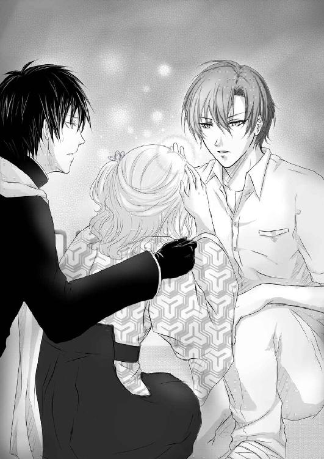
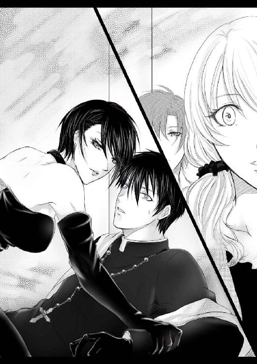
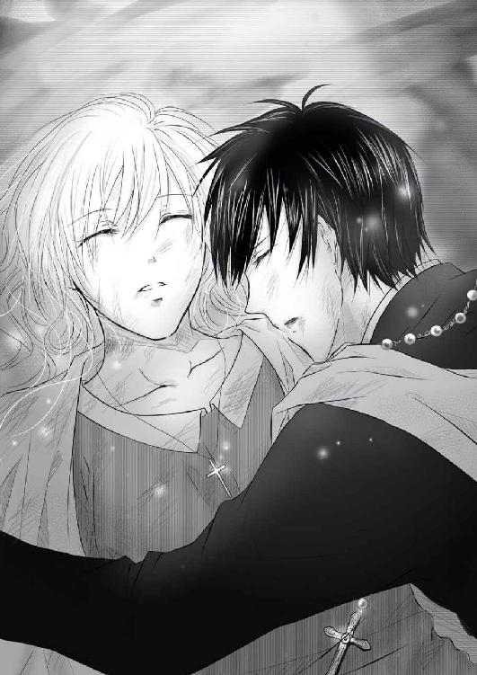
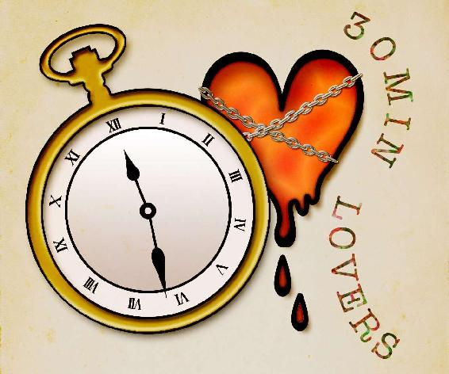

| 見える私と見えないあなた2 (30MIN LOVERS) | |
| 川島千夜 | |
見える私と見えないあなた ２
川島千夜
見える私と見えないあなた ２ ＊ 目次
★prologue★
「ミコトちゃん、これ持っていってくれる？」
「あ、はーい」
「ミコトちゃーん、こっちのお皿、空になっちゃったんだけど」
「今すぐ新しいの持ってきますね」
「うぅ......今日は特に冷えるねぇ」
「すみません。あとでひざ掛け持ってきますね」
ミコトは両手にお皿を抱え、信者とご近所さん、そして、聖職者たちの間を慌ただしく駆け回っていた。
彼女のヒラヒラとしたスカートが舞い、さながら、蝶が青空の下を楽しげに飛び回っているようにも見える。
「えっと......最後に出すパンとワインも準備万端だし......」
教会の庭からキッチンへ戻ってきたミコトは、慣れた手つきで配膳の用意をしていく。
慌ただしさからか、一つにまとめた長い髪が一房、首筋から鎖骨の上にほつれてしまっているが、彼女はそれに気が付くこともない。
そんな茶色く長い髪を、長い指がす......っと優しくかき上げた。
背後から伸びた長い腕。
無言で触れられたにも関わらず、ミコトは落ち着いた様子で、後ろに立つ人物を振り返った。
上背のある白い顔。
日本人離れした高い鼻。
深い紫色の瞳。
ミコトは黒い法衣を身にまとった、付き合いだして半年足らずの彼に微笑んだ。
「アギト、どうしたの？ 神父様たちはみんな、お客様のお相手をしているよ」
「タダ飯食いたさに集まってきた連中の相手をするほど、暇じゃない」
低く、良く通る美しい声で言った彼は、一見すると冷たいと思わせるほどに無表情な顔をして、ミコトのことを見下ろしていた。
だが、どうやら無関心というわけではなかったらしい。
アギトはミコトの頭に手を回し、彼女の小さな額にそっと口づけをした。
「すまなかった、映画に行く約束をしていたのに、こんなイベントごとに駆り出させてしまって......」
「ううん。教会とご近所さんの親睦を深める大切な行事だもの。むしろお手伝いができて良かったと思ってるよ」
「......ありがとう」
アギトは、いつもは硬いその顔に笑みを浮かべ、彼女の頬に手をすべらせた。
ミコトは、大好きな彼の体温と、その体に染み付いている乳香の香りを感じ、ゆっくりと、そして、嬉しそうに目を閉じた。
彼が身をかがめ、顔を近づける気配がし――――。「暖かいお紅茶ってないかしらー？ もう、こんな時期にお庭でパーティーだなんて、誰が考えたのかしら。凍えちゃうわよ」
無遠慮な来訪者の声に、アギトはガタガタと音を立ててミコトから離れた。
「お......お母さん......」
顔を真っ赤にしたミコトはこめかみをひくつかせ、キッチンの入口でキョトンとしている母親を振り返った。
「あら......あらあらあらあら。ごめんなさいねぇ、お母さんったら気が利かなくて。まーさーか、こんなところで逢引きしてるなんて知らずに。もう、いやねぇ。ちょっとお湯沸かしたら、みんなにはあんたたちは帰ったって言っておくから。......どうせだったら、キッチンじゃなくて神父さん――ここではアギトさんって言わない方がいいわよね――のお部屋借りたら？」
「お、お母さん、変な気遣いはいいから。お湯は私が持って行くから、庭に戻ってくれない？」
「あら、だって、ご近所でもないのに、私ったら『息子の未来の母だから』ってお呼ばれしたのよぉ。お手伝いくらいしないと罰が当たるわぁ」
あくまでもデン......と構えるミコトの母親。
「いえ......こちらがお呼びしたのですから、奥様にはくつろいで頂ければと思っています。むしろ娘さんに手伝わせてしまい、申し訳ないばかりです」
アギトは口元を抑え、必死に冷静を保ちつつ、他の来客と変わらぬ丁寧な対応を試みようとしている。
だが、その顔は赤く、うろたえているのが見て取れる。
アギトはミコトの母が嫌いなのではなかった。むしろ好感すら覚えているほどだ。
だが............苦手なのである。
「いいのよぉ、むしろさっさとお嫁にもらって、こき使って欲しいくらいだわぁ。神父さんと内密な結婚だなんて、もう、私がワクワクしちゃうわよ」
「お母さん......落ち着いて」
「落ち着いてるわよぉ。エクソシストだか、なんだかよくわからないけど、本当はアギトさんって結婚できない立場なんでしょ？ それでもうちの娘を貰ってくれるだなんて、ロマンチックな話じゃない。いいのよぉ、卒業まで待たなくったって。この子ったらほとんど学校にも行かず、よくわからない神道だか巫女だかの本を一日中読んでるんだし」
「おおおおお母さん、本当に戻って。お願い戻って。ほら、司祭様......司祭様がお待ちだから......」
「ああ、お母さんったら邪魔よね。気が利かなくてごめんなさいねぇ。あ、お母さん的には、先に出来ちゃっても気にしないから、もう、好きに――」
「お母さん、出て行って。今すぐに!!」
ほほほ、と楽しげに笑いながら去っていく母。
頭を抱えるミコト。
そして、苦笑するアギト。
「相変わらずだな。ミコトの母親は」
「ごめん......なんかもう、空回りしちゃてて......」
「気にしなくていい。母親が娘の結婚を喜ぶのは、当たり前のことだろうから」
「結婚を喜んでいるというよりも......からかうのが楽しくて仕方がないだけだと思う......」
「............ミコト」
アギトは桔梗色の目を細め、ミコトの前でだけ見せる優しい笑みを浮かべると、そっと彼女の左手を握った。
彼女の指には銀の指輪が淡い光を反射している。アギトはその指輪に目を落とし、口を開いた。
「卒業、待ってる」
「......うん......」
ミコトは静かに頷き、恥ずかしさからキッチンの窓へと視線を移した。
窓の向こうには、冬の空を背景に、古く整然とした墓地が広がっていた。
どこかその光景に寂しいものを感じ、ミコトは彼の手をしっかりと握ったのだった......。
これが――一月三十一日の話。
★Man of fox face★
「本学で学んだことが、今後の人生の標となることを祈ります。みなさん、ご卒業、おめでとうございます」
学長の最後の挨拶が終わり、春日屋ミコトを含む卒業生たちは、晴れやかな顔で大学の聖堂を出た。
天高く青空が広がり、絶好の卒業式日和だ。
「あーあ、四月から新社会人だよー。望み通り編集者として働けることにはなったけど、やっぱちょっとセンチになるなぁ」
ミコトの隣を歩く、幼馴染の山根さららが空を見上げて呟いた。
ショートカットで背の高い彼女は、卒業式のために着てきた窮屈な袴よりも、スーツの方がよほど似合う容貌である。
一方、栗色の髪をふんわりとまとめた、人形のように白い肌をしたミコトは、桜色の袴が良く似合っている。
彼女はその袴をひらりとひるがえし、さららに笑顔を向けた。
「でも、卒業しても、就職しても、結婚しても......私たちは一緒だよ」
「......ミコト......当たり前でしょっ!!」
さららは嬉しそうに口元を綻ばせると、背の低いミコトの頭をグリグリと撫でた。
幼少の時から一緒に居たミコトを、さららは妹のように可愛がっていたのだ。
「ちょっと、さららちゃん。髪の毛グシャグシャになっちゃうよ......」
「なぁに気にしてんのよ。どうせこれから彼氏にナデナデされちゃって、袴までグシャグシャされちゃうんでしょー」
「さららちゃん、下品......」
「本日よりミッション系の学生でもなくなりましたからね。そろそろ聞かせてもらいますよー」
「き......聞くって......？」
さららは校門を出たところで足を止め、ニヤニヤと、まるで酔っ払いの親父のような顔つきでミコトを見下ろした。
「あんた、あの神父の彼氏といつ結婚するのよ。確か去年の夏に婚約したんでしょ。幼馴染にその後の報告が無いなんて、由々しき事態だわよ」
幼馴染のその質問に、ミコトは一瞬悲しげな表情を浮かべた。
無言で自身の左手を見るミコト。彼女の指には、去年の夏からずっと銀の指輪がはまったままである。
「その様子からすると......結婚の話どころか、もしかしてなんの進展もない......とか？」
「う......うん。だって、ほらアギトはカトリックの助祭だし......私も学生だったし......」
「だからって、さすがにすることはしているでしょ......？」
「するって......な、な、何を!?」
さららの追及に顔を赤くするミコト。
アギト以外の......いや、アギトを含む男性全てに対し、いまだに緊張を覚えるミコトは、こうした猥談じみたことにも免疫がないのだ。
そんなことは知っていたさららだったが、大学も卒業する年になっての親友のこの態度に、わなわなと身体を震わせた。
「その様子から察するに、キスしかしてないわね。規律を破って婚約までした神父と、キスだけだなんて......キスだけだなんてーっ」
「キ、キスキス連呼しないでよぉー」
「だって、あのイケメンで長身の神父が彼氏なんて、乙女の夢の代表格よっ。それなのに、あんたがそんな奥手でどうするのよっ。もういっそのこと攻めて攻めて、既成事実先に作っちゃいなさいよっ」
「ちょっと、さららちゃん興奮しすぎっ。周りに人がまだいるんだから――」
「......こんなところで、何をはしゃいでいるんだ......」
「!?」
校門の真ん前で無駄な怒りに震えていたさららと、おろおろしているばかりのミコトが揃って目を大きく開いた。
「アギト!!」
卒業生で賑わう往来の真ん中に、黒い法衣に身を包んだ長身の青年が立っていた。
鬼神アギト。
教会勤めの助祭にして、エクソシスト。そして、ミコトの彼氏でありパートナーの彼は、鉄面皮と噂されるいつも変わらぬ表情で、彼女を見つめていたのだ。
「来てくれたの？」
彼の元に嬉しそうに駆け寄るミコト。
アギトはそんな彼女の頭に軽く手を置き、表情一つ変えずに口を開いた。
「卒業おめでとう」
おめでたいような、おめでたくないようなその口ぶりに、ミコトの後ろに立っていたさららが苦笑いする。
「もっと元気よく言ってあげなよー。せっかく愛しの彼女が大学を卒業したんだから」
「......仕事の話があるんだ」
「え、なになに。ミコトから若干聞いてたけど、あのエクソシスト的な仕事のことー？」
「悪魔祓いだ」
アギトは、しつこく質問を重ねようとするさららを拒絶するように、ミコトの方へと視線を移した。
「本当は親父に来ていた依頼なんだが......」
「うん、司教様は卒業式に参列してたし、行けないんだよね」
「ああ、すまないな。あれで大学の担当だからな」
「ふふ、仕方ないよ。じゃ、行こうか」
「......ちょっと待て、その格好で行く気か？」
流石のアギトも、華やかな袴姿で歩き出したミコトを止める。
隣でさららも、うんうんと頷いている。
「そうよ、これから謝恩会だってあるわけだし――」
「着替えに家に戻ったら、往復で四時間はかかっちゃうし、私これからガッツリ修行して、アギトのお手伝いできるようにならないといけないし、仕事優先にしていきたいの」
「そ......そう......。じゃあ、みんなには適当に言っておくよ。まさか、ミコトが悪魔祓いに行っちゃった、とは言えないしね」
「うん、ごめんねさららちゃん」
「はいはい。あとで話聞かせなさいよ。大事なネタなんだから」
「ふふふ。早く行こう、アギト」
「......ああ......」
張り切るミコトとは対照的に、アギトはどこか気乗りしない様子で背中を向ける。
歩き出すアギトと、慌ててその後ろをついていくミコト。
不思議な組み合わせの二人に、卒業生たちはまるでモーゼの十戒の海のように道を開け、好奇の目線を送っている。
彼らの様子を見ていたさららは、不安げなため息をついた。
「平々凡々、地味に目立たず生きてきたあのミコトが、ここ一年足らずで幽霊が見えるようになって、神父と恋に落ちて、あげくにエクソシストの助手になるとか......。もう心配で、心配で......笑えてくるわ」
★★★★★★
「××市の好摩団地までお願いします」
アギトはタクシーに乗り込むと、一言目的地を伝えたきり、黙り込んでしまった。
整った目鼻立ちをピクリとも動かさず、彼は窓の外に顔を向けている。
ミコトはそんなアギトの横顔をちらりと盗み見て、かすかに肩を落とした。
「あー、お客さん、そこの大学の卒業生？」
「あ、はい」
タクシーの運転手に話しかけられ、ミコトは慌てて前を見る。
黒い法衣の神父と、華やかな卒業式の袴を着た女の子の奇妙な組み合わせに、タクシーの運転手は興味を露わにしている。
「へえ、そりゃおめでたいね。ってことは、彼はそこの大学の神父さんかな？ なんだか駆け落ちみたいでいいねぇ」
「いえっ、そ、そんなことじゃないんです。ちょっと仕事で......」
「仕事？」
「あ......あはは......」
ミコトは答えに窮し、適当な愛想笑いを浮かべて誤魔化した。だが、アギトは変わらず外に目を向けたまま、彼女の方を見ようともしない。
（アギト......今日もあんまり機嫌良くない......）
ミコトは桜色の着物の袖を弄び、一人思案に暮れた。
（最近、笑顔を見せてくれていないし......。せっかくの卒業式だっていうのに、おめでとうって言ってくれただけだし......。最後に笑顔を見たのって、一月末の親睦会の時だったような......）
タクシーは午後の陽ざしを浴びて高速を走る。
安定した振動に眠気を誘われ、ミコトの自問自答は更に深くなっていく。
（ううん、だめだめ。おめでとうって言ってくれただけでも、幸せだって思わないと罰が当たっちゃう。けど......そう言えば、最近じゃ手もつないでない......）
ミコトは、アギトの細いが大きな手で撫でられた髪に手をやり、ふるふると頭を振った。
アギトと付き合い始めて、そろそろ一年。
出会いのきっかけも、付き合った経緯も衝撃的なものだった。
祖母に封じてもらっていた、『幽霊が見える』という霊能力がアギトとの出会いで、フルオープンになってしまった。
それは怖がりで、泣き虫なミコトにとっては拷問のような能力だったが、エクソシストなのに幽霊の見えない彼の、助けになるならばと思っていた。
だが......。
（私が卒業したら結婚しようって約束......どうなったんだろ）
このところ、教会での助祭としての仕事と、エクソシストとしての夜の仕事の兼ね合いでミコトとはすれ違いが多く、たまに会うのも仕事上でのことだ。
「はぁ............」
ミコトは複雑な心境を胸に隠し、小さなため息をついた。
「......ミコト」
「は、はいっ!?」
突然、アギトに声をかけられ、ミコトはビクリと背筋を伸ばした。
ため息を聞かれてしまったのかと不安になったが、どうやらそうではなかったようだ。
アギトは持っていた地図と手帳を広げ、淡々とした様子で口を開いた。
「今回の現場はこの先の団地だ。昔からある古い団地で、広場......というか、公園を中心に北東、南西、南の五階建ての三棟を備えてある」
手帳に書かれたきれいな文字が、ミコトの目に眩しい。
ページの端々に、見たこともない記号やスペルが書かれてあるが、それも呪術的な何かなのだろうか。
手帳に見入っているミコトをよそに、アギトは更に言葉を続ける。
「現象としてはありきたりなものだ。風もないのにブランコが揺れることから始まり、北東の棟では酷いラップ音と、ポルターガイスト」
「うーん、団地って霊のたまり場になりやすいし、前もこんな相談あったよね」
「あの時は呪いのアイテムを掘り出して壊して、それで終わりだったが......。今回は、子供の霊が原因ではないかと思う」
「子供............」
ミコトはかすかに眉をひそませた。
「中央の公園で、深夜になると子供が一人遊んでいるのが、度々目撃されているらしい。声をかけると消えてしまうが、驚いて逃げようとすると、鼓膜が破れそうな音量で泣き叫ぶ。もちろんその声は目撃者にしか聞こえないものだが、最近では北東の棟では子供が泣く声が、夜な夜なずっと聞こえ続けているらしい」
「それは......怖い......っ!?」
「？」
「あ......うん......怖いね......」
タクシーの窓の外を、首の無くなったライダーが追い越していったのが見えたが、いつものようにミコト以外には見えていないようなので、彼女は気にせずにアギトの話に集中しようとする。
「こんなことが二か月三か月と続き、恐怖を抱いた住人が逃げ始めたため、これ以上空き室が増える前にと、行政が除霊の依頼をしてきた」
「話を聞く限り、やっぱり子供の霊が原因だと思うけど......」
ミコトは不安げに自身の手を握った。
「......気乗りしないか？」
アギトは静かに、彼女に目線を移した。
「ちょっとだけ嫌な予感がするの。子供の霊絡みだとあまりいい思い出がないからかもしれないけど......。でも、お仕事を選ぶことなんてできないしね。もしかしてその子供の霊は苦しんでいるかもしれないし、助けてあげないと......だよね」
口ではそう言っているものの、握りしめた手は不安げに震えている。
アギトは手帳を閉じ、そっと彼女の方へと手を伸ばし――何かを思い出したかのようにその手を戻した。
「アギト......？」
彼は考えるように自分の手を見ていたが、やがて、ほんの少しだけ小さな笑みを浮かべた。
おそらく、ミコトでなければ気が付かないほどの、小さな変化だ。
「ミコトが嫌なら俺一人でも構わない。今回はやめておくか？」
ミコトは久しぶりにアギトの表情が変わるのを見て、内心嬉しく感じながらも、首を横に振った。
「ううん。でも私がいないと、見えないじゃない？」
「お前のように、そこら辺を浮遊している霊を見られるほどではないが、悪意がある霊ならその形を見ることはできる。ただ、親父が悪魔祓いのときは必ずパートナーを連れて行けとうるさいから、声をかけさせてもらっているだけだ」
「司祭様は、あれで心配性だから」
「単に、俺が半人前だから信用していないだけだろう。霊の見えないエクソシストなんて役立たずもいいところだと、日頃罵られている」
「まったく見えないわけじゃないし、悪霊は見えるんだもの、むしろその方が便利だよ。なんでもかんでも見えちゃうより......」
「..................」
小さく苦笑を浮かべるミコト。
そんな彼女の目線が再び、アギトの顔の後ろにある窓の外に逸れた。
どうやらまた、車の外を走る『なにか』に気が付いたようだ。
アギトはそんなミコトの目線を追って窓の外を見るが、彼に見えるのは幹線道路から外れた、古くも整然とした住宅街だけだった。
「............あの」
無言で窓の外を見るミコトたちに、運転手が我慢しきれなくなったように再び声をかけてきた。
「お客さん方......やっぱり霊媒師かなんかかい？」
「............単なるエクソシストだ」
「アギト、エクソシストで単なるとかないから......」
不愛想に答えるアギトに、ミコトは慌ててフォローを入れるが、運転手は嬉しそうに声のトーンを上げた。
「いやー、本当にいるんだねぇ、そういう職業の方。いや、そうじゃないかと思ったんだよ。この先の団地、出るって有名だし、そんなところに神父さんと着物姿のお嬢さんが行くってことは、駆け落ちじゃなけりゃ――」
「そこの団地の入口の前で止めてくれ......」
アギトは興奮した様子の運転手の言葉を遮ると、手早く料金を支払った。
折よく目的地についてしまっていたのもあり、運転手はちょっと残念そうにしていたが、ミコトたちを降ろすと素直にタクシーを走らせて、消えていった。
ミコトの手を取ってタクシーから降りたアギトだったが、すぐに彼女の手を離し、疲れたように首をひねった。
「興味本位で話しかけてくる奴が多くて困る」
「感覚がマヒしてくるけど、たぶん普通の人から見たら、ものすごく珍しい存在だからね、幽霊も、私たちも......」
「そうか？ 見えない奴らからしたら俺たちは詐欺師で、見える者からしたら当たり前の存在だと思うが」
「うん......アギトのそういう感覚も、きっとレアなんだと思う」
「？」
不思議そうに自分を見下ろすアギトに苦笑し、ミコトは周囲に目線を移した。
夕暮れ迫る団地は、物悲しいほど静かだった。
本来なら帰宅する子供や、それを迎える母親の姿があってもいいものだが、このところの異怪騒ぎのためか、まったく人の気配がない。
幽霊。
異怪。
そして、逢魔が時。
太陽が身を引き、人工的な街灯の明かりが打って変わって世界を照らす。
街灯の光が届かない木々の闇から、白く長い腕が伸び、地面に落ちた影にボロボロの服を着た古い霊が浮かぶ。
蝙蝠と共にオーブが空を漂い、非業の死を遂げた、人間だったモノたちが当てもなく彷徨い出す。
ミコトは暗がりのそこかしこから、肉体を持たないモノたちが自分たちを見ているのに気が付き、緊張したようにアギトの腕を掴んだ。
「......見えるか？」
「うん......たくさん。でも、彼らは何もしない人......じゃなくて霊だから。ただ、そこにいるだけの悲しい霊だから、大丈夫......」
ミコトは固く目をつむり、首に下げていた、アギトから貰ったクロスに意識を集中した。
気持ちを強く持たないと、霊に付け入られる。
何度も、自分に言い聞かすミコト。
――リーン。
アギトの腰につけていた銀の鈴が涼しげな音を奏で、力の弱い霊、ただそこにいるだけの霊がス......っと姿を消していく。
ミコトは小さく息を吐き、目を開いた。
「大丈夫か？」
「うん、団地や学校は集まりやすいから仕方ないもの。それにアギトがいれば、向こうからちょっかい出してくるようなこともないし」
「そうか......じゃ行くぞ」
アギトは冷静に言うと、そのまますたすたと歩き出す。
ミコトの怖がりを知っているアギトは、いつもなら彼女と手をつないで歩いてくれるはずなのだが、どうも彼女に触れることを拒んでいるようだ。
仕方なくアギトの後ろに並び、ミコトも団地の奥へと歩いていく。
生臭く、生暖かい風がミコトたちを迎える。
ミコトは、古いコンクリートの建物を見上げた。
「ところどころ、明かりのついている窓があるってことは、少ないながらも人が住んでいる......っていうことだよね。みんなが怖がって引っ越したりしている中で残っているんだもの、きっと不安なはずだよね」
「いっそ、残った住人の前で、大々的に祭壇を作って儀式でもしたら、どいつも安心して幽霊騒ぎも治まる気がするんだがな......」
「また、人間の思い込みのせいにする......。アギトだって、幽霊が見えるようになったんでしょ。ちゃんと、霊はいるんだよ」
「......お前ほど見えるわけじゃないからな」
アギトの言葉に、どこか悔しそうな響きを感じ、ミコトははっと顔を上げた。
見上げた彼の顔はいつもと変わらず、美しく、そして厳しい顔だ。
元々、アギトはエクソシストでありながらも、霊を見たことがなかった。
依頼があれば父に命令され渋々悪魔祓い的なことはやっていたが、本人は霊も悪魔も、そして神さえも信じていなかったのだ。
ミコトと出会い、とある切っ掛けで多少は見えるようにはなったものの、ミコトのようにはっきりと見えているわけではない。
業の深いモノ、害をなすモノが辛うじて影のように見えるらしい。
それでも、代わりに自分が霊を見ればいい、ミコトはそう思っていたのだが、アギトはそのことを気にしているようだった。
（なんでも自分で背負い込もうとして......）
ミコトはアギトの白い横顔を見上げて、再び小さなため息をついた。
と、その時――。
キィ......。
キィ......。
悲しげな、金属が揺れるような音が耳に飛び込んできた。
キィ......。
キィ......。
「......アギト、なんか音が聞こえる......」
「ああ、俺にも聞こえる。中央の公園からだ」
ミコトはアギトの後ろに隠れるようにして、暗い団地の駐輪場を抜けた。
先にあったのは、団地の中央にある、ちょっとした公園だった。
小さな滑り台と、桶ほどの砂場。
そして錆びたブランコがあるだけの公園に......その少女はいた。
春先の汗ばむ陽気だというのに、毛玉のついた赤いセーターを着こみ、頬を泥で汚したその少女は、精気の失せた目で地面を見つめ、ブランコに座っていた。
キィ......。
キィ......。
かすかに動くブランコが、切なげな音を立てている。
蛾が飛び回る外灯がブランコと女の子を照らし、胸が締め付けられるような悲しい情景だ。
「アギト......あの子......人間じゃない......」
ミコトは、地面に落ちた長い黒い影が、ブランコの影だけであることに気が付き、小さく身震いした。
「そのようだな......」
アギトはポケットに入れていた聖水を手に持ち、その蓋に親指をかけた。
ゆっくりと少女に近づくアギト。
そして、アギトの後ろにいたミコトは――彼の腕をギュッと掴んだ。
「待って」
「ミコト？」
「なんか......違う気がする」
ミコトは、ただひたすらブランコをこぎ続けている少女を凝視した。
泥のついた頬に精気はなく、小さな唇が青くひび割れている。
その青くひび割れた唇が、時折ピクピクと動いていた。
どうやら、何かつぶやいているらしい。
よく見ると、その目には涙がたまっているのもわかる。
ミコトはアギトの腕を掴んだまま、首を振った。
「あの子......悪い子じゃない」
「じゃあ、ミコトのよく言う『そこにいるだけの霊』なのか？」
「......それとも違う」
「じゃあ――」
「古い霊だと思う。それも結構思いの強い霊。でも......わからないけど......でも......」
ミコトは必死で目を凝らし、自分のカンとの裏付けを探す。
アギトはそんなミコトと、ブランコに乗っている少女の霊を見比べ――結局、聖水の蓋を開けることにした。
「どちらにしろ、俺に見えるほどの霊だ、除霊しておくに越したことはない」
「え、あ、待って！」
ブランコに近づき聖水をかけようとしたアギトを、ミコトは慌てて止めた。
「彼女は、そっとしておいてあげた方がいいと思うの」
「だが、彼女が原因でないとしたら、この幽霊騒ぎの霊はどこにいるんだ？」
「それは......わからないけど......」
答えに困ってアギトから手を離したミコトだったが、ふと、少女の霊がこちらを向いていることに気が付いた。
――タスケテ......。
少女の口が動き、ミコトの頭に声が響く。
耳から聞こえたわけではない。
事実、隣にいるアギトには、聞こえていないようだ。
聴神経が直接音を拾ったような不思議な感覚だったが、それでもミコトにははっきり聞こえていたのだ。
――タスケテ......。
「助けて......って言ってる......」
「......俺には何も聞こえないが......？」
ミコトの様子に、アギトは困惑するばかり。
だが、ミコトはアギトの横に並ぶと、少女の黒い落ち窪んだ目を見つめた。
――タスケテ。
――オネガイ。
「大丈夫、聞こえているよ。どうしたらいいの？」
――キテ。
――オネガイ。
――キテ。
「......わかった」
ミコトは少女の霊に呼ばれるがままに、ブランコに向かって歩き出した。
「おい、ミコト!?」
アギトは歩き出したミコトを止めようとし、気が付いた。
少女の霊が、ミコトに向かって手を伸ばしていることに。
霊は――悪魔は微笑み、黒い瞳でミコトがその腕に飛び込んでくるのを待ち受けていたのだ。
「――危ないっ！」
「キャッ!?」
アギトはミコトを抱きよせると、持っていた聖水を少女の霊に振りかけた。
「Purgationis causa, demonem animae!!」
アギトの唇が『力ある言葉』を刻み、聖水が本来の力を発揮する。
まるで熱湯をかけられたように、少女の顔が歪み、大きく引きつっていく。
――キャアァァァァ............ッ!!
「あ......い......痛っ!?」
少女の叫びがミコトの頭に響き、鋭い痛みを引き起こす。
「ミコトっ!?」
「声が反響して......頭......痛い......っ」
痛みで頭を抱え、ミコトはしゃがみ込んでしまった。
アギトは彼女に腕を回し、怒りを込めて少女の霊を睨む。
顔を引きつらせたままの少女の霊は、怒りと絶望を交えた表情で口を大きく開いているが、その声はアギトには聞こえない。
「しぶとい......っ」
アギトは小さく十字を切った指先を唇に当て、追い打ちをかけるように呪文を口にする。
「Et ire ad caelum――――」
「そこまでーっ」
「っ!?」
呪文を唱えかけていたアギトの前に、一筋の光が横切る。
慌てて後ろに飛びずさった彼の足元に、ザクリと一本の短刀が突き刺さった。
「なん......だ......？」
呆然と短刀を見つめるアギトの前に、ふわりと白い影が舞い降りた。
どこからどう飛んできたのかはわからないが、風をなびかせ、紙のように軽い足取りで着地する白い影。
そんな白い影が、ぺこりと頭を下げた。
「失礼、敵意はないんだけど、ちょっと仕事の邪魔になりそうだったから、制止させてもらったよ」
ニコリと笑うその白い影は、どこかキツネを思わせるような、細面の美青年だった。
白いスラックスに白いワイシャツ。色白で、どこもかしこも白尽くめの青年だったのだが、人工的な赤い髪と、赤い瞳が唯一の色を放っていた。
ミコトは彼のビジュアルに、頭の痛みが引いていることにも気が付かず、驚いていた。
「あ、あの......あなたは......？」
おずおずと尋ねたミコトを見て、彼は満面の笑みを浮かべた。
「わぁ......こんなところに巫女様がいるとは！」
「え......わ、わかるんですか？」
驚くミコトに白い彼はずいっと近づき、その手を取る。
背後でアギトがピクリと動くのを感じたが、それよりも握られたひんやりとした手の方が気になり、ミコトは彼に手を取られたまま固まっていた。
「ボクにはわかるよ。キミは座摩巫の子孫だね。顔つきも、まとっているオーラも普通とは違う。ああ......清らかで、洗練されて、力強くて......」
彼は切れ長の細い目をさらに細め、うっとりとミコトを見つめた。
「美しい............」
「え......え......ええっ!?」
ミコトの顔が、白い彼の髪よりも赤くなった。
なにせ、彼が『美しい』という言葉と共に、ミコトの手の甲に口づけをしたのだ。
ミコトの背後から、ビキリ......という鈍い音が聞こえる。
おそらくアギトが、持っていた聖水の瓶を握り潰したのだろう。
ミコトは動揺し、握られた手を引こうとするも、ふんわりと握られているはずのその手が動かない。
「あ、あの......離し――」
「彼女に勝手に触るな」
アギトは白い彼の手をはたいてどかす。
桔梗色の瞳が怒りを込めて睨みつけているも、白い彼は動じた様子もなく、むしろつまらなさそうにアギトを見返した。
「んー......ああ、キミはエクソシストか。座摩巫とエクソシストがここに居るってことは......仕事がダブルブッキングしちゃったのかな」
彼はそう言って、地面に突き刺さっていた小刀を引き抜いた。
一見何の変哲もない小刀に見えたが、その銀の刃には細かい紋様が刻まれ、破魔の役割を果たしていることがわかる。
そのことに気が付いたミコトは、アギトの背中に隠れながら言った。
「あなたも......エクソシストですか？」
「いやいや、ボクは単なる......お祓い屋だよ」
「お祓い屋!?」
彼はミコトの反応に満足そうにうなずくと、クルリと手をひるがえして、マジックのようにお札を広げて見せた。
「挨拶が遅れまして。ボクは東条小里弥。普段はフリーのお祓い屋をやっててね。とある人物からのご依頼で、この団地の霊障を治めてほしいと頼まれたんだ」
「胡散臭いな......」
敵意も露わなアギトに、東条は気分を害した風もなく微笑みかける。
年の頃はアギトと同じくらいであろう。
軟派っぽいとも言えなくはない。
しかし............。
アギトよりほんの少し背の低い彼だったが、それでも堂々とした風格はアギトよりも各上に見えてしまうほどだった。
「同業者からそう言われるとは光栄だね。エクソシスト、巫女、拝屋、霊媒師、陰陽師、霊能力者。なんでも構わないけど、こうした霊能力のある人間は、胡散臭さとハッタリが勝負なんだよね」
「ハッタリって......」
ミコトは呆れて、肩の力を抜いた。
今まで幽霊を見ることができる者は、自分を除くと、アギトと、その父の司祭だけだと思っていた。
だが、世界は広い。クソシストでなくとも、霊を見て、除霊することができる人間は沢山いるのである。
それがまさか、このような形で遭遇するとは思わなかったが......。
「......詐欺師は帰れ。仕事の邪魔だ」
「おやおや、今度は詐欺師呼ばわり？ 紫おめめの神父さんは愛想が悪いね」
「俺は自分が見たものしか信じない。俺の前で悪魔祓いができたのは親父とミコトだけだ。それ以外のヤツはみな、偽物だ」
「あはは、ずいぶんと頑固な神父さんもいたもんだね。だったら、神様も見たことないから、いない......なんて言う気かい？」
「ああ、神はいない。俺が見てきたのは霊と悪魔だけだ」
「......キミ、本当に神職者？」
さすがの東条も、アギトの頑なな言葉に戸惑いを示す。
「んー............」
しばらく赤い瞳が宙を彷徨っていたが、どうやら話を戻すことにしたらしく、彼はしっかりとアギトを見据え口を開いた。
「ともかく......ボクの本当の仕事は他にあるし、さっさとここの霊障の原因を見つけて戻りたんだよね。だから、キミは仕事が終わったことにして帰っていいよ。あ、そこの小リスみたいな巫女ちゃんは、後で一緒にお茶でもしようよ。すぐに済ませて戻ってくるからさ」
「わ、私は――」
東条の、あまりに軽いノリに困惑するミコト。
だが、彼女に代わり、こめかみに血管を浮き上がらせたアギトが返答をした。
「悪いが、彼女は俺の恋人で、この仕事は俺が依頼されたものだ。お前が一人で帰れ」
「本当に愛想がない上に、邪険な神父さんだね。キミじゃ事の真相に近づくのが遅くなりそうだから、ボクが受け持った方がいいんだよねー。お祓いって言っても、物事の真髄を見極めなければ事件は解決できないんだし」
「お前が邪魔をしたんだろう。悪魔祓いは原因となる悪魔を払えばいい。ただそれだけのことだ」
「やれやれ、西洋的な考えだね。勧善懲悪ってやつ？ 浮かばれないね」
「人に害なす悪魔は浮かばれる必要性もない」
「ふーん............」
「..................」
にらみ合う二人。
過ぎゆく時。
周囲は完全な闇と化している。
ミコトは長身の二人の後ろで、ただおろおろするばかりだったが、そんな彼女の目に、動き出した影の姿が入り込んできた。
「あ......あの子......っ！」
アギトに聖水をかけられた少女の霊が、闇にまぎれ、音もなく逃げようとしていたのだ。
この地に断ち切れぬ思いを抱いているのか、アギトの聖水が力を奪ったのか、少女の霊は足を重く引きずるようにしているが、それでも走るような速度で、北東に位置する古い建物の中に逃げ込もうとしている。
「......ま、待って!!」
ミコトはにらみ合うアギト達から離れ、今にも団地の壁に溶け込もうとしている少女の霊の元へ走った。
一呼吸置いて、ミコトの動きに気が付くアギト。
「ダメだっ、一人で行くなっ！」
アギトは慌ててミコトを追う。
しかし、彼の到着を待っていたら、少女の霊はどこかへ行ってしまうであろう。
多少なりとも聖水を被りダメージを負っているのだ、次はいつ出てくるかわからない。
ミコトはそう考え、手を伸ばして少女の霊の手を捕まえようとした。
「お願い、待って......」
ミコトの手に奇妙な感覚が走る。ぬるりとした、粘液的な空気を掴む感覚。それでいて冷たく、痛いほどの悲しみと恐怖が指先から伝わってくる。
霊を掴む不快な感覚に、気を取られたミコト。
そして、霊を相手にする仕事は、その一瞬が命取りになるのである。
――サワラナイデッ!!
ミコトの頭に、少女の霊の鋭い声が響いた次の瞬間、彼女の眼前に恐怖と怒りで歪んだ少女の顔が迫ってきたのだ。
（殺される......っ）
本能がミコトに警鐘を鳴らすも、体が金縛りにあったように動かない。
顔を二分するほどに大きく開いた少女の口が、ミコトの頭を飲み込もうとかぶりつき――。
「天地玄妙神辺変通力離」
低く、鋭い声が二人の間に割って入った。
――キャアァァァァッ。
少女の霊の頭には、先ほど東条が広げていた、お札の一枚が張り付いていた。
ジュウ......と肉が焦げるような音を立て、お札が少女の霊の力を吸い上げていく。
――キャアァァァァッ。
――キャアァァァァッ。
「痛っ......」
叫び、体を捩じらせてミコトから離れ、消えていく少女。
その少女の叫びがミコトの頭に木霊し、ミコトは頭を抱えて地に突っ伏してしまった。
「ミコト......っ」
アギトは頭を抱えたままのミコトを抱きかかえ、心配そうに彼女の顔を見ようとする。
「頭......叫び声が......止まらないの......っ」
消えたはずの少女の霊の叫びが、脳に木霊し続ける。
顔面蒼白になって呻くミコトに、アギトは手を添えて落ち着かせるように言った。
「あの霊とのつながりが深くなり過ぎたんだ。ゆっくりと深呼吸して、つながりを切れ。あいつはお前じゃない、大丈夫だ」
「う......うん......痛たたたっ！」
「ああもう......」
痛がるミコトを見かねて、アギトは彼女の額に指を当てた。
「Ego silentium anima mea ......」
「痛い......いたたたっ!!」
小さく祈りを捧げ、叫ぶ霊の声を断ち切ろうとするが、痛みで緊張したミコトは、ますます身を固くし、アギトの手を振り払ってしまう。
「ミコト、力を抜いてくれっ」
「う......うう......っ」
脂汗を流すミコトに、アギトは焦りを見せ始める。
そんな二人を見ていた東条は、見かねたように声をかけた。
「ずいぶんと通りのいい巫女ちゃんだね」

そう言った彼は、痛みでエビのように丸まったままのミコトの頭に手をかざし、低く優しい声で真言を紡ぐ。
「天地玄妙神辺変通力冶......天地玄妙神辺変通力冶......天地玄............」
東条の真言が三度繰り返される前に、ミコトの頭から痛みが流れるように消えていく。
あれほど騒々しく脳内で騒ぎ立てていた少女の叫び声も消え、ミコトは額に汗を浮かべながらも、ゆっくりと目を開けた。
心配そうな顔で覗き込むアギトと、澄ました笑みを浮かべる東条。
二人を見比べ、ミコトは身体を起こした。
「聞こえない......あの子の叫び声が聞こえなくなってる！」
「本当は有料なんだけど、巫女ちゃんは可愛いから、タダで繋がりを切ってあげたよ。ま、ボクにとっては、ちょっとしたおまじない程度の労力だしね」
「おまじない......？」
東条は持っていたお札で口元を隠すと、赤い瞳をす......っと細めた。
「巫女ちゃんはピュアで、霊と心が通いやすいみたいだからね。時にそれは相手に心を奪われることになる。優しい証拠だけれども、この仕事には不向きだよ」
「......ごめんなさい......」
「......お前が謝ることなはい」
謝るミコトを立ち上がらせ、アギトはミコトの顔に汗で張り付いた髪を整えてあげる。
東条は、その光景を、口をとがらせて見ていた。
「ずいぶんと過保護だね。ま、守りたくなっちゃう気持ちはわかるけど」
「まだ彼女は、力を制御しきれていないからな」
「だったら、神父さんが彼女の力を制御する術を覚えないと。恋人であり、パートナーなんだったらさ」
「..................」
悔しそうに唇を噛むアギト。ミコトの肩を掴む彼の手に、かすかに力がこもる。
周囲は完全に夜の帳が落ちていた。
あれだけの騒ぎがあったにも関わらず、相変わらず団地の外にはひと一人現れることもなく、住人達はひっそりと様子をうかがっているようだった。
古い団地に生臭い風が吹き、かすかに赤ん坊の泣き声が聞こえる。
「夜が来る」
「......え？」
東条の赤い瞳に街灯の光が反射し、まるで獣のように目が光る。
「鬼たちが活発になり、霊が目覚める夜が来る......」
ミコトを脅すかのように低い声で東条は言葉を続け、そんな彼の様子にミコトは小さく身震いをした。
その時――――。
パァンっ!!
「きゃっ!?」
大きな音が建物から鳴り響いた。
突然、何もしていないのにアスファルトにひびが入り、風もないのに藪がざわめきだす。
ミコトたちの背後にあるブランコが大きく跳ね飛び、ギイギイと耳障りな音を立て始めた。
「ポルターガイストだ......」
あちらこちらで踊りだすように黒い影が現れ、霊障に慣れたとはいえ、怖がりなミコトの動悸が速くなってくる。
だが、東条は足元の地面のヒビを足先で突っつき、鼻で笑った。
「霊障って言っても大したことないね。こんなことくらいで大騒ぎしちゃって、人間って本当に弱いな」
馬鹿にしたように言う東条に、ミコトは少しだけ厳しい目を向ける。
「こんなことが毎晩起こっていたら、普通の人だったらとても怖いはずです。早くどうにかしないと」
「大した正義感だね。さすが巫女ちゃん」
「正義感じゃありません。ただ......怖いと思う人の気持ちが......弱い人の気持ちがわかるだけです」
「..................」
怯えながらもしっかりと言ったミコトを、東条は興味津々といった風に見つめている。
「......東条、先ほどのお前の護符はどれほどの威力があるんだ？ あの少女の霊を消し去ったようには見えたが......」
「んー、大した力はないよ。ちょっとびっくりさせて、追い払ったに過ぎないし」
「ということは、まだこの界隈にはあの霊がいるということだな......」
「アギト、でも、このポルターガイストの原因はあの子じゃない......絶対にあの子じゃないもん」
「じゃあ、何が原因だっ――痛っ!?」
「アギトっ!?」
アギトは、突然横手から飛んできた小石に頬を掠られ、たたらを踏んだ。
「どうやら、この地はボクらを歓迎してはいないようだね」
東条は、飛んできた大ぶりの木の枝を軽い身のこなしで避けて、言った。
先ほどよりも木々がざわめき、ミシリミシリと地面がうなっている。
空き缶が勝手に転がり、意思を持ったかのようにこちらへと飛んでくる。
「きゃっ......」
ミコトめがけて飛んできた空き缶を、アギトが蹴り落とす。
ミコトは小さく礼を言うと、再び耳を澄ませて呟いた。
「こんなんじゃ......赤ん坊も落ち着いて寝られないね......」
「赤ん坊？ 何か聞こえるのか？」
「聞こえない？ さっきから赤ん坊が泣く声が......」
「あー、ごめん。さすがにボクも、何も聞こえないな」
「え......」
ミコトは二人の目線を浴び、はたと気が付いた。
「この赤ん坊の泣き声が聞こえてるのって、もしかして私だけ？」
「みたいだね。巫女ちゃんは見えるだけじゃなくて、聞くこともできるんだ。すごいね。でも......おかしいなぁ、霊の声ならボクでも聞こえるはずなんだけど......」
「お前の修行が足りてないだけだろう」
「なら、キミは聞こえるのかい？ 紫おめめの神父さん」
「どこかのキツネが吠える皮肉がうるさくてな」
「ボクがキツネなら、キミはさしずめ犬ってところかな。弱くてよく吠える犬」
「キツネは犬に狩られる生き物らしいぞ」
「生臭神父......」
「詐欺キツネ......」
「もー二人とも静かにして！ きっとこの赤ん坊の声が霊障の原因だと思うの。私、追ってみる」
ミコトは今にも取っ組み合いになりそうな二人の間に割って入ると、全神経を耳に集中して赤ん坊の泣き声を辿り始めた。
「..................っ」
目をつぶり、音を辿って歩くミコトの前に、捨てられていた空きビンが飛んでくる。
だが、目を閉じていたミコトは逃げるチャンスもなく、ただ身を硬くして衝撃に備えて――――。
パリン......っ。
空きビンはミコトに当たる直前、アギトの手によって叩き落され、アスファルトの上で粉々になった。
怖々と目を開けたミコトは、自分のすぐ隣に立つアギトの藍色の目を見る。
意思の強そうな、落ち着いた彼の瞳。
怪しげに吹く風に、短い髪をなびかせたアギトは、口を開いた。
「大丈夫だ。お前のことは俺が守る。一切を気にせず、赤ん坊の泣き声を辿れ」
「......うん！」
ミコトはうなずき、再び耳を澄ました。
――ギャアアァ......オギャアァ......。
聞こえる。
お腹が減った、母が恋しいなどという欲求からの泣き声ではない。
悲しいというよりも、助けを求めるような必死な叫びだ。
ミコトは焦る気持ちを抑えて、その泣き声を追って足を動かした。
「この上の方から聞こえる......」
ミコトは、少女の霊が逃げ込もうとしていた北東の棟の入口に立つと、袴をひるがえして走り出した。
「巫女ちゃん、一人で行くと危ないよ」
「お前は付いてくるなっ」
東条とアギトもミコトの後ろについて走り、エントランスを抜ける。
湿気を含んだコンクリートの壁にはひびが入り、否が応でも古い建物であることがわかる。
五階建てのわりには、エレベーターの設置すらない。
そんな建物の階段を上がりながら、ミコトはだんだんと赤ん坊の声が大きくなっていくのを感じていた。
――オギャアァ......オギャア......。
「......ここ。......ここの部屋から聞こえる」
ミコトたちは三階の、とある一室の前で足を止めた。
鉄製の、錆の浮いたドアの前で顔を強張らせるミコト。
彼女の耳には、赤ん坊の悲痛な鳴き声が大きく聞こえている。
「聞こえるな......」
「ああ、聞こえるね」
ミコトにしか聞こえなかった赤ん坊の声は、いつしかアギト達の耳にも聞こえるようになっていた。
ドアの向こうから、かすかに聞こえる赤ん坊の泣き声。
それは――生きている赤ん坊の声だった。
ミルクを求める泣き声にしては、酷く切羽詰っているようだ。
ミコトはアギトの顔を見ると、震える指を伸ばし、インターフォンを押した。
鉄のドア越しに、安いチャイムの音が鳴り響くのが聞こえる。
それと同時に、赤ん坊の泣き声が小さくなる。
「あ......あの......すみません、行政に依頼されて――ムグ!?」
呼びかけようとしたミコトの口がふさがれた。
口をふさいだのは、呆れた顔のアギト。
加えて、東条までもがアギトの行動に納得したようにうなずき、何もわからないミコトは、のぞき穴から死角になる位置に、東条と共に押しやられてしまった。
「......どなた？」
ドアの向こうから、警戒したような女の声が聞こえる。
アギトは、目を伏せ、手を組み、あたかも敬虔な神父のように真摯な表情を浮かべた。
「この地区に新しく赴任されることとなりました、第一西教会の神父です。この度、教会の再建築に向けての募金をお願いしており――」
「うちにお金はないわ......」
「いえ、大した額でなくていいんです、百円でも十円でも。神は金額に関係なく、募金をしてくださった御心に対し、祝福と浄罪をお与えくださいます」
「............罪......」
一瞬の間があったものの、やがてドアの向こうから鍵を開ける音がし、ゆっくりと扉が開いた。
「本当に......十円でもいいかしら？」
そう言って、細く開いた扉の向こうから顔を出した女は、酷くやつれ、まるで山姥のような風貌だった。
古い、畳の腐ったような臭いが押し寄せ、物陰に潜んでいたにも関わらず、ミコトは思わず口を押えてしまう。
アギトは相変わらず平常を装い、やつれた女性の前で頭を下げた。
「はい。神は感謝し、あなたに祝福と浄罪を与えてくださいます」
「そう......」
ドアを細く開けたまま、その女は財布を取り出した。
ボロボロの、お金なんてろくろく入っていないような薄い財布だ。
だが、アギトはそんな財布ではなく、女の後ろに見える廊下の奥に目を向けた。
小さくなったとはいえ、先ほどよりもクリアに赤ん坊の弱々しい泣き声が聞こえる。
子供のことに詳しくはなくとも、掠れて途切れ途切れに聞こえるその声は、危機感を煽られる泣き声だとわかるものだった。
「......育児のお邪魔をしてしまいましたか？」
「――――!?」
びくりとしたように女が顔を上げた。
その目は大きく見開かれ、恐れと怒りを孕んだ表情だった。
「何のことかしら......うちには赤ん坊なんていないわよ。ほ、ほら、これあげるから、もう帰りなさいよっ」
女は財布から出した五円玉をアギトに押し付ける。
だが、アギトは五円玉ではなく、鉄のドアを掴み、それを大きく開こうとした。
「や......やめさないよ！」
女は叫び、ドアにしがみつく。だが、物陰から飛び出した東条が、アギトを手伝いドアを強く引いた。
男二人の力に敵うわけもなく、あっさりとドアは開き、女は転がるようにして玄関にうち伏せてしまった。
「失礼します」
アギトと東条はそのまま土足で家に上がり込み、ミコトは転がった女性にぺこりと頭を下げ、おどおどとアギト達に続いた。
部屋の中は何もかもが古く、貧困そのものを表現していた。
壁は黄色くなりところどころ削れ、カーテンも擦り切れ、下の方は引きちぎられたようになくなっている。
ぐずぐずに腐った畳には黒カビまで生え、柱には、白いカビが柔らかな絨毯を作っていた。
酷い腐敗臭にたまらず嘔吐き、涙目になるミコト。
それほどに腐乱した部屋の中で、赤ん坊は泣いていた。
腐った畳の上に転がされた赤ん坊は、必死に、救いを求めるように手を伸ばし、口に詰め込まれたタオル越しに泣き声を上げていたのだ。
「酷い......っ」
ミコトは赤ん坊に駆け寄り、抱き上げた。
至る所にあざがあり、日ごろから母親に殴られていたことがわかる。
ぼろ雑巾のようになった赤ん坊を抱き、ミコトはキツイ眼差しで母親を睨みつけた。
「どうしてこんなことを......この子はあなたの子供なんでしょうっ!?」
「............」
起き上がった母親は玄関を閉め、静かにミコトたちの方を振り返った。
落ち窪んだ目には影が沈み、ざんばらの髪がその表情を隠す。
貧しい暮らしが、彼女から精気を奪い去ってしまったのだろうか。その母親は死人ような足取りで、ミコトたちに近づいていく。
「その子が悪いのよ。朝から晩までずっと泣き続けて......泣きたいのはこっちの方だっていうのに......」
「赤ん坊は泣くのが仕事です。きっとおむつを替えてほしかったり、ミルクが欲しかっただけなのかもしれません」
「ミルク......？ お腹が空いてるのは赤ん坊だけだと思ってるの？ 私はあの人に捨てられたのよ。捨てられて、忘れられて、それでも必死でお乳を与えて......でも、私のお腹は満たされない。私の心は満たされない......」
「......ご主人はどうしたんですか？」
「帰ってこないのよ......ずっと......」
「それは......もしかしたら仕事とかで......」
「私は貧しいながらも、恋をした。年取った両親の介護でクタクタになって、ようやく二人を看取ったらこんな年になって。貯金も仕事もちろんないわ。それでも、私のことを好きだって言ってくれる人がいて......子供ができて......籍を入れてくれるって話だった」
話しながら、母親である女が震えている。
痩せすぎて、肩の骨が皮膚を突き破るかのように出ているのが、ボロボロの服の上からでも見てとれる。
怒りのためか、悲しみのためか、顔を白髪混じりの髪で隠し、母親はそんな肩を大きく震わせていた。
「あの人は帰ってこなかった。出産費用にするため、なけなしのお金を持ったまま、この子だけを残して去って行ってしまったのよ。わかる？ たった一人で、この部屋でその子を産んで......あの人の面影を見ながら、私がずっと耐えてきたこの気持ち......わかる!?」
母親が怒りを口にし、顔を上げた。
「っ!?」
その目は爛々と光り、噛みしめた唇からは長い牙が突き破って、血が流れているではないか。
大きな声で泣く赤ん坊を憎々しげに睨みつけるその姿は、もはや女でも人間でもなかった。
そこにいるのは......鬼。
ミコトが物語で読んだことのあるような、典型的な鬼の姿の鬼だったのだ。
そんな鬼が、ボロボロの服を着て、ミコトたちを睨みつけている。
「うそ......人じゃ......ないけど......霊でもない......？」
恐れをなして後ずさるミコトの前に、東条が一歩進み出た。
「嫉妬に狂った女が死ぬと般若になる。だが、嫉妬に狂った女が生きたまま鬼になると......生成という鬼になるんだ」
「人が生きたまま、鬼になり得るなんて......」
アギトはロザリオを握り、ミコトを守るように鬼の前に立ちふさがる。
「悪魔に魂を売った人間が、悪魔になるとは聞いたことがあるが、まさか人が悪魔になる瞬間に出会えるとは思わなかったな......」
「取り憑かれているだけなら悪霊を追い払えばいいだけだけど、本人が悪魔になっちゃったら、もう人間には戻れないんだよね。って、悪魔と人とを分離して考えているエクソシストには、あり得ない事例なんだろうけど。でも、人間だって悪魔を......鬼を心に秘めているんだよね」
「......だとしたら。人が悪魔になってしまったというなら、彼女を悪魔として処分するしかない」
「でも......アギト......この人は......」
「......下手な情けはこちらの身を亡ぼすことになる」
そう言って十字を切ろうとしたアギトに、鬼と化した母親が襲い掛かる。
『その子を返せえぇぇぇっ！』
奈落の底から絞り出すような声をあげながら、鬼と化した母親は腕を振り回した。
振り回す手は赤黒く、伸びた爪は刃のように鋭い。
ガリガリに痩せている割に、筋肉ばかりが発達し、明らかに人の腕ではない。
「......っこの、鬼母っ！」
アギトは喉元を狙って振り回された爪を避け、鬼母のわき腹に蹴りを回し入れた。
「はは、鬼母とは、手いことを言うね。堅物神父さんのくせにっ」
アギトと同時に鬼母の攻撃を避けた東条は、緊張感なんて全くなく、まるで劇を見ているかのように笑っていた。
しかし、安全圏に逃げた東条とは逆に、鬼母に蹴りを入れたアギトは、確実に急所に入ったであろう攻撃を軽くいなされ、その足を払われてしまっていた。
「おっと......」
よろけたアギトの上に、鬼母の棍棒のような腕が振り下ろされる。
ギリギリのところでそれを避けるアギト。
ゴボリと鈍い音を立て、腐った畳が床ごとはぜて飛ぶ。
「わぁお、すごい馬鹿力」
「喜ぶな、キツネ!! ミコト、端に逃げてろっ！」
「う......うん......」
『子供を殺す......殺してあの人も殺すっ!!』
怒りに狂った鬼母は全てを破壊するかの如く、辺り構わず暴れまくる。
棍棒のような腕が電話を叩き割り、角の生えた頭が壁をぶち破る。
泣き叫ぶ赤ん坊と、破壊される物音が、耳が痛くなるほど轟く。
「うーん、ちょっとご近所迷惑かな」
東条は困ったように眉をひそめると、お札を取り出し、暴れる鬼母の攻撃を避けつつ、部屋の四方に貼っていく。
空手、テコンドーと、幼少期より格闘を習っていたアギトとは違う、軽業のような身のこなしで東条は天井に飛び、タンスの上に飛び乗り、宙に舞っては鬼母の爪を避けていった。
「オン・サラサラ・バザラ・ハラキャラ・ウン・ハッタ......」
四枚の札を貼り終えた東条は、真言を紡ぎ、『パン!!』と大きく手を鳴らした。
瞬間、ミコトの目に、部屋が大きな風船のようなもので包まれていくのが見えた。
足元に感じる不安定な感覚。だが、アギトはその感覚に気が付いていないようだ。
「何をしているんだっ」
鬼母が東条に向かってテーブルを投げつけ、ギリギリのところでアギトが乱暴に彼を引き倒して守る。
「おっとっと......？」
頭上数センチのところをテーブルが飛んでいくも、東条はケロリとした顔でアギトを見た。
「どうせならもっと優しく守ってくれると、心を込めてお礼を言えるんだけどな」
「礼は期待していないが、余計な手間を増やすな。次は見捨てる」
「巫女ちゃんだったら、何度でも助ける癖に」
「一度でも助けなければよかった」
「酷いなぁ、ご近所に騒音がいかないようにしたのに。これで心置きなく騒げるんだよっ！」
東条はアギトの隣から勢い付けて立ち上がると、滑らかな手つきで銀の小刀を抜いた。
「今......結界を張ったんですね。ここの騒ぎが知られないように」
ミコトの言葉に、東条の肩がピクリと反応する。
「へぇ......他人が作った結界まで見えるなんて、さすが座摩巫。鈍感な神父さんには勿体のないパートナーだ」
「......ちっ」
アギトは東条の言葉に舌打ちをし、不快感を剥き出しにする。
「ここからは俺がやる。お前は手を出すなっ」
「意地にならないでいいよ」
「意地じゃない。お前、その刀で鬼母を切り殺すつもりだろう」
「だって悪魔として処分するつもりなんでしょ？ ってか、もうあの鬼母の人間だったころの肉体は死んでるよ。ボクたちがこの部屋に来た時から、腐敗臭が充満してたじゃん。今更切ろうが、刺そうが関係ないよ」
「......魂はまだ人間のはずだ。そんなもので対峙したら、その魂ごと壊れるだろう」
「悪魔として処分するんじゃなかったの？ やっぱ、巫女ちゃんのパートナー、お優しいね」
「いいから、どこかへ行ってろっ!!」
「はいはい」
言われた東条は、鬼母の攻撃の届かなそうなタンスの上に飛び乗り、腕を組んで面白そうに見学を始めた。
彼のその態度に苛立ちを覚えた様子のアギトだったが、すぐに気を取り直すと、呪文を唱え、ロザリオを振るった。
「Diabolus Saræ matris homo maneat!!」
鞭のような音を立てて、ロザリオが母親の足に絡まる。
「hallelujah！」
『あの子を殺す......あの子を殺すんだああぁぁぁっ！』
「!?」
鬼母の絶叫と共に、アギトのロザリオが弾けるように切れる。
ガクンと力が抜けて、思わず後ろに倒れこんだアギト。
その隙を狙って、鬼母は赤子を抱くミコトの方へと突進していった。
『殺す......この子は私の手で殺す！』
「や......こな......来ないでっ!!」
角を生やし、もはや異形の者と化した鬼母に迫られ、ミコトはガタガタと震えながら、不器用に印を切る。
「オン......ビソ......ホラ......ダ......ラキシャ......えっと......ええと......」
赤子を抱いているのと、手が震えるのでまともに印が切れず、焦りで真言すらまともに唱えられていない。
あっという間に迫った鬼母が、ミコトの上に手を振り下ろす。
「バ......避けろっ！」
アギトは走り、鬼母が腕を振りおろす直前に、体当たりをかます。
一瞬、鬼母が霊体ではなく、肉体を媒体にした妖物であったことに、思わず感謝を覚えるアギト。
そのアギトの全力の体当たりをくらい、吹き飛ぶ鬼母。
だが、彼女は衝撃を受けながらも、激しくその四肢を暴れさせていた。
『コロスンダアアァァァ！』
「がっ......」
鬼母が振り回す手がこめかみに当たり、アギトは溜まらず倒れ込む。
「アギトっ！」
ミコトは倒れ込んだアギトの上にかがみ込み――。
『ミンナシネ、ミンナシネ、ミンナシネエェェェッ!!』
鬼母は手近にあったタンスを担ぎ上げ、ミコトとアギトの上に振り下ろしたのだ。
「っ！」
アギトは霞む意識をどうにか戻し、上から迫るタンスから守るべく、自らの元にミコトを引き寄せた。
ギリギリのところで、アギトがミコトの上に覆いかぶさった次の瞬間――。
激しい衝撃と、破壊音が彼らを襲った。
暗くなる視界、薄くなる空気。
彼らは鬼母の投げつけたタンスの下敷きになり、身動きが取れなくなってしまったのだ。
「は......っ」
真黒い闇の中で、アギトの苦しげな吐息が漏れる。
赤ん坊が泣く声が胸元から聞こえるということは、きっと赤子は無事なのだろう。
ミコトの脳が、辛うじてそのことだけを理解する。
ミコトの頬にポタリと生暖かいものが当たった。
アギトは今、自分の真上に覆いかぶさっているはずだ。
だとすると、この頬にぽたりと垂れた液体はアギトの汗だろうか。
でも、それにしては――生臭い。
ミコトの脳内がありとあらゆる事態に反応し、パニックを起こしかけている。
「アギト......アギト、大丈夫？」
手を動かそうにも、自分の着てきた着物が何かに押さえつけられ、身動きすら取れない。
（振袖なんか着てこなければよかった......）
自分の仕事への認識の甘さを呪い、ミコトは唇を噛んだ。
「ミコトは......大丈夫か......？」
絞り出すようなアギトの声に、ミコトの焦りがますます高まっていく。
暗闇の中で彼はどんな顔をしているのだろうか。いつものように藍色の瞳を細め、感情を押し殺しているのだろうか。
それとも......。
ミコトは濃くなっていく血の臭いに涙を浮かべ、震える唇を動かした。
「ごめんね......足手まといで......」
ミコトの言葉に、アギトの薄れかけていた意識が戻っていく。
「そんな......こと......うっ」
「きゃ......なに!? や、やめてっ!?」
ギシギシという音と共に、タンスの上から重圧がかかってくる。
鬼母がテーブルなどを投げつけているのだろう。
衝撃が来るたびに、アギトはミコトを守るべく身体に力を入れていたが、彼を支える腕が震え、限界が近づいてきていることがわかる。
『私の可愛い子......憎くて可愛い私の子......』
むせび泣く声の合間に鬼母の声が聞こえ、さらなる重圧がかり、アギトが苦しげにうめき声を漏らす。
「やめて......赤ん坊も......アギトも死んじゃう！」
「ミコト......大丈夫......守るから......」
ひじを付き、ミコトの耳の横に顔を伏せたアギトが、掠れた声で慰める。
どこまでも優しいアギトの言葉に、ミコトの目が涙で霞む。
（このまま潰されちゃう......お願い神様......助けてっ）
ミコトが破れかぶれで神に懇願した――その祈りが通じたのか。
「やっぱり、見ていられないね」
どこか軽い東条の声が聞こえ、ガタンという音と共に、光がミコトたちの周りに戻った。
「東条......さん......」
東条は、細い彼の腕からは考えられないほど、軽々とタンスを持ちあげ、その下敷きになっていたミコトたちを助け出したのだ。
「アギト、大丈夫!?」
「ギリギリのところだ......」
アギトは頭からおびただしく血を流しながらも、フラフラと立ち上がった。
「ギリギリアウトだよ。そんなんじゃ、ボクがいなかったら巫女ちゃんも、赤ちゃんも潰されちゃってたね」
「..................」
東条の言葉にアギトは返す言葉もなく、血の混ざったつばを吐く。
「あの......東条さん、これは......一体......？」
ミコトは東条にお礼を言うことも忘れ、部屋の片隅に追いやられている鬼母を見ていた。
あれほど猛々しく、破壊に満ち溢れていた鬼母が全身から血を流し、汚れ、傷だらけになり、一回りも小さくなって喘いでいたのだ。
そのぼろ雑巾のようになった鬼母の前に、一人の女が立っていた。
「......何見てんのよ」
その女はちらりとミコトを振り返ると、乱暴な口調で言葉を吐いた。
年のころはミコトやアギトより少し上だろうか。
真っ赤な口紅の似合う、キツイ顔立ちのその女は、ミコトでは絶対着こなせないであろうバリバリのボンテージファッションで豊かな胸を隠し、ハイヒール姿で鬼母の前に立ちはだかっていたのだ。
右手には銀の小手......ではなく、爪を装着し、その姿はさながら蝙蝠のように見えなくもない。
「キミの立ち姿に見惚れているんだよ、クロード」
東条が、抜き身の小刀を軽く回しながら言った。
「よく言うね。アンタ、そこの二人が鬼母に殺されるのを、黙って見ているつもりだったんだろ」
「だって、手を出すなって言われてたしさ」
「神父の言葉なん真に受けるんじゃないよ。こいつらは嘘と方便しか言わないんだから」
「はは、上手いことを言うね、さすがクロード」
「アタシに褒め言葉なんて効かないよ――っと、動くんじゃないよ、雑魚がっ！」
クロードと呼ばれた女は、隙を見て逃げ出そうとした鬼母に、鋭い爪の一撃をくらわした。
『オオウゥッ......』
もはや力を失いつつある鬼母は、獣のような悲痛な声を上げてもがいている。
『コロス......アノコヲコロス......アノオトコモコロス......』
鬼母は全身から血を流し、身体をを腐った畳にこすりつけながらも、赤ん坊を抱くミコトの方へと向かおうとしている。
「しつこい鬼だなっ」
手を伸ばしても、飛びかかろうとしても、鬼母は銀の爪を持つ女に叩き落とされ、傷ついていく。
指がもげ、牙が根本から折れる。
『ソノコハワタシノコ......ソノコノイノチハワタシノモノ』
「殺そうとした時点で、アンタの子じゃないんだよっ」
『オオオォォンッ......』
女の銀爪には霊的な力が宿っているのだろうか。
爪で殴られるたびに、鬼母の皮膚は焦げ、その肉体も萎むように小さくなっていくのだ。
力を奪われ、ボロ雑巾のようになった鬼母は子供を求め、手を伸ばし、何度も、何度も殴られる。
そのたびに悲痛な雄叫びが上がる。
その光景に、その悲痛な叫びに、ミコトの目に涙が溢れて零れる。
「あ......あの......もう......やめてあげて......」
赤子を抱いたまま、ミコトはクロードに懇願した。
クロードはＳＭの女王様さながら、鬼母の頭にピンヒールの足を乗せ、鋭い目つきでミコトを睨んだ。
「やめたらこいつはその赤ん坊を殺しに行くよ。こうなったら最後、地獄に行っても執念を持ち続けるのが鬼さ。下手な同情は誰のためにもならないよ」
「でも......もう......その人は......」
「こいつはもう人じゃない。人間である身体はとうに死んで腐ってるんだ。だから鬼と化した。焼こうが煮ようが、除霊しようが、もう人間に戻ることは一ミリだって無理さ。それが......鬼になるってことなんだよ」
「お願い......その人だって、この子にお乳を上げていたはずよ......だから、この子は死なずにここまで生きてこれたんだよ。だからそれ以上酷いことは......」
「鬼母となった人間は、魂だけになっても、怨念となってその子供に害をなす。だから、魂ごと壊すしか方法がないんだよ。こんな怨念、浄化できるわけがないからね。もう二度と子供のことを思い出すのも嫌になるくらいに、ボロボロにして心を挫くんだ......よっ！」
『オォォッゥゥ......』
クロードは倒れ伏した鬼母の頭を踏みつけた。銀の底が敷かれたピンヒールが何度も鬼母の頭を踏みつけ、そのたびに鬼母の体が跳ね上がる。
子供を守るためには仕方がないことだ。
そんなことはミコトにもわかっていた。だが、もう耐えきれなかった。
「う............」
ミコトは口元を抑え、アギトの体に頭を寄せた。
「ミコト......」
「わかってる......わかってるけど......でも......私にあの母親の怨念を浄化できる力があれば......」
「..................」
アギトはその彼女の肩を抱き、沈痛な面持ちで目を閉じた
まるで、ミコトの心の痛みを感じているかのように............。
「優しいね、巫女ちゃんは。でも、もうあの鬼を昇天させるには、生半可な霊力じゃ――――」
「Salvum fac nos, non audietur vox......」
「お......おい？」
血を流し、荒い息をついていたアギトが、ゆっくりと呪文を唱える。
そのことに気が付いた東条が、驚いたように顔を上げた。
「Liberandum vita egerit persona pensare......」
神に祝福されし、福音の言葉が次第に力を帯び、光を放つ。
アギトの心臓が早鐘のように打ち、地の底に引き込まれそうな疲労感が襲ってくるのがわかる。
「Rapta haec persona............!!」
汗と、血を流す彼は、それでも哀れな鬼母に向けて、十字を切り、祈りを捧げた。
アギトの指先から光があふれる。
生命の根源を感じさせるような暖かで、懐かしい光。それが、十字を描きながら鬼母を包んでいく。
アギトの紫色の瞳が、光に包まれた鬼母を見据える。
「眠れ。子はいつしかお前の元へ戻る。それまでしばしの眠りに......つくんだ」
『オォォォン......』
鬼母は血の涙を流し、手を伸ばしていた。
ミコトの腕に抱かれ、泣き疲れて眠っている我が子へと。
そして......それが最後の姿だった。
「......はぁ......」
アギトが次に大きく息を吐いたとき、鬼母の姿はなくなっていた。
ボロボロになった服の切れ端が落ち、獣と腐臭だけが残されているだけだった。
ミコトは、その服の切れ端を呆然と凝視していた。
「あの鬼母は......？」
ミコトの問いに、軽く口笛を吹きながらクロードは答えた。
「天に召されたみたいだね」
「......でも......影も形も無くなっている......」
「あそこまで肉体が魂に引っ張られたら、もう此岸には何も残らないよ。ま、問題ないだろ、日本じゃ年間八万人が行方不明になっているんだから、神隠しだって言えば、今の世の中でも十分通じるだろ。って、アンタ本当に何も知らないんだね」
ボンテージ姿の女は銀の爪をはずしながら、アギトとミコトに呆れたような目を向けた。
膝をつき、荒い息を続けるアギト。ミコトは彼の隣に座り、そっと、その背中に手を滑らせた。
「アギト、大丈夫？」
「大丈夫だ......少し......めまいを起こしただけで......」
「こんなに血が出てるのに......。霊力を使うと体力も消耗するって司祭様が言ってたよ......」
ミコトは胸元からハンカチを出すと、アギトの頭の傷にそれを当てた。
流れる血がみるみる滲み、ミコトは本当に彼が無理をしていたことを痛感させられる。
「問題ない......」
「あ............」
アギトは彼女の手を掴み、弱弱しく振り払った。
その指先も冷たく、ミコトは不安と心配でかける言葉も思い浮かばない。
東条はそんな二人を興味深そうに眺め、片方の口角を上げた。
「大したもんだね。そんな怪我であんな大物の呪文を唱えるなんて、命知らずもいいところだよ」
「そんなに......だったんですか？」
「ボクはエクソシスト達の術なんて知らないけどさ、悪意の塊みたいな鬼......まぁ、キミたち的に言うと悪魔を、『祓う』ではなく『浄化させる』って相当の力を使うもんだし、失敗したら自分が天に召されちゃうよ」
「で、でもアギトは今までも、除霊したり、鬼たちをまとめて消し去ったりしたことあります。確かに......そのあとすごく疲れていそうでしたけど......」
「コップに入ったジュースを捨てるのと、そのコップごと存在を消し去るのじゃ、その労力は違うよ。ましてや、そのコップが大きくなればなるほど、使うエネルギーは大きくなる......ってことはわかるよね？」
「......はい......」
「ま、大方......優しい巫女ちゃんが心を痛めるのが見たくなかったとか......そんな理由で、あんな大技使ったんでしょ？ 神父さん」
「......良心の問題だ。未来永劫恐怖と痛みで魂を縛り付けるというなら、さっさと始末した方が、まだ人間的というものだろ」
「ふーん......人間的......ねぇ」
ちらりとクロードを見る東条。
クロードはその目線を受け、イラっとした顔つきをした。
「悪かったね。アタシは鬼......つうか、悪魔相手に人間的でいられるなんてことはできないもんでね。魔物狩りは食うか食われるかなんだよ。二度とこの世に戻ってきたくなくなるくらい懲らしめておけば、その子も狙われずに済むと思ったからね」
「......肉体は死んでいるんだ。ならば、魂も天に返して、赤ん坊が死ぬその時まで、見守る存在でいてもらった方がマシだろ......」
アギトは声をかすめながらも言った。
「出来りゃ苦労しないよ。本当ならあんな救霊術なんざ、結界作って祭壇作って三日三晩祈祷でもしなきゃできないような技なんだ......ってわかってんのかい？」
「半人前のくせに、その力があるから不思議だよね」
「..................」
アギトは怒りを込めた瞳で口を挟んできた東条を睨むも、もはや言葉を発する力も無くなってきている。
アギトは頭をがっくりと落とすと、ずるすると壁に背を預け、力を抜いていった。
「アギトっ!?」
「こりゃ当分動けないだろうよ」
そう言ったクロードはミコトの前に立つと、彼女の膝に抱かれていた赤ん坊を取り上げた。
「あ......その子は......」
「心配しないでいいよ。アタシはこの子に乱暴したりしやしないから」
ボンデージファッション。黒い髪。赤い口紅の女は、その姿に似つかわしくないほどの優しげな笑みで、眠る赤ん坊を見つめている。
ミコトはその光景を見上げ、ふと胸に広がる違和感に首を傾げた。
「あなたは――？」
「アタシは綾女......綾女クロード。そこの倒れ込んでる神父と同じハーフだよ。不本意ながらね」
「アギトのことを知っているんですか？」
「知ってるわけないだろ、そんな不愛想な半人前神父。ただ、顔を見ればハーフってことくらいわかるから言っただけだよっ。あーもー、あんたといると調子狂うねっ」
「ふふふ、クロードは根が優しいからね。これで子供好きなんだよ」
「アタシが好きなのは男だよっ。余計なことを言うんじゃないよ」
口を挟んだ東条を叱ると、クロードはミコトに視線を戻した。
「ともかく、この子を放置するわけにもいかないし、なにより、この赤ん坊は霊力半端ないから、ちゃんとした施設で預かってもらうよ」
「その子の霊力？」
「アンタ、気が付かなかったのかい？ この子、母親から逃れるために、この団地にいる地縛霊に助けを求めて、騒ぎを起こさせていたじゃないか」
「もしかしてあの赤いセーターの女の子の霊って......」
「昔、この団地で虐待死した子供の霊みたいだね。ゆっくり話を聞いてやりゃ、容易くわかったものを......ったく、せっかちに鬼の巣に飛び込むから怪我するんだよ」
そう言ったクロードの横に、いつの間にか少女の霊が佇んでいた。
少女の霊は寂しげに、赤子のことを眺めている。
「小里弥、この子も成仏させてあげな。アタシがやると手荒になっちまうからね」
「はいはい」
東条は慣れた様子でクロードの隣に立つと、不安げな少女の霊の上にかがみこんだ。
「大丈夫。もう心配はいらない。キミもあるべき場所に帰るといいよ」
そう言って、東条は女の子の頭に手を乗せる。
口元に反対の手の指を当て、小さく真言を唱える東条。
少女の霊の不安げな顔に、笑みが広がっていく。
――ありがとう。
少女の霊はどこか安心したような、嬉しそうな顔で頭を下げると、ぱっと光を散らすようにしてその姿を消してしまった。
先ほどまでとは打って変わった穏やかな光景にため息をつき、ミコトは東条の顔を見上げた。
「東条さん......あなたは初めから知っていたんですか？ 彼女が、私たちに赤ん坊のことを知らせようとしていたってことを......」
「キミだってわかっていたじゃないか」
「それは......なんとなくですけれども......」
「『なんとなく』が大事なんだよ、この仕事は。見えない、聞こえない、そんな五里霧中の中での仕事だしね。カンは仕事の重要なカギだよ」
「小里弥、おしゃべりはそこまで。そろそろ帰るよ」
「はーい」
クロードに急かされた東条は、パチンと指を鳴らした。
四方に貼ってあったお札が、自然とハラリ......ハラリと落ちていく。
それと同時に、宙に浮いたような感覚がなくなるのを感じ、ミコトは地に足がついた安心感を覚えた。
窓の外から微かに車の音や電車の音といった、生活音が聞こえてくる。日常に戻ってきたのだ。
「じゃ、またね」
「............ふん」
ベランダに続く窓を開け、東条とクロードはあっさりと出て行ってしまった。
「えっと......」
荒れるに荒らされた貧しい部屋の中、ミコトは呆けたように彼らを見送っていたが、ほどなくして我に返ると、倒れ伏したままのアギトに恐々と声をかけた。
「......アギト......救急車呼ぶ？」
「騒ぎになる......」
「じゃあ......司祭様に迎えに来てくれるようにお願いするね」
「......歩いて帰る......」
「無理だよ。そんな状態じゃ......」
ミコトは血だらけになったアギトの顔と法衣、そして自分のボロボロになった袴を眺め、首を横に振った。
「私たちが通報されちゃうもん。それに、この家の住人がいなくなったこと、うまく処理してもらえるように頼まないと......」
「はぁ......色々最悪だ......」
アギトは深い、深いため息をつくと、そのままミコトに寄り掛か――かるのを止め、壁に背を任せたまま、世界で一番苦手な人物が迎えに来るのを待ったのだった......。
★Training★
清浄かつ荘厳な、古い教会。
板張りの床はよく磨かれ、ステンドグラスから差し込むカラフルな光を、鏡のように映し出している。
ミコトはその教会に足を踏み入れ、身廊を歩きながらこの建物の管理者を探した。
「こんにちはー。司祭様は......いらっしゃいますか？」
「――――おぉーう」
くごもった声が聞こえ、司教座の横のドアから長身のダンディーな司祭が現れた。
こめかみから頬に伸びる古傷がどこか危険な香りを漂わせているものの、眼鏡越しの穏やかなその顔は、見ている人に安心感を与えると評判だ。
ミコトはアギトの父であり、教会の司祭でもあるその人物に頭を下げ、持ってきた箱を差し出した。
「ケーキを作ってきたんですけど、司祭様もお嫌いでなければ......」
「もーミコトちゃんたら、司祭様じゃなくて、いい加減『お父様』って呼んでくれよぉ」
「し、司祭様っ!?」
司祭は嬉しそうにミコトをハグする。きっとアギトがこの場にいたら、殴り合いのケンカが始まっただろうが、息子のいない隙に、司祭は存分にミコトの頭を撫で、そして硬直したままの彼女から、ケーキの入った箱を取り上げた。
「これ、ミコトちゃんの手作りかい？」
「あ......はい......」
ミコトはハグされ、ヨレヨレになった服と、撫で繰り回されボサボサになった髪をそのままに、カクカクと頷いた。
「嬉しいねぇ、アギトも喜ぶよ。あいつ、一昨日ミコトちゃんが持ってきてくれたビスケットを俺が全部食ってやったら、ブチ切れたんだぜ。大人げないよなー。あはははは」
「は......はは......。ところで、そのアギトは............？」
彼氏を気遣うミコトに、司祭は穏やかな目を向ける。
卒業式で見た彼女は、桜色の卒業袴を着ていた。
今はいつもと変わらぬ、ふわりとしたワンピース姿だったが、ミコトの栗色の髪には、和服よりもこちらの方がとても似合っている。
「今日は抜糸をしに病院に行ったよ。そろそろ帰ってくる頃だと思うがな」
「そう......ですか。私も、一緒に行けばよかったかな......」
「子供じゃねえんだ。抜糸くらい一人で行きゃいいんだよ。それより、ミコトちゃんこそ毎日お見舞いに来てくれて、申し訳ないね。もう源三のところで働いているんだろ？ 暇じゃねえだろうに......」
「いえ、みどりや書店は基本的に暇ですから。それに、私がアギトの足手まといになっちゃったから......責任は私にあるから......」
ミコトはアギトの血が頬に当たった時の感触を思い出し、無意識に自分の頬を撫でた。
「鬼母に襲われそうになったとき、ちゃんと真言を唱えられていたら、アギトは、あんな怪我をせずに済んだかもしれないのに......」
「真言ねぇ。陰陽師連中だって何年も修行して術が使えるようになるわけで、いきなり使おうったってそりゃ無理だろうよ」
「でも、勉強してたんです！ 大学を卒業したら、アギトのアシスタントをできるようにって。だけど......どんな真言を唱えても上手くいった試しがないんです。私......巫女の末裔のはずなのに......」
しょんぼりとするミコトを見て、司祭は「うーむ」と呻き、無精ひげの生えた顎をなぞった。
「ミコトちゃん、ミコトちゃん。ちょっと俺の手の上を見てみ」
「？」
突然、司祭はミコトの前に手をかざした。
ミコトはキョトンとして、彼の節くれだった大きな手の平を見た。
そこには一枚の小さな紙がたたまれている。
白い何の変哲もない紙が、四つ折りになっているだけだ。
それに司祭は小さく息をかけ――。
「............あっ!?」
ミコトの目の前で、その紙がヒラヒラと宙に舞ったのだ。
司祭の息で飛んだわけではない。四つ折りにされただけの紙が、まるで蝶のようにヒラヒラと、ミコトの周りを飛び回り始めたのだ。
よく見ると、それは白い蝶の形をしていた。
（あれ......おかしい。確かにさっきまでは、小さく折られていた紙きれだったはずなのに......）
ミコトが目を凝らして見れば見るほど、それは白いシジミ蝶の形になり――。
「必要もないのに、ホイホイ術を使うなっ！」
聖堂にアギトの声が響き、ミコトがびくりと身体を震わせた瞬間、飛び回っていた蝶が、きれいに磨かれた床の上へと落ちていった。
恐る恐るその紙を拾い上げるミコト。
それは、単なる四つに折られた白い紙だった。
「あーあ、せっかく面白いものを見せてたのに」
得意げな顔をする司祭に、玄関間から早足で入ってきたアギトが詰め寄る。
「単なる幻惑の術だろ。というか、教会の司祭が異教の術を使っていいのか？」
「坊主がクリスマスケーキを食っちゃいけねえ、なんて決まりがあるわけでもねえし、使えるもんは使えばいいんだよ。つうか、お前、まだ包帯巻いてんのかよ。大げさだな」
「いきなり話を変えるな。抜糸してきただけで、ようやく傷がふさがったんだ。まだ包帯は必要だと言われてきた」
父親を怒るアギトの頭には白い包帯が巻かれ、見ているだけで痛々しい。
司祭はそんな息子の顔をしみじみと見ると、満足げに頷いた。
「うんうん。ちったぁ、しっかりした顔つきになってきたな。エクソシストってのは、そうやって生傷増やしてこそ一人前になるんだよ」
「だから、話をそらすなっ。それに......なんでミコトがここにいるんだ」
「え......それは......アギトのお見舞いに......」
「毎日来るほどの怪我でもない」
「そ、それは......」
口ごもるミコトに代わり、突然、司祭がアギトの頭を鷲掴みにした。
「ミコトちゃんは、お前の怪我を心配して、毎日来てくれているんだろうがっ！ それをなんで......なんで断ろうとしてるんだっ。俺の楽しみがなくなるだろっ」
「お前が楽しみにするなっ。俺にとっては、むしろミコトの負担が増えるのが――――」
「ありがたいって思ったんなら、ありがたいと気持ちを表すんだよ。この朴念息子がっ」
「ててっ......抜糸したばかりの傷口に指をねじ込むな！ この暴力親父っ」
息子の頭を鷲掴みにする司祭。その腕をもぎ取ろうとするアギト。
アギト自身、背が高い方なのだが、父親の司祭もアギトを上回る長身なため、小柄なミコトにとっては、まるで、目の前で巨人が戦いを繰り広げているかのようだ。
「あ、あ、あのっ!!」
ケンカになりそうな二人の間に、慌てて割って入るミコト。
彼女はおろおろと二人の顔を見上げ、いつもの気の弱そうな表情を浮かべた。「司祭様、私が本当にいけないんです。お祓いどころか、おまじないの一つも使えなくて、アギトに怪我ばかりさせちゃって......。今回だけじゃなくて、ほら、三か月前の、車に取り憑いた霊の除霊に行った時だって、私に向かって襲い掛かってきた霊からかばって、アギトは突き指しちゃったし......」
「あのときは、顔だけの霊にお前が驚いて、振り回したロザリオが手に当たっただけで......」
「わ、私が全部いけないんです。どうしたら......アギトみたいに......強くなれるのか......わからないんです......」
「うーん......強く......ねぇ」
司祭はうつむくミコトの頭に手を乗せると、言葉を探すように目をつぶった。
「ミコトちゃん、才能ないから無理しない方がいいよ」
「ヒドっ......」
「少しは言葉を選べよジジィ!!」
「正直に言った方が逆に親切ってもんだろ。お前だって、何年修行しても、ミコトちゃんみたいな、物事の本質が見えるような目ん玉を持つことはできねえんだ。この仕事は才能なんだよ。ミコトちゃんも巫女の真似事なんざしようとしねえで、その目ん玉鍛えたほうが、よっぽど時間の有効利用だぞ」
「でも......ただ見えているだけだなんて......」
「目ん玉おっぴろげても、なんにも見えねえ奴もいるんだ。鍛えりゃ未来も見通せる、貴重な目玉になるかもしれねえし、それに、いつか使えなくなる時がくるかもしれねえんだ、別に――」
「え......私、幽霊見えなくなる時がくるんですか......？」
「いや......例え話だ。ともかく、ミコトちゃんはアギトについてって、霊道を見つけたり、悪霊の親玉を見つけることに専念してもらった方が、こちらとしてもありがたいってことだよ」
「............わかりました」
ミコトは返す言葉もなく、静かに頷いた。
納得いかないものの、今の自分では何を言っても正論にはなりえない。それに、きっとこのセリフは司祭だけではなく、アギト自身の言葉でもあるのだ。
ミコトは長いまつげを伏せ、涙を堪えた。
「......ミコト......」
顎が胸につきそうなほどにうなだれるミコトに、アギトは気まずげに声をかける。
彼女の手に自らの手を伸ばし――その手を途中で止めるアギト。
「......ミコトを送ってくる。車借りるぞ」
「あいよ。神のご加護を」
「..................」
★★★★★★
司祭への別れの挨拶も忘れ、ミコトは無言で教会を後にした。
アギトの運転する車は静かに道を進み、車内には沈黙が満ち溢れていた。
「ごめんね......怪我が治ったわけでもないのに、運転させちゃって」
「縫合した翌日には、結婚式に呼ばれた親父に命令されて運転していた。気にすることじゃない」
「うん......あの......」
「なんだ？」
「............ううん、なんでもない。ごめんね」
ミコトはアギトの厳しい横顔に言葉を飲み込み、再び自分の膝に目を落とした。
（アギト、私が毎日お見舞いに行ってたこと......迷惑だと思っていたのかな......。ううん、それどころか、実は、もう私のことを嫌いに......）
不安がミコトの胸をかき乱す。
元々アギトは感情表現が苦手で、勘違いされることも多々あるが、ミコトに対してはとても優しく、誠実であった。それに、生まれた時から西洋文化に囲まれて育ってきたせいか、比較的スキンシップには抵抗がないようだった。
ミコトとしては、そんなアギトが、最近では手もつなごうとしてくれないことに不安を覚えていたのだ。
いつの間にか、涙で視界が滲んでいく。
ミコトはアギトに気が付かれないように、そっとその涙を拭おうと――。
「――――っ!? 危なっ!!」
「きゃっ!? な、なにっ？」
音を立てて急ブレーキがかかり、ミコトは前につんのめりそうになった。
そんな彼女の胸をアギトの手が押えたため、危うくダッシュボードに額を打つような事態は避けることができたが――。
「大丈夫か？ 怪我は？」
「う......うん、大丈夫だったけど......」
「どうした、息苦しいのか？ 顔が真っ赤だぞ」
「あの......アギト......その......胸......」
「あ......ごめん......」
アギトは慌ててミコトの胸から左手を離し、置きどころを探すように、その手を宙にさ迷わせた。
胸を押えるミコトと、赤くなった顔をそむけるアギト。
そんな二人の様子をフロントガラスの向こうの人物は、つまらなさそうに見ていた。
まっ白な服に、真っ赤な髪のキツネ顔の青年。
黒づくめのボンデージ姿の女王様。
そう、東条とクロードがアギトの車の前に立っていたのだ。
アギトは彼らを睨むとエンジンを切り、下車と同時に声を荒げた。
「いきなり目の前に現れるなっ！ 後続車がいたら躊躇いなく轢き殺すところだったぞ」
「今日も神父さんは元気だね。こんな田舎道、キミの車くらいしか通らないんじゃない？」
「ああ、しばらくここにいたが、タヌキしか通らなかったからな。いまどき珍しいくらいの田舎だね」
「あの...ここ、うちの近くなんですけど......」
ミコトはアギトの後ろから、恥ずかしそうに言った。
クロードは、そんなミコトを冷たく見つめながら口を開く。
「アンタたちに、先日の赤ん坊の行方を知らせにきたんだよ。黙ってたら、そっちの教会のエクソシスト達に探られて、面倒なことになりそうだからね。ちゃんと上の奴らに知らせておいてよ」
「先日の赤ん坊って......あの、鬼母の子ですよね。どこへ連れて行ったんですか!?」
「あの子は、アンタたちが普段世話になってる、『裏の病院』に預けたよ。衰弱やケガが治ったら、どこぞの教会か寺か寺院に預けて、ゆくゆくはそっち方面の修行をさせるとのことさ」
「その病院、俺が治療で行っていた病院と同じってことだよな？ ということは、何度も俺の後ろを付いてきていたのは、やっぱりお前らだったのか」
アギトの頭に巻かれた白い包帯を見て、クロードが鼻で笑った。
笑う度に、彼女の大きな胸がたゆたゆと揺れている。
「そうだよ。アンタ、尾行されているのを承知で、教会に戻ってっただろう」
「人間であれ、悪霊であれ、教会の中までは入って来られないはずだからな」
「うん。確かに、あの教会には入れないね。大したもんだよ、キミのお父さんは。なんていうか、尾行、侵入、盗みには自信があったんだけどね、あのお父さんの隙をつくのは難しそうだから、あきらめたよ」
「そうそう、あの司祭、遠くから様子を伺ってたアタシらに気が付いて、鬼のような顔をしてたからね。聖職者より悪魔やってた方が似合ってるよ」
ミコトは、外面は良いものの、実際はヤクザのような顔をしている司祭を思い出し、小さく苦笑した。
その苦笑を目ざとく見つけたクロードは、片眉を上げてミコトを睨んだ。
「アンタ、小里弥に聞いたけど、隠れ巫女の子孫なんだってね」
「あ......はい......」
「その割には、見ることしか能がないみたいだけど、千里眼とか失せもの探しはできるかい？」
「え......い、いえ......まだそういったことはやったことないです......」
「ちっ......使えないね。ただ霊が見えるだけってことかい......」
「すみません......修行不足で......」
気弱なミコトの態度に、ますますクロードの苛立ちが増していく。
クロードは、ミコトの隣で神父が自分を睨んでいることに気が付き、意地の悪い気持ちが湧き上がってくるのを抑えられなくなった。
「......まぁ、修行なんて別にいいんじゃないの？ そこそこ霊視は出来てるみたいだしね、どうせ座摩巫なんて、結婚したら普通の人間になる、腰掛巫女なんだ。修行なんて無意味だよ」
「え......そ、そうなんですか？」
「純潔であることが巫女の最条件だからね。アンタの見る力は、処女性に守られているとも言えるんだよ」
「純潔......しょ......しょっ!?」
言葉の意味を理解したミコトは、ペンキを塗ったように顔を赤くして、アギトのことを見上げた。
「......俺を見るな......」
アギトも困ったように、目をそらす。
「その様子からすると、アンタたち、本当に何にもやってないようだね」
「なにをっ!?」
「何を......って......×××とか、○○を××する行為というか」
「や、や、やめーっ。こんなところで、白昼堂々と......」
「そんなことだから、胸もお子様のままなんだよ」
「胸っ............」
ミコトは先ほど触られた自分の胸と、クロードの『大人びた胸』を見比べて、泣きそうになった。
「ふ......服装のせいですっ。私、ダボっとした服を着ているから......。そ、それにクロードさんだってエクソシストなら、そんな格好しているけど......その......じゅ......純潔なんですよねっ？」
「アタシの格好は関係ないだろ。それにアタシはエクソシストじゃなくて、魔女だよ。処女だろうが何だろうが、関係ないんだ。残念だったね」
「魔女......なんですか!?」
「なんだ、見たことないのかい？ 言っとくけど、魔女だからって、聖職者どもに迫害される立場だなんて思わないでよ。アンタたちと同じ、『隠れて力を使う者』と同じなんだ。ただ......女としての喜びを自由に味わえるってのが、巫女たちとは違うところだけどね。あはははっ」
「女としての............」
高笑いをするクロードと、顔を赤くしたまま立ち尽くすミコト。
アギトはかける言葉もなく、そんな彼女を横目で見てはため息をつくばかり。
さすがにかわいそうになったのか、東条がフォローの言葉を漏らした。
「そこまでにしてあげなよ、巫女ちゃんにはちょっと刺激が強いよ。今日のクロードはちょっと意地悪だね。溜まってるの？」
「『足りない』んだよ。アンタが部屋のドアを開けといてくれたら、いつでもアタシが飼いならしに行ってあげるってのに......」
「ボク、どちらかというとＳ寄りだからね、性癖がぶつかっちゃうから、キミとは寝れないよ」
「ふん、やっぱりつまらない男。あーあ、どうしてアンタなんかと組むことになったんだか......」
「キミの自由をここまで尊重しているパートナーなんだから、もっと丁重な扱いをして欲しいものだね」
「アタシはアンタなんかに納まる女じゃないからね――って、どうしたんだい、巫女」
「あ、あう......あぅぅ」
ミコトは彼らの会話に目を回し、数メートル先の自宅へとよろよろと歩いていった。
「お、おいミコト？」
「だ、だ、大丈夫っ。わたわたわた......わ、私、ちょっと調べたいことがあるから、か、帰り......ますっ。ついて......こないで......」
「真っ直ぐ歩けていないぞ......」
「大丈夫だから～」
アギトが彼女を追おうとするも、ミコトは彼を突っぱね、自宅のドアへと入って行ってしまった。
困ったように佇むアギトの法衣が、春の風で大きくはためく。
「ふふ、神父さんの彼女、本当に可愛いね」
東条が目を細めて笑う。
アギトはそんな東条を一睨すると、無言で車に戻っていく。
乱暴にドアを開け、車に乗り込もうとしたアギトは、ふと足を止める。
「......赤ん坊のことは親父に伝えておく。もう俺に付きまとうな。それと......ミコトにちょっかいかけたら、七回地獄に落とすっ!!」
そう言い残したアギトは音高くドアを閉め、車を走らせて行ってしまった。
「あーあ、彼もやきもち焼きで可愛いね。結構クロードのタイプなんじゃない？」
「ああ、すごく......ご馳走だね」
「だからって、あんなこと言ったら、巫女ちゃんも悩んじゃうだろうに。すでに......神父さんは悩んでいたみたいだしね」
「ちょっとしたスパイスだよ。アタシは、恋を壊すも、作るも得意だからね」
「......単なる嫉妬のくせに」
「うるさい、戻るよ！」
「はいはい......」
道の向こうに消えゆくアギトの車を見送り、白と黒の二人は、春風と共にどこかへと去って行ったのだった......。
★★★★★★
春とはいえ、岩清水含む滝の水はまだまだ冷たい。
その冷たい水が滝となり、早朝の薄い朝日の中できらきらと輝いている。
ミコトの自宅から自転車で十五分。誰も住んでいない、忘れられた山の中に、その滝はあった。
「子供のころはさららちゃんとここで泳いで、親たちに怒られたくらいなんだから、きっと大丈夫......」
滝を見上げ、ミコトは薄く白い長襦袢の帯を締め直した。
いつもは柔和な顔が、今日はアギト以上に引き締まっている。
小高い崖から落ちる滝が、岩だらけの滝壺に落ち、川となって流れていく。
ミコトはその豊かな水の中に足先を入れた。
「ひっ......」
心臓が大きく跳ね上がるかと思うほどに冷たい刺激が、足を入れただけで全身に伝わっていく。
落ち着かせようと思えば思うほど、心臓は早鐘のように鼓動し、ミコトはガクガクと震えながら腰までの水に全身を沈めた。
ふわり......ふわりと、水面に白い女の霊が漂うのが見える。
だが、今のミコトにはそれを怖いと思う心の余裕はなかった。
「ま......負けない......こんなことくらい......耐えきれないと......」
寒さで歯をガチガチと鳴らしながら、滝へと近づくミコト。
滝壺は浅いものの、春の雪解け水は水量を増し、昨日覚えたはずの真言が頭から吹き飛んでしまうほどの衝撃が、ミコトを襲う。
「ア......アギトの......役に立つん......だも......わぶっ!?」
思っていた以上に滝の勢いが強く、ミコトは滝壺に足を滑らせてしまった。
水中で一度バランスを崩すと、立ち上がることすら困難になってしまうものだ。
ミコトも例に漏れず。滝に打たれながら精神を統一し、一心に真言を唱える予定だったのだが、もはやそれどころではなくなってしまった。
「あぶ......う......ふぇあっ！」
間の抜けた喘ぎばかりが口をつく。
顔を水に打たれ、息をすることすら難しい。
それどころか、一度倒れた体勢を立て直そうにも、つめたく冷えた水が筋力を奪い、立ち上がることすらできない。
呼吸困難に陥ったミコトは、寒さと混乱で、自分が溺れ始めていることに気が付いた。
（やば......い......こんなはずじゃ......!?）
ミコトはつりそうになる足をどうにか動かし、水から立ち上がろうともがく。
「あ......助け......はぶっ」
手はむなしく水面を掻き、落ちる滝の勢いがミコトの身体を沈める。
「いっ!?」
注意していたはずなのに、とうとう足がつってしまった。
ガクンと顔が水面下に落ち、体が水流に流される。
（溺れる......っ！）
一面の青に包まれ、逃れようもない事実を覚悟した、その時――――。
「何をやっているんだ、キミは」
溺れかけたミコトの身体が力強い腕に引き上げられ、呼吸が楽になった。
「ゲホ......ゲホ......っ」
咳こむ自分を、誰かが抱き支えてくれている。
水で濡れた襦袢越しに力強い力を感じ、ミコトはどうにか顔を上げた。
「ゲホ......あ......あなたは......ゲホゲホっ」
「あー、まだしゃべらないでいいよ」
ミコトをお姫様抱っこし、その白くて赤い人物は言った。
「......東条......さん......ゲホっ」
岸に下ろされたミコトはそこにへたり込んだまま、自分を助けてくれた細面の青年、東条を見上げた。
震えるほどの冷水に浸かったにもかかわらず、彼はフルフルと頭を振って髪の水を飛ばすと、ケロリとした様子でミコトの隣に腰を下ろした。
「超震えてるよ、巫女ちゃん」
「す......すみま......」
「不慣れな人間がいきなり滝に打たれようなんてすると、こうなっちゃうんだよね」
東条は着ていたシャツを脱ぎ、ミコトの肩にかけた。彼は優しく背中を叩き、ミコトの呼吸が落ち着くのを待つ。
シャツの下の彼の素肌は紙のように白く、まるで産まれてから一度も日を浴びていないかのようだ。
そんな東条の胸元に目をやり、およそ三秒。
「............裸っ!?」
ようやく我に返ったミコトが、顔を真っ赤にして尻餅をついた。
「あ、あの、やだっ......は、裸......っ」
「いや、裸じゃないし。って言うか、男の上半身を見たくらいでそんな顔をされても......。神父さんの裸くらい見たことあるでしょ」
「ない、ないですっ。アギトはそんな......」
「......本当にキミたち『アレ』なんだねぇ。だったら、ボクの裸体でも見て慣れる？」
「や、ちょ、こな......こないでっ！」
「元々すぐ隣にいるし......」
「でもでもでもでも......っ」
「ともあれ............少しは落ち着いたみたいだね」
東条は、尻餅をついたまま逃げようとするミコトの手を掴んだ。
「あ............」
燃えるように赤い彼の目と、目が合うミコト。
握られた手は水のように冷たく、動揺していた意識が一瞬で落ち着く。
「あ、あの......すみません。私......助けていただいたのに、お礼も言わず......」
「大したことないよ。意外とボク水に強くてさ。耐水性ってすごいよね。ふふふ」
「？」
一人笑う東条に、首を傾げるミコト。
得体の知れないところもあって、アギトよりその心を読むことができないと思っていたが、普通に笑うその顔はいっそ可愛らしくもあり、ミコトはどこか親近感を覚えた。
「あの......東条さんはどうしてここに？」
「んー......それは――――」
「ミコトーっ!!」
東条の答えは、アギトの大声でかき消された。
木々をかき分けて現れたアギトは、東条に抱かれるようにして地面にしゃがみ込む、びしょ濡れのミコトを見て、凍ったように動きを止めた。
「なにを......しているんだ？」
「あの......これは......私......滝に打たれて修行しようと思って......そしたら、思っていたよりも水に勢いがあって、しかもちょっと冷たくて......身体が動かなくて......溺れかけちゃって............」
「当たり前だろっ！ 不慣れな人間は夏に行水から初めて、徐々に慣らしていくものだ。やったことのない人間が、いきなり春先の滝に飛び込むなんて、自殺行為と同じだぞっ」
「ご......ごめんなさい......」
今にも泣きだしそうな顔をして謝るミコト。そんな彼女を立ち上がらせながら、東条は庇うように言った。
「まあまあ、本来巫女ちゃんみたいに力のある人間は、師とする人が付きっきり指導するものなのに、キミらときたら放置しっぱなしじゃないか。彼女としても、どうしていいかわらなくなるのも、仕方ないよ」
「ミコトには多くを望んでいない」
「......多くを......望んで......いない」
アギトの言葉にますますショックを受けるミコト。
東条はショックで白くなっているミコトに苦笑を向けて、言った。
「なんならボクが色々教えてあげようか？ それとも、巫女ちゃんは西洋術の方が合ってそうだから、クロードに頼んであげてもいいよ」
「クロードさんって......あの......」
ミコトは、ボンデージ姿で鬼母のことをタコ殴りにしていた魔女を思い出し、フルフルと首を振った。
「ふふふ、ま、彼女じゃ刺激が強いかな。それに胸のことも気になっちゃうだろうしね」
「胸のことは気にしてませんっ！」
ミコトは自分の胸を押えながら突っ込みを入れた。
「ミコトには教会側が指導につく。余計な口をはさむな。というか、いつまでミコトの肩を抱いているんだ、お前はっ」
アギトはイライラした様子で東条の手とシャツを払いのけると、白襦袢姿のミコトを改めて見下ろした。
とたんに、目が泳ぎ出すアギト。
「..................これを着ろ」
「え？」
アギトは法衣を脱ぐと、巻き付けるようにミコトにしっかりとかけた。
「アギトの法衣が濡れちゃうよ」
首を傾げるミコトに、東条がクスクスと笑いを漏らす。
「巫女ちゃん。白襦袢を着るときは、下に何か着ることをお勧めするよ。無理して数百年前の巫女スタイルになることもないし。あ、でもクロードが言うほど胸がないわけじゃない、っていうのはわかったけど」
「え............？」
言われて初めて、法衣に包まれた自分の身体を見るミコト。
濡れて肌に張り付いた白襦袢が透け、下着のラインどころか、色までくっきりと浮き出ていたことにそこでようやく気が付いた。
見る間に顔を真っ赤にしていくミコト。
「あ、やだ、こ、こんなんになるなんて......ちょっと......どうしっ......どうしっ」
「いいから、俺に捕まってろ」
「わっ!?」
アギトは法衣を巻き付けたミコトを抱き上げる。
「ミコトを助けてくれたことについては礼を言う......」
アギトはミコトのひんやりとした身体をしっかりと抱えると、東条に背を向けた。
「あれー？ 帰っちゃうんだ？」
「彼女をこのままにしておくわけにはいかないだろ」
「だったらボクが――」
「黙れ」
「ふーん。じゃ、またね。巫女ちゃん」
ミコトはアギトの肩越しに、手を振りながら見送る東条を見た。
そして気が付いた。
彼はミコトを助けるために水の中に入り、全身ずぶ濡れの彼女を抱きかかえたにもかかわらず、今はもう、水滴一つ残らない、さらりとした姿で立っていたのだった......。
★★★★★★
「あの子ったら昔から猪突猛進なところもあって......本当にもう、神父さん――じゃなくて、アギトさんにご迷惑ばっかりかけちゃって、ごめんなさいねぇ」
「いえ、大したことじゃありませんから......」
山を下り、ミコトの自転車を置いたまま、アギトの車で五分。
都心からは考えもつかないほどのどかで、自然あふれる田舎の一角に、ミコトの家はあった。
ずぶ濡れのミコトを抱きかかえ、家に彼女を運び入れたアギトは、ミコトの部屋で母親の入れてくれたお茶を飲んでいた。
黒く長い法衣はハンガーにかけて乾かしている。
ぬいぐるみと本が溢れる部屋は、ミコトらしく微笑ましかったが、その本のタイトルが『世界の呪術百科』『古神道』『心霊スポットカタログ』などといった、偏りがあるのが気になると言えば、気になる。
「でも、ミコトったら内気でしょ？ やっぱりアギトさん的にも、もうちょっと積極的なほうがいいわよねぇ。付き合ってて飽きない？」
「......いえ......飽きるとか、そういうことはありませんから......」
「そう？ アギトさんが初めての彼氏だし、あの子重くないといいんだけど。ほら、変に空回りすることもあるし。もうちょっと、男遊びさせるよう教育しておけばよかったかしら......」
「それは......ちょっと......」
「いいのよぉ、若い内は。アギトさんもまだ若いし、ちょっとくらい、他の女の人味見したって大丈夫だからね。うちの子だけだと、息が詰まっちゃ――」
「お母さんっ!!」
ミコトは濡れた髪もそのままに、息せき切って部屋に飛び込んだ。
自分の部屋に入りびたり、一方的に話し続ける母を止めるべく、彼女は全速力でシャワーを浴び、戻ってきたのだ。
「あらあら、もう戻ってきたの？ あんたもバカよねぇ。おばあちゃんの長襦袢着て裏山に行くなんて。私が、うちに来たアギトさんに裏山に行ったって言わなかったら、あんた今頃、滝壺でぐるぐる回ってたかもしれないのよ。言ったでしょ、あそこで遊んじゃいけませんって。いつまでたっても子供なんだから」
「うん、わかった。わかったから、お願い。今すぐ部屋から出て行ってくれないかな......」
「あー、そうよね。ごめんなさいねぇ。あ、お母さん、ご近所さんのところに遊びに行ってくるから、ゆっくりしていってね。んー、三時間？ 一時間？ 若いから、半日くらいがいいかしら？」
「本当にお願い、今すぐ出ていって......」
「ほほほほ」
したり顔で出て行く母親のすぐ後ろでドアを閉め、ミコトは疲れた様子で、テーブル越しにアギトの前に座った。
「ごめんね......お母さんの話し相手、大変だったでしょ......」
言いながら、母親が置いていった紅茶を口にするミコト。
アギトは頬杖を付き、いつもと変わらぬさらりとした口調で返す。
「......浮気を勧められた」
「ぶっ！」
ミコトは飲みかけの紅茶を盛大に吐き出した。
「ゲホ......っ。ひ、酷い......母親の言うことじゃないよ......」
「あれでミコトのことを心配しているんだろう」
アギトは口元に苦笑を浮かべつつも、本心からそのように言っているようだった。
アギトは早くに母を亡くし、そのせいもあって霊も神も信じられない神父になっていたのだった。
今では、心霊現象を目の当たりにし、幽霊の存在は信じるようになっていたが、おそらく神はいまだに信じていないだろう。
ミコトはそのことを思い出し、少しだけ悲しくなった。
「............心配するな。お前以外の女には興味ない」
「え......？」
ミコトが悲しげな表情を浮かべたのは、浮気を心配したからだろうと勘違いをしたアギトは、ぽんぽんと軽く、ミコトの頭に手を乗せた。
「......うん。私、アギトのこと信用しているから......」
「そうか......」
アギトは優しげに微笑み、ミコトの頬に手を当てた。そして――。
「だからと言って、一人で滝に飛び込むような真似をするなっ」
アギトはミコトの頬を軽くつねったのだ。
「あわわわ～。ごめんなさい～」
「まったく、奥さんがミコトの行方を知らなかったり、俺がたまたまここに来なかったりしてたら、大変なことになっていたぞっ」
「う......そう言えば、アギトはどうしてここへ来たの？」
「それは............」
アギトは言い難そうに目を反らし、ミコトの頬から手を離した。
「......急な仕事の依頼があったからだ。先に電話したがお前が出ないから、嫌な予感がして迎えに来たんだ」
「また仕事？ 確か司祭様も、アギトが怪我をしている間、頻繁に悪魔祓いに行ってたよね？」
今までであれば、除霊の仕事なんて月に一件ほどだった。それがここ最近、妙に増えている気がする。
「......あいつらが現れてから、霊障が増えた......」
「あいつらって......東条さんとクロードさん......？」
ミコトは東条の色の薄い、底の知れない顔を思い出した。
（でも......思っているよりも悪い人でもなさそうだし......クロードさんだって、あんな胸......じゃなくて、あんな態度ばかりとっているけれども......赤ん坊にはとても優しかったし......）
ぼんやり考えているミコトの耳に、アギトの携帯の音が届く。
「アギト......電話？」
「親父からのメールだ。また新しく一件入ったから、そっちを俺に頼みたいそうだ。あいつ、教会から近い方を自分で取るつもりだな......」
「じゃあ、急がないとね。ごめん、すぐに準備するから」
そう言って、よろよろと立ち上がったミコトの肩に、アギトの力強い両手がのしかかった。
「え......あ......わっ!?」
ミコトの視界が急に回転し、次の瞬間、彼女の目は天井と、アギトの端正な顔見上げていた。
アギトに抱きかかえられるようにして、ベッドに寝かされたミコト。
「ミコトは寝ていろ」
彼の静かな声に、胸がズキリと痛む......。
「だ、だめだよ。悪魔祓いには、基本二人一組じゃないと危ないからって......」
「校舎を新しくした小学校からだが、旧校舎を夜中に走り回る子供の霊がいる......との相談だ。どうやら複数の霊みたいだが、一気に除霊すればことは済む」
「でも、広範囲の除霊ってすごい負担がかかるんでしょ。だったら私も――っ!?」
アギトは、言葉を言いかけたミコトの唇に指を当てると、そっとその口をふさいだ。
「少し熱が出ている。さっき顔を触った時から熱かった。そんな状態では連れて行けない」
唇の感触にドキリとするミコト。だが、彼の表情は......硬い。
それでも、黒い法衣姿ではない、白いシャツ姿の彼はいつもより柔らかく、優しく見える。
その彼の顔が近づく。
彼に染みついた、甘いお香の香りが鼻腔をくすぐる。
ミコトはギュっと胸が高鳴る感覚に思わず目を閉じ、唇に触れる感触を待った。
待った。
待った......が。
いつまで経っても何も起こらないことに疑問を感じ、ミコトはそろりと目を開けた。
「..................」
眼前のアギトの顔が、困惑したように......いや、何かと葛藤するような悩まし気な表情を浮かべ、そして――そっとミコトの額にキスをした。
熱を帯びた額は彼の唇をひんやりと感じ取り、そして、その唇が言葉を紡ぐのを聞いた。
「ちゃんと休め」
「............うん......」
神への祈りでも、祈祷でもない。
ミコトへの言葉。
それが彼らしくもあり、ミコトは嬉しさと恥ずかしさを込めて、彼が部屋から出て行くのを見送っていた。
だが............。
「アギト......キス......してくれなかった。ううん......おでこにはしてくれたけど......でも......でも......」
ミコトはアギトを求めるかのように天井に手を伸ばし、その指に光る銀のリングをいつまでも眺めていたのだった。
★Bat and lies★
ギシ............。
腐った床が今にも落ちそうな音を立てる。
取り壊し直前の古い校舎は、西日を得てもなお暗く、すでにモノの輪郭が曖昧になってきていた。
窓の向こうには、新しく建てられたきれいな小学校が見える。
だが、アギトが歩くこの古い校舎は、壊される予定の古い木造の校舎なのだ。
『新校舎の建設が終わり、取り壊そうとしたんですが、重機が壊れたり、怪我人が続出してしまい......。揚句に、新校舎から、旧校舎の窓からたくさんの子供たちがいるのが見える......だなんて噂が立ってしまい、子供たちが怖がってしまって......』
説明のために校門まで迎えに来てくれていた校長は、疲れた顔で言っていた。
『学校の怪談なんてどこにでもある話なんですが、少子化が進む今、下手な噂で子供が離れていっても困りますし......。それに......』
校長はその先を言い淀むと、アギトの藍色の瞳を卑屈な顔で見上げた。
アギトはそのオドオドとした、落ち着きのない様子を一瞥すると、心得たように頷いた。
『あなたも実際に見た......のですね』
学校や病院、墓地など人がたくさん寄るところは、それだけ霊も溜まりやすい。
だから、そういったものを建て壊す際は、祈祷なり地納祭なりが必要になってくるのだ。
（大方、なにもせずに取り壊そうとして霊を怒らせたんだろう）
アギトはそんなことを考えながら、暗い校舎の奥へと歩みを進めた。
去年までのアギトだったら、『子供の幽霊を見た』と脂汗をかく校長の前で聖水を振り撒き、さっさと帰宅していただろう。
ミコトと出会い、自分は変わった。
アギトは自分を変えてくれた彼女のことが、何よりも大切だったのだ。
だが............。
「はぁ............」
アギトは切なげなため息をついて、自分の唇に触った。
もっと彼女といたい。
もっと彼女に触れたい。
もっと彼女とキスをしたい。
でも、そうした時に、自分に歯止めが利かなくなることくらいわかっていた。
座摩巫......。
純正なる巫女。
あの蝙蝠のような女、クロードは言っていた。
ミコトは男を知らないから、霊を見ることができるんだ......と。
そして、父である司祭にも散々注意されてきた。
『ミコトには手を出すな、あの子の力は貴重なんだ』と。
アギトとしては、ミコトが、霊が見えようが見えまいがどうでもいい。
彼女が大切な人であることには変わりはないし、むしろ、見えないでいてくれた方が、怖い目にも、危険な目に合わせずに済む。
だが、ミコトはエクソシストの助手ということに、意義を感じているようだ。
今まで、何の目標もなく大学で過ごしていて、まさか自分にそんな力があるとわかれば、張り切ってしまうのもわからなくはない。
そんな彼女の意義を奪ってしまうのも、アギトとしては心苦しかったのだ。
――オォォォン......。
風の抜けるような、獣の叫びのような音が校舎の暗がりから響く。
――オォォォン......。
――オォォォン......。
「......風の抜ける音......ではないな」
悲しげな、雄叫びのような音が、廊下や教室からも鳴り響く。
「......ったく、人が考え事をしているときに......」
アギトは廊下の一角で足を止め、夕陽も差し込まない、暗い教室を覗いた。
ぼんやりと見える机やロッカーの影から、子供の頭のようなものがゆらゆらと揺らめいているのが見える。
ガタガタと、何も動いていないのに音がする。
一つ......二つ......と小さな影が増え、残像を残してそれらが周囲を歩き回っている。
明らかに、生きているものの仕業ではない。
ふと、ミコトだったらこの光景はどのように見えるのだろうと、関係のない考えが頭をよぎる。
「............ん？」
突然、法衣の裾が引っ張られ、アギトは下を見た。
「..................」
顔のない、ボロボロの服を着た子供が黒い法衣を掴んでいる。
気が付けば、黒い影としか見えなかった子供たちの霊は、年代様々の服を着た、はっきりとした子供の姿になっていた。
ボロボロの、それこそ下着が見え隠れするような服を着た霊もいれば、比較的新しい、きれいな服を着た子供の霊もいる。
だが、どの子供たちにも顔がなかった。
いや、頭はあるのだ。
ただ、顔があるべき部分が穴の開いたように黒く、塗りつぶされているのだ。
そんな子供たちの霊が、十も二十もいる。
「......ミコトだったら......」
ミコトならばきっと、怖がりながらも『この子たちは不安なだけなの』と言って、一人一人抱きしめては、成仏させていくかもしれない。
そう、ミコトならば......。
アギトは、廊下の隅、天井、教室のあちらこちらにいる無数の子供の霊を見て、だるそうに首を振った。
「面倒だ......」
アギトはロザリオを握り、聖なる言葉を口にする。
「Habeo ex terra Tsuredashi latebrasque misericordiam opus volebant」
光が生まれ、アギトの伸ばした手の平に集まる。
彼の法衣を掴んでいた子供の霊は、怯えるように光から逃げだしていく。
「Ego sum Deus............」
アギトの力から生まれた光は輪を描くように広がり、小さき霊たちを追い、清めていった。
――オオォォン......。
――オオォォン......。
「ふぅ......」
霊たちの騒ぎが収まり、アギトは息を吐いて力を抜いた。
全速力でフルマラソンを走り切った時のような疲労感が襲い、めまいにも似た感覚が足元をふらつかせる。
何度やっても、広範囲に作用する除霊術の負担は耐え難い。
祭壇も儀式も要さずに、広い範囲の除霊ができるのは便利なのだが、一度使うと、しばらくは他の技が使えなくなるのが大きな欠点だった。
（ま、これでもう、あの顔の黒い霊はいなくなっただろう）
アギトは霞む目を凝らし、周囲を見回した。
日は完全に落ち、外からの街灯の明かりでぼんやりと見える校舎の中。
影が影となり、ともすれば自分の足先すら見えなくなるほどの闇が広がっている。
その暗闇に............。
――オオォォン......。
――オオォォン......。
再び、もの悲しげな雄叫びが木霊した。
――オオォォン......。
――オオォォン......。
予想外だった。
アギトの力が届かぬ所に、何体かの霊が残っていたらしい。
顔のない子供の霊たちが、廊下の奥、階段の付近でこちらを見ているのが、闇の中でも見て取れる。
いや、本来ならこんな暗がりの中、顔が真っ黒く塗りつぶされた子供なんて見えるはずがない。おそらく、見ているのではなく、感じているのだろうけれども、アギトにとってはどちらでも良いことだった。
彼にとっては、作業が増えてしまったというだけのことだ。
「......面倒な......」
アギトはロザリオを腰から外すと、鞭のように手に下げた。
疲労感は酷いが、まだ何体か消し去る余力はある。
アギトは足を引きずるようにして、霊の方へと近づいていった。
――オオォォン......。
――オオォォン......。
アギトの姿を見た、子供たちの霊が散り散りに逃げていく。
何と言っているのかはわからないが、騒いでいるということはわかる。
一体ずつ除霊していくのは面倒だったが、もう大技を使えるほどの力が残っていない今となっては、散ってくれた方が助かる。
そう思って、アギトは階段の上を何気なく見上げた。
「――――!?」
階段の上を見上げたアギトは、ロザリオを持ったまま立ち尽くしてしまった。
――オオォォン......。
――オオォォン......。
――オオォォン......。
――オオォォン......。
先ほど除霊したよりもたくさんの、顔のない子供の霊が、右往左往して走り回っていたのだ。
振り返ってみれば、アギトが確かに浄化したはずの廊下や教室から、さらに多くの子供の霊がこちらを見ている。
「集まっている......というより、湧いて出ているみたいだな......。となると、元凶となるものがある......ということか......」
アギトはため息をつくと、ともすれば萎えそうになる気力を振り絞り、階段を上っていく。
――オォォォン......。
階段を一段上がるたびに、顔のない子供の霊がアギトの足に絡みつく。
「うるさい」
アギトは持っていたロザリオで子供の霊を薙ぎ払うと、再び歩みを始める。
たった一体の子供の霊を除霊したに過ぎないのに、ガクンと足が重たくなる。
大本がいったい何なのか。
それだけでも調べておたいという執念だけが、アギトの足を動かしていく。
――オォォォン......。
――オォォォン......。
性懲りもなくアギトの足に絡みつく、顔のない子供の霊たち。
一体祓っても、二体増えるといったように、闇のあちらこちらから子供の霊が現れ、アギトの足元に絡みついていくのだ。
「ちっ......きりがない......」
実体のない彼らのはずなのに、その手で捕まれるほどに、地に引きずられるような重さを感じる。
「しつこいっ」
アギトはポケットから聖水を出し、それを振り撒いた。
「Te aiebas numerus liberorum est praecisus!!」
青白い光を放つ聖水。音もなく消えていく子供の霊。
しかし、そんなものは付け焼刃だったようだ。
階段を上がり切ったころには、十を超える子供たちの霊に囲まれ、アギトは進むことも戻ることもできなくなってしまったのだ。
彼らは次から次へと現れては、アギトの足に、服に、背中に、手を伸ばす。
――オォォォン......。
――オォォォン......。
――オォォォン......。
――オォォォン......。
「ふざけ......く......っ」
まるでアギトで遊んでいるかのように、子供たちの霊は騒いでいる。
無数の顔のない子供に捕まれたアギトは、その荷重に耐えかね、その場に膝をついてしまった。
「Stultus es...... uxo......ribus......filiis malis............」
聖なる言葉を紡ぐ口が酸素を求め、一小節の呪文すら唱えきれない。
――オォォォン......。
――オォォォン......。
――オォォォン......。
――オォォォン......。
増えていく子供たちの霊。
増していく力。
アギトの身体が、ずるずると後ろに引きずられていく。
「......勘弁してくれ......」
いつの間にか、すぐ後ろの階段の下に濃い闇が生まれていた。
地獄へ続く穴のような、暗く深い......闇。
その闇の中から無数の白い手が伸びて、アギトを誘い、闇へと誘い込もうとしている。
「moribus......uiuamus――ふっ!?」
唱えようとした言葉が、霊の白い手によってふさがれる。
目をふさがれ、足を引きずられ、ずるずると漆黒の穴へと引っ張られていくアギト。
影が自分を覆い、意識が一瞬闇に引きずられた――その時。
「消えな、雑魚どもがっ」
女の凶暴な声がアギトの耳に響いた。
とたん、軽くなる身体。
「――はっ......く......っ」
アギトは階段のへりにしがみつき、体が軽くなった隙を狙って、どうにか上段の踊り場に身を引き上げた。
「............お前は......」
窓からの微かな明かりに浮かび上がっていたのは、子供の霊に鋭い一撃を繰り出す、ボンデージ姿のクロードの姿だった。
「ったく、油断し過ぎだよっ。こんな雑魚にやられるなんて......これだから教会の連中は駄目なんだっ」
彼女は、アギトに群がろうとしていた子供の霊を銀の爪でことごとく薙ぎ払い、青く光る瞳で周囲を見回した。
「こんな雑魚ども、いくら消しても消えやしないよ。本体は......あそこにある鏡なんだからさっ」
クロードは首をひねり、廊下の突当りにかけられていた、青白い光をぼんやりと放つ大きな姿見を睨んだ。
何の変哲もない古い鏡。
だが、その鏡には、通常ならば映るはずのない、顔のない子供の霊が映し出されていたのだ。
「あれは......」
「おそらく、この学校にいる生徒たちの様々な思いを映し出した鏡に、念が乗り移ったんだろうよ。小里弥に言わせると、『付喪神になる』ってやつだろうね」
そう言ったクロードは、口元に指先を当てながら、ゆっくりと鏡に向かって歩いていく。
「Ego Satanae brachium, I pedem Satanas......」
小声で、何かの呪文を紡ぎだすクロード。その彼女の周りに、顔のない子供の霊が集まるが――。
――リーン......。
澄んだ鈴の音が鳴り響き、その子供たちがびくりと身体を震わせる。
鈴の音の主はアギト。
彼が腰に下げていた銀の鈴を鳴らすと、子供たちがその音に怯え、一瞬足を止めたのだ。
「..................」
ちらりとアギトの方に目を向けるクロード。
だが、アギトはその場で小さくうなずくと、再び鈴を鳴らした。
「早く行け、子供騙しに過ぎない」
アギトの言う通り、一瞬体を硬直させた顔のない子供の霊も、すぐに音に慣れ、再びクロードの元へ集まろうとしている。
だが、クロードにとっては十分な時間稼ぎになったようだ。
「Comburantur ab vos Satanas!!」
彼女は一気に子供の霊たちの間を駆け抜ける！
鈍く銀に光る爪を大きな鏡に突き立てると、彼女は気合を入れてそれを叩き割った。
割れたガラスの破片が音を立てて飛び散り、クロードの周りに降り注ぐも、彼女は着ていた上着をマントのようにはためかせ、最後の悪あがきのような攻撃を防いだ。
――――オオオォォオォォン。
一斉に子供たちの霊が叫ぶ。
その咆哮が治まらぬ内に、彼らは蛍のような光となり、散り、あっけなく消えていった。
「......これが元凶だったのか」
クロードの後ろに立ったアギトは、散り散りに、しかも墨を塗ったように真っ黒になっている鏡の破片を見て、呟いた。
「気が付かなかったのかい？ 見えにくかったけど、どの子供の霊も細い糸でこの鏡とつながっていたじゃないか。恐らく、この校舎ごと壊されるって知った鏡が、壊されまいとしていたんだろうね」
「..................」
黙るアギトに、クロードは馬鹿にするような眼を向けた。
「やっぱり、あの純な巫女がいないと何もできないようだね。今日はあの生娘と一緒じゃないのかい？」
「............熱を出して寝ている」
「あはは！ か弱くて、可愛い彼女だね、まったく。あはははっ」
クロードはひとしきり笑うと、ぐっとアギトの方へ近づき、彼の顔を見上げた。
彼女も背が高く、ハイヒールも履いているとはいえ、アギトの方がまだ背が高い。
だが、それでも彼女の貫録は、アギトを一歩下がらせるだけのものはあった。
闇の中で、アギトの背中が壁に当たる。
クロードの長い指がアギトの頬に触れる。
彼女は青い瞳を東条のように細め、アギトの顔に近づけた。
「なにを............」
困惑するアギトは、彼女の手を払おうと右手を伸ばした。
しかし、その手はクロードの左手に捕まれ、固まってしまったかのように動かせなくなってしまった。
疲労の蓄積された足が、腕が、体中が急に脱力していく。
「ねえ、アンタ、あの小リスみたいな巫女とは......寝ないのかい？」
「......お前に言う義理はない」
「へぇ......さすが神父さん。鉄の童貞ってわけかい。やっぱ、そんじょそこらの男とは違うね」
「何が言いたい......？」
藍色の瞳をクロードに負けず劣らず細めたアギトは、彼女のことをきつく睨みつけた。
そこら辺のチンピラでも怯むようなアギトの眼力を見て、クロードの赤い唇が大きく笑みの形にゆがんだ。
彼女は今にも唇が付きそうになるほどアギトに顔を近づけると、誘惑するかのようにささやく。
「実は探している人がいるんだよ」
「人？」
「そう、アンタと同じような強い退魔の力を持つ、シスターを探しているんだ」
「悪いが俺が知っている限りでは、エクソシストを生業としているシスターは知らない」
「......おかしいね。アンタは知っていると思ったのに......」
「何を根拠に」
「そんな匂いがするんだよ......」
そう言ってクロードはアギトの首筋に顔を寄せ、深く、アギトの匂いを嗅いだ。
ゾクリとした感覚が肌を這い、アギトは慌てて彼女から身を避けた。
「お前が犬だろうが蝙蝠だろうが、知らないものは知らない。俺に触るなっ！」
襲われつつあるとはいえ、相手が女である以上、突き飛ばしたりすることはできない。
アギトはやむなく、ずるずると壁に背を付けたまま、彼女から身を遠ざけようと横にずれていく。
「あら、つれないね......」
だが、クロードは逃げようとするアギトの腕を捕らえたまま、彼の足に自らの足を絡めた。
「......っ!?」
バランスを崩し、廊下へ倒れるアギト。
背中を襲う衝撃に一瞬目をつぶったアギトは、次に目を開けた瞬間、クロードが自分の上にまたがっているのを見た。
「おま......っ!?」
「ねえ......アタシ、さっきの悪魔祓いで余計な力使っちゃったよ。本当はこんな仕事も受ける予定じゃなかったし、ちょっと......力分けてよ」
「ふざけるな、俺も、もう体力の限界だっ」
「大丈夫。アンタだったら二、三日寝込むだけで済むだろうからさ。お礼に......快楽を与えてあげるからさ......」
「余計なお世話だっ。どけっ」
クロードの肩を掴み、どかそうとしたアギトは、自分の腕に全く力が入らないことに気が付いた。
おかしい。
いくら先ほどの呪文で力を使ったとはいえ、女一人どかすほどの力が入らないはずがない。
クロードが触れたところから、まるで吸われるように自分の力が奪われていっているのだ。
「お前......何者だ？」
「魔女だって言ったはずだよ。魔女は魔女らしく、男の精力をいただいて力にするのさ。......いいじゃないか、あの娘と『する』よりいい思いさせてあげるよ」
「だから、余計なお世話だっていっているだろ。俺にはミコトがいるんだ、お前のような女に触れられたくは――っ」
怒鳴るアギトのベルトに、クロードの黒く塗られた爪がかかる。
びくりと身体を震わせたアギトを見て、彼女は黒い笑みを浮かべた。
「ふふ、大丈夫だよ。アンタは巫女と違って、純潔を失ってもエクソシストでいられるさ」
「いい加減にしろっ。お前も祓うぞっ」
「アタシを悪魔みたいに扱わないでもらいたいね」
「......さっき唱えていた呪文。俺は聞いたことがない言葉だった。それにサタンと言って――――」
「細かいことを気にするんじゃないよ。大丈夫、野良犬に噛まれたと思ってさ」
「野良犬の方がまだいいっ。やめ......近づくな――――っ」
「............なに......してるの......!?」
「!?」
クロードに脱がされかかっていたアギトの耳に、今は一番聞きたくなかった声が響いた。

動きを止めるクロード。
その隙にアギトは彼女を突き飛ばし、廊下の隅へと身体を引きずる。
そして乱れた襟元を押えたアギトは、息を切らし、今にも泣きそうな顔をしている......ミコトの姿を見たのだ。
ミコトはいつものように、ふんわりとしたワンピースを着て、熱があるのか、赤い顔をして立ちすくんでいた。
そんな彼女の隣には、相変わらず白い服を着た東条が立っている。
東条はアギトとクロードの姿を見て、面白くなさそうに片眉を上げた。
「ああ......お邪魔しちゃったかな。せっかく巫女ちゃんの彼氏探しに付き合ってあげたのに、まさか浮気現場に遭遇するとは。まったく、ツイてるね」
「違う、この女が――――」
「あーあ、本当に邪魔されたもんだよ。せっかくノリノリだったのに」
「変な嘘をつくなっ！」
クロードは立ち上がると、白けた様子で髪をかき上げた。
「さすがに彼女の前じゃ、やりにくいね。ったく、余計な仕事は押し付けられるし、いい男はみんな売り切れだし、やってらんないよ。だからこんな国に来たくなかったんだ」
「やり......にくい......？」
ミコトはクロードとアギトを交互に見やり、一歩、二歩と後ろに下がる。
大きな目をさらに大きく見開かせるミコトに、クロードはニヤリと意地の悪い笑みを向けた。
「アンタの貧弱な胸じゃできないことを、してあげるつもりだったのさ。神父だって男だろ、溜まるものもあるだろうよ」
「クロード、さすがに品がないよ」
東条がこめかみを押えてクロードをたしなめるが、もう、ミコトはそんなことを聞く余裕なんてなかった。
「アギト......最近、私の手も握ってくれないと思ってたけど......」
「ミコト、これは違う――」
「ごめんなさいっ!!」
ミコトは立ち上がるアギトを待たず、一声叫ぶとそのまま走り出してしまった。
「ミコト！」
あとを追おうとするアギト。
だが、その足に力は入らず、走るミコトに追いつける速度ではない。
それでも彼はミコトを追って、よろよろと校外へと消えていく。
二人の行く先を見送りつつ、東条は肩をすくめるクロードをジロリと見た。
「クロード、ちょっと、おいたが過ぎるんじゃないの？」
「仕方ないだろ、おいしそうだったんだ。アタシはアンタと違って貯蓄ができないからね、逐次補充しないといけないんだ。何ならアンタが相手してくれてもよかったんだよ」
「勘弁してくれ、仕事にならなくなる。それに......モタモタしてたら命令が果たせなくなるよ。人間には寿命ってものがあるからね......」
東条とクロードは黒々とした闇をたたえる外を見て、不快そうなため息をついた。
「確かに、あの人を探して、何年経つかわかりゃしないからね......」
★The reason★
大正ロマンを彷彿とさせる、アンティークの美しい古書店。
それがミコトの働く「みどりや書店」だ。
大学を卒業し、晴れて正社員として店員となったミコトは、結局のところバイト時代と変わらず、店長と小さな古いテレビを見て暇な時間を過ごしていた。
『●●街近辺では、連日男性が意識不明で倒れているという事件が多発し、注意を呼び掛けています。男性に目立った外傷はなく、いずれも深夜帰宅時に何者かに襲われ、意識を失い、明け方、通行人などに発見されるということが共通しております。命に別条はないものの、被害者はそろって記憶の一部がなくなっていることから、頭部への何らかの攻撃を受けたものとし、通り魔的事件として捜査を進めることと――』
ニュースでアナウンサーがとつとつと、事件の概要を話している。
「●●街なんて、すぐそこじゃないか。そう言えば、一昨日、この近辺でもおっさんが倒れているなんて、騒ぎがあったみたいだけど、単なる酔っ払いとかじゃなかったんだね。怖い世の中だ......」
テレビを見ていた店長の源三は、ちらりとカウンターに座るミコトに目を向けた。
「..................」
「ミコっちゃーん？」
「..................」
「ミコっちゃーーん」
「..................」
ミコトは心ここにあらずといった風で、滅多に開くことのない入口のドアを眺めている。
店長は彼女の名を呼ぶことをあきらめ、彼女のすぐ隣に立った。
「......ミコっちゃん!!」
「ひゃあ!? あ、い、い、いらっしゃいませ......？」
店長の声に飛び上り、誰もいない空間に向かって、ぺこりと頭を下げるミコト。
「あ......あれ？」
ミコトは我に返り、戸惑い、首をかしげている。
そんな彼女に、店長はしわの刻まれた顔で苦笑した。
「どうしたんだい、このところ、えらくぼーっとしているけど。鬼神の倅よりイイ男でも現れたかい？」
「そんなことないですっ」
「だったら、鬼神の倅に飽きたとか」
「飽きませんっ」
「じゃあ......鬼神の倅とケンカでもしたのかい？」
「え、あ、いえ......ケンカなんて......してません」
風船がしぼむように小さくなっていくミコト。
店長はやれやれといったように、彼女の隣に椅子を持って、座った。
人の良さそうな初老の店長が頬杖をついて、うなだれるミコトを見つめる。
「大方、浮気でもされたんだろう。あの倅、不愛想なクセしてえらく美男子だからなぁ。言い寄る女も多そうだ」
「浮気............」
店長の言葉に泣きそうになるミコト。
そんなミコトを見て、店長は腰を浮かした。
「まさか、本当かい!?」
「店長、適当に言ってたんですかっ？」
「あんのやろー、堅物なのだけが取り柄だと思っていたが、ふてえ野郎だっ。ミコっちゃんを泣かすようなことがあったら、源三店長がとっちめてやるって約束だ。一丁、やってやるかっ！」
「店長落ち着いてくださいっ!!」
今にも店を飛び出さんばかりの店長を、慌てて止めるミコト。
「私がいけないんですっ。アギトからの電話も無視しているし、メールも......見てないんです。逃げているのは私の方なんです。元とは言えば、私が役立たずなのが......原因だし......」
「ミコっちゃん......」
しぼんでいくミコトの声。
店長はがっくりと肩を落とすミコトを前に、「ふぅ......」と大きな息をついた。
「ミコっちゃんが役立たずだなんてことはないよ。現にミコっちゃんがいなければ、ろくろく霊の見えない鬼神の倅なんざ、除霊の一つもできゃしないじゃないか」
「でも......私、ただ幽霊が見えるだけですし......」
「それが大事なんだよ」
「それに、もし幽霊が見えなくなったら？ そしたら私......本当に何のためにいるのかわからなくなっちゃう......。別に魅力的でも、胸があるわけでもないし......」
「胸!?」
ミコトはボンデージ姿のクロードを思い出して、ふるふると頭を振った。
「ごめんなさい、何でもないです。あの、そろそろ時間ですし、私、今日はもう帰っていいですか？」
「あ......ああ......店は俺が閉めておくよ。気を付けてな」
「はい......失礼します」
苦虫を噛み潰したような顔をしている店長を残し、ミコトは一人、みどりや書店から出た。
時刻は夜八時。
もうすぐ夏とはいえ、辺りは真っ暗だ。
その暗い道のりを、ミコトはトボトボと重い足取りで帰って行く。
今は静かに歩きたいと、気分に乗じて、にぎやかな繁華街を避けて裏道を選ぶ。
住宅街や、公園ばかりの静かな道が続くが、連日の通り魔事件のせいで人通りがやたら少ない。
塀の隙間や、どぶ板の隙間から、多種多様な霊がミコトの様子をうかがっているのが見える。
「..................」
だが、彼女はそんなものたちを気にする様子もなく、ただ下を向き、考え事をしながら歩いていった。
幽霊に慣れたというのもあるが、もはやそれどころではない......といった方が正しいのかもしれない。
そうやって、誰もいない裏通りを歩くことしばし......。
――ゴトン......。
静かな通りに不穏な物音が響く。
「んっ!?」
さすがにビクリとして顔を上げたミコト。
繁華街の裏の裏。廃ビルや空き地の目立つこの通りのど真ん中で、人が倒れていた。
一人ではない。二人の人間が折り重なるように......いや、絡み合うように倒れていたのだ。
サ......っと身を隠す霊たち。
ミコトはその気配を視界の隅に感じながら、その二人の人物を凝視していた。
「......クロード......さん？」
ごみの散乱する地面の上に倒れていたのは、仕事帰りと思わしき若いサラリーマン。
そして、そのサラリーマンの上にかがみこんでいたのは......ボンデージ姿のクロードだったのだ。
「やだ......クロードさん......なにを!?」
サラリーマンは着衣も乱れ、あらぬ姿となっている。
半裸......と言えなくもないが、大事な部分が露わになっているため、どちらにしろアウトだ。
クロードも、その豊満な胸を露わに、悪魔のような長い舌をぺろりと唇に這わせていた。
「あら......」
ミコトに気が付き、顔を上げた彼女は、憎々しげに目を細めた。
彼女の青い瞳が、さめざめと冷たく光る。
「......本当にお邪魔な巫女だね......」
クロードは低くつぶやくと、サラリーマンの上から飛びのき、獣のような素早さで闇へと消えて行った。
あとに残されたのは、あらぬ姿のサラリーマンとミコト。
「え......あ......け......警察？ 救急車......かな？ で、でも......その前に......」
ミコトはサラリーマンの方をチラリと見て、顔を赤くした。
彼のシャツははだけ、ズボンはずり下ろされている。
恐らくアギトよりも若いはずの彼は、精根尽き果てたように枯れ、ミコトは萎びた男性自身を目の当たりにしてしまったのだ。
それでもサラリーマンは穏やかな呼吸を繰り返し、恍惚とした表情で気絶している。
「えっと......えっと......」
ミコトは指先でハンカチをつまむと、そっと倒れた男性のソコの上に落とした。
「あ、あ、あとはお巡りさんに任せればいいよね......」
ミコトは幽霊よりも、妖怪よりも、ショッキングなものを目の当たりにし、耳まで真っ赤になりながらも警察に連絡すると、その足で、急ぎ隣駅の教会へと向かったのだった――。
★★★★★★
穏やかな空気流れる、古い教会。
その教会らしい教会の中に、親子喧嘩の大声が響き渡る。
「お前はバカかっ！ そんな態度だから大事な彼女にふられるんだっ」
「フラれてねえよっ」
「最近音沙汰ねえんだろう。フられたも同然だな。お前がいつまでたっても煮え切らねえ態度をとるから......。ああ......あんないい子、もう他にはいねえぞ」
「煮え切らねえ態度って......誰のせいだと――」
「だったら、あの子をどうするつもりだったんだ。あーあ、お前が結婚できるよう、助祭のポジションでいられるように、裏工作してやるつもりだったのに」
「その、『助祭だったら結婚しても大丈夫』って情報、今さっき、俺に教えたものだろうがっ」
「暗黙の了解だと思って、知ってるものだと思ってたんだよ！ だいたい、初めから知ってたら、さっさと結婚してたか？」
「それは......ってか、息子の恋愛事情に親が口出すな。しかもドヤ顔でっ」
「ったく、仕事もできねえくせに、女一人守ることすらもできねえときたもんだ。最近、事件が連発してるんだし、いい加減使えるようになれよ。ミコトちゃんのこともな」
「あいつだって半人前だ。どんだなポテンシャルがあるか、まだわからない」
「この間の話......」
「？」
急に真面目な顔になり、声のトーンを落とした父に、アギトはいぶかしげな顔を向けた。
「ミコトちゃんが、女の子の霊の言葉を聞いた......って言っていたが、その話から察するに、あの娘は見えるだけじゃなく、霊の声も聞こえるんだろうな。確か、去年、水難事故にあった執念深い子供の霊に襲われた時も、会話していたように見えたんだろ？」
「ああ、俺には分からないが、ミコトは何か聞こえているようだな」
「......それ、すごいことなんだぞ。見える奴は意外と多いんだが、霊の声まで聞けるってのは、そんじょそこらの霊能力者でもあり得ねえんだよ。......やっぱ、あの娘は大事に手元に置いておくべきだな」
「だから、ミコトを商売道具みたいな目で見るのはやめろ」
「お前が、彼女として上手く扱わねえからだろ。さっさとマーキングでもして、手放さねえようにしろよ」
「ミコトの母親みたいなことを言うなっ！ それに、あいつに手を出すなって言っていたのは親父だろうが。結婚しろだの、手を出すなだの、どっちなんだ！」
「結婚してもＳＥＸはするな。それでことは済む」
「十字架の前で堂々とそんなセリフを吐くなよっ！ 神を信じてない俺ですら、驚いたぞっ」
顔を真っ赤にして、日ごろ冷静な彼とは思えないほどの鋭い突っ込みを入れるアギト。
片や、いつものように落ち着いた様子の司祭は、耳をほじりながら、だるそうに言葉を続けた。
「お前、結構いい突っ込みするキャラだよな」
「ジジイっ！」
「ま、冗談はさておき。俺が言いてえのは、ミコトちゃんの力が処女性に守られているものだったら、アウトだってことだよ。見えなくなって困ることはねえと思うが、仕事には使えなくなる」
「わかってる。でも彼女が見えなくなっても俺には関係ない。だから......」
「ああ、お前にはどうでもいいことだろうな。でも、あの自分に自信のない娘が、お前の役に立てなくなったら、凹むだろうなー」
「..................」
「はは、どうせ極端なお前のことだ。彼女に触れたらお互い辛くなるとか思って、つれなくして、あの娘に余計に嫌われることになったんだろう」
「ちが......っ」
拳を握りしめ、真っ赤になるアギトに、さらに司祭は小馬鹿にしたような表情を向ける。
「図星......か。ま、最終的な決断はお前とミコトちゃんがするものだ。最悪、彼女がアシスタントとして使えなくなっても、イタコの如く、依代としてくらいなら使えるかもしれねえしなぁー。......ってか、口寄せとかできんのかなぁ......」
「だから、使えるとか、使えないとかで彼女を判断するなっ！」
とうとう堪忍袋の緒が切れたアギトが、父親に掴みかかった。
彼の手が司祭の法衣を引っ張り、はずみで首にかかっていた細い銀のクロスが音を立てて切れ、床へと落ちていく。
「あー!! てめえ、何しやがるっ」
ゴンッ......とすごい音がして、アギトの頭に司祭の頭が衝突する。
「これは、マリアが初めて俺にプレゼントしてくれたクロスなんだぞっ！ お前は亡き母の形見を......酷い息子だっ」
「初耳だぞ......。ってか、少しは手加減して頭突きしろよ......この前縫ったばっかりなんだぞ......」
アギトは脳震盪を起こしかけた頭を抑え、震える声で言い返した。
およそ聖職者らしからぬケンカである。
ここに他の聖職者らがいたら、あっという間に破門にされているだろう。
そんな不毛な親子喧嘩の場と化している教会の扉が開き、息せき切った様子のミコトが駈け込んできた。
「あの......っ」
ゼーゼーと肩で息をしていたミコトは、そこに司祭だけではなくアギトの姿を見つけ、一瞬、言葉を詰まらせた。
「......おお、ミコトちゃん、どうした？ 珍しいねぇ、そんな息せき切った様子で来るなんて」
気まずそうに眼をそらすアギトに代わり、司祭がミコトに椅子をすすめる。
ミコトはおずおずと、それでも胸を苦しそうに押えながら、樫の木で作られた信者用の椅子に腰を下ろした。
「すみません、電話がつながらなかったもので、連絡もなく来てしまいました」
「ああ......ちょっと親子喧嘩をしてたもんでね」
「え？」
「いやいや、気にしないでいいよ。で、何があったんだい？」
「実は............」
ミコトは白く細い指先をもじもじと動かしながら、今さっき見た光景を思い返して口を開いた。
「クロードさんが......あの、先日、団地の仕事で遭遇した、ボンデージファッションの女の人なんですけど、その人が、暗がりで男性を襲っていたんです」
「襲うって？」
「その......殴るとか、刺すとか、そう言うのじゃなくて。なんというか......そう、サキュバスとかっているじゃないですか。あの男性の夢に出て、その生気を吸うと言われている悪魔。まるでそんな感じで、男の人の上に馬乗りになってて。それで、私の姿を見たらあっという間に逃げて行ったんです」
「馬乗り......って、そりゃ本当に性欲処理のために――」
「ち、ちがっ、違うんですっ。その男性、気を失ってて......確かに衣服は乱れてましたけど......生気をほとんど吸い取られていった......って感じだったんです」
「ふむ............」
ミコトの話を聞き、司祭は傷の入った頬に手を当て、何かを考え込んでいる。
束の間の沈黙の瞬間、ミコトとアギトの目が合ったが、互いに気まずそうに目をそらしてしまった。
そんな二人をよそに、司祭はす......っと目を細めた。
その顔は司祭と言うよりも、まるでヤクザそのものだ。
「アギト、お前、クロードって女に触られたんだよな。そん時、酷い脱力感を覚えたとかねえか？」
「......ああ......確かに、腕を掴まれただけなのに、指も動かせなくなるほど、体力が持っていかれる感じはあった」
ミコトを前にし、アギトは居心地が悪そうに言った。
ミコトも小学校での出来事を思い出し、目を泳がせている。
「でも......もしクロードが悪魔だとしたら、その悪魔が悪霊払いをするとは思えない。ましてや銀の爪を身に付けていたんだぞ」
アギトはクロードの武器である、銀の爪を思い出して言う。
悪魔や霊は総じて銀を嫌う。
それに、もし悪霊や悪魔なら、どうして同族である鬼や妖魔を退治するような真似をするのだろうか。
だが、司祭はそんな考えを持つアギトに向かい、チッチッチと小ばかにしたように指を振った。
「悪魔が魂を乗っ取れば、肉体は人間だ。銀だろうが十字架だろうが平気で触れるだろ」
「じゃあ、あいつは悪魔憑きだとでも？」
「さあね。さすがに決定じみたことは言えねえけど、疑わしきは罰せよだ。どのみち、犯人不明の被害者が増えてて、遅かれ早かれ依頼が来るだろうよ。だったら司祭の俺様が、そいつの正体探っておくさ」
「やっていただけるんですか？ 司祭様だって教会のお仕事の他にも、エクソシストのお仕事だってしなくちゃいけないのに......」
「構わねえよ。仕事ならお前らがしてくれるからな」
『............は？』
司祭の言葉に、アギトとミコトは声を合わせて、目を大きく開いた。
「どのみち俺は復活祭で、遠方の依頼はできなかったからな、夜の仕事はお前らに頼むしかなかったんだ」
「ちょっと待て。今、遠方って......」
「なぁに、ここから新幹線で２時間ばかり行った山奥の限界集落で、取材に行ったヤローが五人ばかり行方不明になってるって話だ」
「それって、警察の仕事じゃないんですか？」
「残念ながら、何の証拠も、それどころか、そいつらがそこへ行ったって痕跡も見つからなくてな。行方不明になったヤツの嫁さんが俺んとこの信者で、見るに見かねて探してやることになったんだけどよ」
「安請け合いしたんだな......」
「安請け合いでもなんでも、仕事は仕事だ。最近寄付金も少なくなってきたし、旅行者のふりして、ちょっと行って稼いで来い。二人でな」
「..................」
ミコトとアギトは互いに顔を見合わせ、そして......気まずげに頷いたのだった。
★★★★★★
（......どうしてこんなことになったんだろう）
ミコトは目の前の光景を見て、本日何度目かの自問自答をした。
彼女は、まさに田舎......と言わんばかりの、のどかな風景を走るボックスシートタイプの電車に乗っていた。
車両の天井には小さな扇風機。少し錆の浮いたサッシの近くには、汗をかいた飲みかけのペットボトル。
窓の外には田園と、小高い山々が見えては消えていく。
ミコトの真隣には私服――白いシャツにジーパン姿のアギトが座っている。
慣れたとはいえ、狭いボックスシートで触れ合う肩が少々恥ずかしく、それでいて、嬉しい。
これが仕事ではなかったら、素敵な思い出となるワンシーンだったであろう。
だが、ミコトの全神経は、目の前の、向かいに座る人物たちに向けられていた。
ミコトとアギトが座る席の前には、ニコニコ顔の東条と、仏頂面のクロードが座っていたのだ。
とてつもない違和感。
新幹線を降り、このローカル電車に乗り換えようとしたとき、ミコトたちの前に彼らは現れたのである。
「......だからって、俺らの目の前に座ることはないだろ......」
アギトは思わず心情を口にする。
「あ、もしかして、デート気分で、二人でいちゃつきたかったかな？ ごめんね、気にしないでいちゃいちゃしていいよ。ボクとしては、見せつけられるってプレイも嫌いじゃないし」
相変わらず軽い調子の東条に、アギトのこめかみがひくつく。
「お前の腐った性癖なんてどうでもいい」
「性癖だなんて酷いなぁ。目の前で、気に入った女の子が他の男に寝取られるって、嫉妬というよりも、『どう、俺の彼女可愛いでしょ？』って気分になるから、それはそれで健全な思考だと思うんだけどね」
「健全じゃないし、お前のそんな思考を教えられても不快なだけだ。むしろ、どうしてお前らがここにいるか、ということを教えてもらいたい」
「仕事。たぶんキミたちと同じ現場じゃないかな」
「なんで毎回仕事が被るんだ」
「なんでだろうね。ま、依頼主にとっては教会の人に頼むのも、フリーの拝み屋に頼むのも、事件が解決すればどっちでもいいんだろうね」
「............ちっ」
アギトは感情の読めない東条から目をそらすと、窓の外に顔を向けた。
ミコトはそんなアギトの横顔をそっと盗み見る。
白い、日本人離れした顔も、私服姿だとそんなに目立たない。
むしろ、いつもの黒い法衣姿より若く見え、ミコト的にはちょっと距離が縮まったような気すらしてくる。
ずっと彼を見続けていたい気すらしてくるが、彼女は一度視線を落とし、今度は目の前に座っている、クロードの方に目を向けた。
相変わらずの、黒いボンデージファッションに身を包んだ彼女は、こののどかな風景に、酷いスパイスを与えている。
東京の繁華街なんかのほうが似合っているであろうクロードは、出会った時からつまらなさそうに外を向いたままである。
ミコトはそんな彼女に、勇気を出して話しかけてみた。
「クロードさん。先日、繁華街の裏路地で会いましたよね......」
「......さあ、覚えてないね」
「でも......クロードさん、男性の上に......その......乗っていましたよね。何をしていたんですか？ 最近のニュースで――」
「ああ、思い出した。泥酔した男にせがまれたもんだから、ご要望に応えてやったんだ」
「でも、その人、気絶してましたよ？」
「へぇ。大分酔ってたし、そのまま寝ちゃったんだろうねぇ」
「..................」
言い返す言葉を無くし、ミコトは悔しそうに口を閉ざす。
クロードは窓から目を離し、そんなミコトに青い瞳を向けた。
「なんだいアンタ。クリスチャンらしく、アタシに貞操観念について説教しようってつもりかい？」
「違いますっ、私は――――」
「アンタだって、隣に座ってる、紫色の目の朴念仁に迫られたら、そりゃ容易く服も脱ぐだろ」
「え......な......そ......そん......そんな......こと......」
とたん、動揺し出すミコト。
「それとも何かい、やっぱり女でいることよりも、巫女でいることに重きを置くつもりかい？ だったら男なんて作るもんじゃないよ。お互いが辛くなるだけさ」
「そ......そ......それは......その......」
先ほどの勢いはどこへ行ったのやら。ミコトはしどろもどろになって、目を泳がせる始末。
そんな彼女を見て、東条は思わず『プ......』と笑いを漏らしてしまった。
「白玉かなにぞと人の問いし時、露と答へて消えなましものを」
「......え？」
きれいな声で和歌を歌う東条に、ミコトは不思議そうに眼を向けた。
「ある男がやんごとなき姫をさらって、夜道をひた走る話なんだけど、その夜道の途中で箱入りだった姫が、夜露を見て『あれは何か』って問うんだよね。でも、道中を急ぐ男は返事をしなかった。だけどその夜、姫は鬼に食われてしまい、後悔した男が『せめて、あれは露だよ、って答えてあげればよかった』って歌を歌ったって話なんだけどね」
「伊勢物語ですよね。知っています」
東条は赤い髪をかき上げ、ミコトの方へ身を乗り出す。
「キミってさ。まるでこの話の箱入り娘......露姫みたいだよね。純粋で、無垢で、何も知らない清らかなお姫様」
「私がですか？」
「そう、結局は鬼に食べられ、消えてなくなる儚いお姫様」
「............何が言いたい」
アギトがイライラとした様子で口をはさむ。
「いやいや、別にキミが彼女をさらったとか、守り切れずに鬼に食べられてしまうかもしれない......って嫌味で言ってるわけじゃないんだ」
「一々トゲを感じるな」
「思い過ごしだよ。ボクはただ、彼女が清らかだなって。深窓のお姫様は人を疑う心もなく、きれいだなって言いたかっただけで――」
「東条さん」
ミコトは東条の言葉を遮るように、静かに首を振った。
「その話は、嘘なんですよ」
「へえ......」
東条が興味深そうにミコト見つめる。
「本当は、露姫様は、お兄様の手によって連れ戻されてしまっていたんです。それでさらった男――在原業平は悔し紛れに、その歌を歌い、鬼のせいにして、誤魔化していたんです。日本最古の嘘物語......とも言われています」
「驚いた......意外に詳しいんだね」
「大学は文学部でしたらから」
東条はミコトのしっかりとした口調に、満足そうに微笑んだ。
古い座席に背を預け、東条は風に髪がなびくがままに外を見る。
「そう、物語は嘘でできている。キミが見ている世界も嘘かもしれないよ。幽霊はいないし、鬼なんて存在しない。エクソシストは詐欺師で、ボクらは......影かもしれない」
「......大丈夫です。世界が嘘をついても、アギトだけは絶対に嘘をつかないから。だから、私が、幽霊が見えるってことをアギトが信じてくれているなら、私が見てるものは本当に幽霊ですし、アギトはエクソシストなんです。それが......全てです」
「............ふふ」
東条は一瞬意外そうな顔をしたものの、すぐに微笑みを浮かべると、向かいに座る、決して自分を見ようとはしないアギトに言った。
「何気にちょっと照れてるよね？ 耳が赤いよ」
「お前の髪の色が反射しているだけだっ。少しは黙って座ってろっ、キツネ!!」
「はぁ......クロードも少しは彼女を見習って、大人しくしてくれるといいんだけれども」
「アタシに話を振るな。というか、少し黙って座ってな」
「......つまらないな。ねえ、巫女ちゃん？」
「他のお客様のご迷惑になりますし、少し静かにしていただけると......」
「............ん」
みんなから黙っているように言われた東条は、切なげに口を閉ざしたのだった。
★★★★★★
濃い青臭さを含んだ、ムッとしたような熱気が四人を迎えた。
無人の駅を降り、年寄りとカエルしかすれ違わないような、閑散とした国道を三十分ほど歩き、さらに山を登ること一時間。
村の八割が廃墟と化した、廃村寸前の限界集落に到着したのは、午後も大きく回ったころだった。
「巫女ちゃんのおうちも田舎だったけど、ここのほうがもっと田舎だねぇ」
強い日差しの中、山を登ってきた割に涼しげな顔をしている東条が、壊れて置き去りとなったトラクターを眺めて言った。
「うちはまだ......集落とは呼ばれてませんから......」
片や、ミコトは額に汗を浮かべて、掠れた声で反論をする。
思っていたよりも急な山道を登り、今にも転びそうなくらいの疲労が足に溜まっていたのだ。
「おそらくこの集落の奥に、行方不明者たちが泊まった宿があるはずだ。あと少しだと思うが、辛いなら背負うぞ？」
「ううん、大丈夫。アギトがずっと引っ張ってくれたから」
ミコトはアギトにつながれた手を見て、笑みを浮かべた。
「さすがにあの山道じゃ、転びかねないからな......」
自分に言い訳するようにつぶやくアギト。
それでも、ミコトは彼の手の感触に、口元を緩ませていた。
集落の入口と思わしきところで佇んでいた四人は、再び、ゆっくりと集落の中へと進んでいく。
崩れた民家。
荒れ放題の畑。
傾いた鳥居。
どこを見ても人の気配は感じられない。
自然、警戒心が強くなるアギトとミコトだったが、前を歩くクロードと東条はいつもと変わらぬ様子で軽口をたたいている。
「そんなに体力もないんじゃ、人としても致命的だね」
「クロードの体力はチートだから。普通の子はそんなもんだよ」
「ふん、千里眼の目の巫女に向かって普通の子とか。何言ってんだか」
「彼女、意外と耳もいいみたいだよ」
「そんなことを言っているんじゃないよっ」
「......ふふ」
意外と息の合っていない二人を見て、ミコトは小さく微笑むも、その笑みはすぐに喉の奥へと引いていく。
集落の奥へと進むほどに、人の気配に代わり、人ならざるモノの濃い匂いが増していく。
苔むした納屋の窓から半透明の子供が顔を覗かせ、ツタの生えた井戸からは白い手がミコトたちをまねている。
まだ日が高い時間だというのに、異界のモノたちがひしめき合うようにその姿を覗かせているのだ。
「......いるのか？」
アギトはミコトの緊張した面持ちに気が付き、さりげなく聞いた。
「うん......結構いる。なんか空気もすごく重いし、変な感じがする......」
「そうだな......。さすがに俺でもわかる。ここは、なにかおかしい」
ミコトたちの会話を聞き、前を歩くクロードが肩をすくませる。
「そりゃそうさ。こんなところ、霊だけじゃなく、狐狸の化かし合いには打って付けの土地さ」
「狐狸ねぇ......。ま、色々なものが混ざって、ボクらの鼻が利かなくなっているのは事実だからね。気をつけたほうがいいことは確かだね」
「し......着いたみたいだよ」
クロードが注意を促した通り、十メートルも行かないうちに、そこだけ場違いに新しい、合掌造りの民宿が現れた。
新しいとはいっても、看板はかすれ、民宿の名前もわからないほどだったが、何度か増改築が繰り返されたのだろう。その建物自体はきれいで、ここだけ見れば限界集落にある民宿だとは思えなかった。
ガラスの引き戸を開けて、ミコトは中をのぞき込む。
「あの......すみません......」
玄関からまっすぐと廊下が伸び、その奥から人が出てくるのが見える。
「はーい」
どうやら女将と思わしきその女性も、人の良さそうな顔をした、普通の人間だ。
ミコトは彼女に頭を下げると、電話で予約した時のように、身分を告げた。
「あの春日屋と申します。私たち電話で予約した、大学のオカルトサークルのメンバーなんですが......」
「あら......ということは、そっちの二人もお友達なんですか？ 別々に予約が入ったもんなので、お知り合いじゃないと思っていましたよ」
女将は後から入ってきたクロードと東条を見て、愛想笑いを浮かべた。
東条はいつものすました笑みを浮かべ、ぺこりと頭を下げる。
「ええ、まさか彼女が予約を入れているとは知らず、別々に電話をしてしまいましてね。ところで、今夜の宿泊客はボクらだけですか？」
「それが......他のお客さんもいらっしゃるんですよ」
女将の言葉に、東条の眉がピクリと動く。
「意外と賑わっているようですね。失礼ながら、観光に適した場所ではないように見えたので......」
「この時期になると、ローカル線や廃村を撮りに、カメラマンも来ますからねぇ、お客さんは多いんですよ。こんなボロ宿にとってはありがたいことで......。ささ、お上がりくださいませ」
そう言って、ミコトたちを促す女将。
彼らはぞろぞろと宿に入り、新しいように見えて、古い建物の隅々に目を走らせる。
「一階の廊下の奥が浴場で、右が男性、左が女性用になってます。食事はこの食堂で朝と夕方にお出しします」
女将に指示された食堂を確認するミコト。学食のようなテーブルとイスが二つ程置かれた、簡単な作りの食堂だ。
奥にはキッチンへ続いていると思われる、小さなドアもある。
そんな食堂に、先客であろう二人の男性が座っていた。
彼らは興味深そうにミコトたちを見つめ、お茶をすすっている......。
「......彼らは......？」
「ああ、なんでも、地方当局の新聞記者らしいんですけどね。ほら、三か月前に、この集落に来た男性五名が、帰りに行方不明になった事件があったでしょう。それについて調べに来たみたいなんですけど、私も皆さんをお送りした後のことだから、さっぱりで......」
困ったように首を傾げる女将。
ミコトはその様子をじっと見つめていたが、ふと、まったく別のことに気が付き、突然足を止めた。
「あの......ということは、今日はここに六人のお客さんが泊まるんですよね？となると、部屋って......」
「大丈夫ですよ。狭い部屋で申し訳ないんですが、ちゃんとご用意してありますから」
そう言って二階にミコトたちを案内した女将は、その指先で各部屋を指さした。
「突き当りのお部屋が先ほどのお客様のお部屋。で、右側のお部屋が春日屋様と、えっと......鬼神様のお部屋。それでその向かいが、東条様と綾女様のお部屋になりますね」
「......えっ!? アギトと同じ部屋......」
驚くミコトに、女将は困惑した顔をする。
「すみませんねぇ。こんな小さな宿で、部屋数が少なくて。私、お電話いただいた際に、てっきり恋人同士のプチ旅行だと思ってたんですが......。難でしたら、お部屋を取り換えますか？ 鬼神様と東条様が同じお部屋で――」
「ボクとしては、それは勘弁してもらいたいな」
「同感だ。こいつと同じ部屋で寝るくらいなら、外で寝た方がマシだ」
そう言ったアギトはミコトの肩を抱き、目を細めて続けた。
「俺たちは問題ない。元々将来を約束した仲だ」
「その言い方恥ずかしくない？ 普通にボクたちみたいに、恋人同士だからって言えば？」
「..................」
イラッとしているアギトをよそに、東条はクロードの腰に手を回した。
「あははは。確かに、アタシたちは同じ部屋だって、同じ布団だってかまいやしないさ」
クロードも口元をほころばせ、飛び跳ねるようにして東条の首にしがみついた。
――ゴン。
その瞬間、力が抜けたように壁に頭を打ち付ける東条。
「東条さん？」
「あー......大丈夫......。というわけで、ボクらはこちらの部屋で休ませてもらうからね......」
「ちょっと、もう少し甘えさせなさいよ」
「いやもう勘弁してください......」
じゃれ合いながら部屋へと入っていく、東条とクロード。
「......お二人って、仲がいいような悪いような......」
「お似合い同士ってことだろ」
ミコトたちは彼らを見送りながら、小さく首をかしげたのだった。
★★★★★★
「三か月くらい前に、五人組の男の人を見なかった？」
――見てないよ。
「そっか......ありがとう」
ミコトは地蔵の後ろから顔をのぞかせていた、おかっぱ頭の女の子に手を振ると、少し離れたところで見守っていたアギトの元へと戻った。
「やっぱり何も見ていないみたい」
「そうか......」
アギトは崩壊しつつある廃屋を眺め、小さくため息をついた。
「それにしてもミコト。お前、霊の声が本当に聞こえていたんだな」
「幽霊が見えるようになった時から、声も聞こえてたから、そんなものだと思っていたの」
「いや......どうやら親父ですら聞こえたことはないらしい。霊の訴えを聞く時は、交霊術を使って、その意思を確認しているそうだ」
「そうなんだ......。でも、意外とみんなおしゃべりだよ。怖い人――じゃなくて、怖い霊じゃなければ、普通にお話してくれるし」
それはお前だからだ......。
そんな言葉を飲み込み、アギトは小さく息を吐いた。
「すまない、お前にばかり調査をさせて。せめて女将以外に、人がいればいいんだが......」
「この辺の霊は古い霊ばかりで、慣れればあまり怖くないし、平気。ちょっと霊が多くてびっくりしたけど......。それよりも、あの民宿に霊が全くいないことのほうが、ちょっと怖かったかな」
「......家の中にまで、こんな雑多な霊がいるものなのか？」
「うん、アギトの教会とか、うちみたいにロザリオを飾って、ちゃんと魔除けをしているお家だと、良い霊も悪い霊も入ってこられないみたいなんだけど、普通のおうちだと、結構、廊下の隅とかトイレの端にいたりするよ。さららちゃんの家なんて、この間遊びに行ったら、食器棚の中から目玉の幽霊が出てきたもの」
「......なんというか......ゴキブリみたいだな......」
「うん......まぁ......」
良い霊、弱い霊でも普通に見えるミコトと違い、強い悪意を持った霊しか見えないアギトは、あれほど怖がりだったミコトが霊に慣れ、普通に接していることに驚きと感心を覚える。
（結局成、長しきれていないのは、俺の方か......）
アギトは微かな胸の痛みを感じ、ミコトの頭に手を乗せた。
ミコトは頭の重さに気が付き、彼の顔を見上げた。
夕暮れ近づく淡い色の空の下、アギトの顔は心なしか穏やかだった。
「お前が霊に慣れたようで、少し安心した」
「ん......いい加減慣れないと。それに、アギトのそばにいると、雑霊みたいのはみんないなくなっていくし」
「......そうなのか？」
「うん、アギトって動く浄化装置みたいなんだ」
「それは............」
ミコトの例えに苦笑するアギト。だが、ミコトが一瞬悲しげな表情を浮かべたのに気が付き、彼の笑いが引っ込んでいく。
「でも......やっぱりきれいな霊ばかりじゃないから......。事故の瞬間から時が止まったままの霊とか、ずっと目玉を探している子供の霊とか......血まみれだったり、苦しそうな霊を見るのは嫌......というより、辛いかな」
「それは......そうだろうな。優しいお前にとっては、霊が見えることは、いいことではないんだろう」
クリクリと頭を撫でられ、ミコトは小リスのように上目使いにアギトを見た。
その顔に、はにかむような微笑みが広がっていく。
「でも、私アギトと一緒に仕事するの好きだから。辛そうだった霊が解放されて自由になるのを見ると嬉しくなるし、もっとこの仕事のこと覚えたいって思うの。私......足手まといかもしれないけど、頑張るから、もう少し一緒にいさせてください」
「......足手まといだなんて思ったことない。少しどころか、ずっと一緒にいてほしいと思ってる。だから――いや......『でも』と言うべきか......」
その先の言葉を探し、アギトの唇は空回りする。
その様子に不安を覚えるミコト。
彼女は離れていく彼の手を見つめ、寂しげに目を伏せた。
「ごめん、私がこんなに役立たずじゃだめだよね。アギトが私と一緒に仕事に行くの、嫌がっているって、わかってた。それに......」
ミコトは彼の手を見つめ、切なげな笑みを浮かべた。
「クロードさんなんて、あんなにきれいで強くて......だから東条さんも一緒にいるんだよね。それに胸も......」
「胸？」
「ううん、何でもないもんっ！」
「そ......そうか......」
突然ムキになるミコトに、アギトは若干驚いたものの、すぐに肩の力を抜き、今まで堪えていた何かを解放するかのように、大きく、深い息をついた。
彼は、自分の瞳と同じような色の空を見上げ、今度は、しっかりとした意思を持って言葉を紡いだ。
「本当にミコトが謝ることじゃない。俺は......ミコトが心配だった。俺が未熟で怪我をさせたり、怖い思いをさせてしまうんじゃないかって。だから本当は、自分一人で事が済ませられるようになれば、お前を連れて行かないで済むのにと、ずっと考えていたんだ」
「そう......なの？」
アギトはミコトの質問にうなずき、そして、彼女の白く柔らかな頬に指を滑らせた。
「俺はお前のことが好きで......。ずっとそばにいたいくらい好きで......。でも......そばにいると傷つけてしまいそうで......」
「アギトが私を傷つけることなんてないよ？」
「霊が見えなくなっていいのか？ そうすれば、もうこの仕事はできなくなるぞ？」
「......あ......それは......」
ミコトはアギトの言わんとすることを理解し、顔を赤くした。
アギトは気まずそうに、それでいてテレを隠すような笑みを浮かべ、下を向いた。
「あの蝙蝠みたいな女に言われる前から、親父に散々言われて知っていた。ミコトには手を出してはいけないって。でも......俺も......男だから......」
アギトは目を辛そうに細め、ぎゅっと彼女を抱きしめた。
布越しに伝わる互いの熱が、加速度的に増していく。
「お前に触れれば触れるほど、もっと触りたくなるし、きっと結婚なんてしたら......。だから、距離を空けておかないと......って」
アギトから伝わる言葉が、ミコトの目元を濡らしていく。
彼女は彼の胸に置いた手をぎゅっと握り、アギトに全身をゆだねた。
アギトはミコトの頭を強く胸に押し付けられ、戸惑うように彼女の長い髪を撫でた。
ミコトの少しだけ悲しそうな、それでいて困ったような小さな声が聞こえる。
「私はアギトと一緒に、エクソシストのお手伝いをしていきたい。霊を見て、彼らの言葉を聞くくらいしかできないけれども、それでもアギトと一緒にいられるし、なにより......楽しいから。辛いことでも、楽しいって思えるから......」
ミコトは視線を上げ、夕陽よりも赤い顔で震える声を出した。
「でも、アギトが望むなら......私は......この力がなくなっても......悪くはないかなって......ずっと考えてた。だって、アギトが手もつないでくれなかったとき、すごく辛くて......悲しかったから......」
「......ミコト......」
「私はアギトのアシスタントだから。アギトのことが好きだから......。アギトが考えた上だったら......それは私の望んだことでもあるから」
「お前は......っ」
アギトはミコトを抱きしめると、彼女の豊かな栗色の髪に顔をうずめた。
その表情は......どこか辛そうで、どこか喜びを感じさせる、複雑なものだった。
「......あーあ、クロードがからかい過ぎるから、あの二人、本気で悩んじゃったみたいだよ」
「結局仲良くなったみたいだし、いいじゃないか」
抱き合うミコトとアギト。その二人を遠く、集落のはずれの木の上から見ていた東条とクロードは、覗き見をする子供のようにクスクスと笑っていた。
「仲良くなっても、あの様子じゃ進展は見込めないかもねー」
「あんな鉄の童貞。アタシが引っ掻き回さなくても、女に手を出すことなんてできゃしないさ」
「どうかな。男は結局のところ、獣だからね」
「ふん......狐に獣と言われちゃ、何も言えないね。......で、その獣の鼻は、あの男からターゲットの匂いを感じたんだろ？」
「ああ、クロードが言う通りだったよ。彼はターゲットじゃないにしろ、ターゲットとつながりがあるはずだね」
「ふふん......鼻が利くのはアンタだけじゃないってことだね」
クロードは、木々の隙間から青い目を光らせて言った。
「あの神父から目を離さないことだね......」
★labyrinth★
「本当に、なんの手がかりも見つからなかったね......。冗談抜きで、神隠しみたい......」
ミコトは疲れたように目をこすりながら、民宿の玄関をくぐった。
「生きている人間すら、ろくろくいないんだ、本当に取材に来た奴らがここに来たのかすら、疑わしくなってくるな......」
アギトもシャツの襟を緩めながら廊下を進んだ。キラリと光る襟元の銀のクロスが、汗で艶を失っている。
時刻は夕方六時を過ぎていた。
民宿に荷物を置いてから、廃墟と隣り合わせの集落を見て回っていたミコトとアギトだったが、結局なんの手がかりもないまま、空腹を覚え戻ってきたのだ。
どうやら、東条達はまだ戻ってきていないらしい。
廊下の向こうから食料を抱えて歩いてきた女将が、二人の姿を見つけ、にっこりと首を曲げて挨拶をした。
「集落を見てきたんですか？ 誰もいないし、ほとんどが廃屋だから面白いものもなかったでしょう。まぁ、学生さん方にとっては、一種のホラースポットとして興味深い物かもしれませんけど。でも、ここって、特に言い伝えのあるような、由緒ある土地でもありませんしねぇ」
ほのぼのとした女将の言葉に、ミコトは脱力感を覚えつつ、ふとした疑問を投げかけた。
「......あの、お伺いしたいのですが、ここは女将さん以外の住人はいらっしゃらないんですか？」
「そうですねぇ。集落の奥に、道楽でやっているラーメン屋さんがあったんですが、そこのおじいちゃんも、もういるかわからないし......。そうそう、一人暮らしのおばあちゃんもいてね、たまーに、息子さん夫婦が来ては、色々用事を済ましているのを見るから、そのおばあちゃんならまだいるんとは思いますけど......」
「そう......ですか......」
けろりとした様子の女将に、アギトは不審そうな顔をした。
「寂しくはないんですか？ こんな人気のない山奥で、お一人で宿の経営なんて......」
「ふふふ、さっき言った通り、意外とここに泊まるお客さんは多いので、経営は楽ですし、寂しくはないですよ。買い出しの時に麓の村の人とお話もできますし、なにより......ここは静かで、住み心地がいいから」
「..................」
女将の目が、一瞬遠いどこかへとさ迷う。
まるで、過去を一秒の間に思い返していたような目だ。
だが、彼女はすぐに我に返ると......。
「あら、こんなところで立ち話なんてしてしまって、すみません。あなた方のお食事もすぐ用意しますから、食堂で待っていてください」
そう言って、持っていた食材を食堂へと持って行ってしまった。
言われるがままに、食堂へ続くアギトとミコト。
食堂には先客が居た。
中年の、目つきの悪い二人組の男性で、女将が地方新聞の記者だと言っていたお客だ。
ミコトは、彼らの舐めるような目線に居心地の悪さを覚えつつ、簡素な食堂の席についた。
古い学食のような食堂には、みそ汁と焼き魚の良い匂いが漂っている。
「結局、なんの収穫もなしだな」
アギトはミコトの前に座り、目つきの悪い新聞記者たちの壁になった。
彼のさりげない気遣いにミコトが頬を緩ませている間に、女将がてきぱきと料理を持ってくる。
あっという間に、アギトとミコトの前に夕飯の塩焼きの魚定食が並べられ、二人は静かに手を組み、頭を垂れた。
「天におられる我らの父よ、あなたのいつくしみに感謝してこの食事をいただきます......」
アギトの低く、優しい声が食堂に満ちる。
迷惑でないほどの小さな声だったが、アギトの祈りの声は二人組の男性の元へまで届いたようで、彼らは無遠慮にアギト達を見つめている。
食前の祈りが終わり、顔を上げたアギトとミコトは目を合わせ、『いただきます』と当たり前のように声を合わした。
アギトは上品な手つきで魚をほぐし、静かに口を開く。
「あの行方不明の五人だが、本当にこの集落で消えたのだろうか......」
「どうして？ だって、この集落に取材に行くって言って、家を出て行ったんでしょ？」
「目撃者がいない......というか、人自体がいない上に、最後に目撃したであろう女将が、彼らはこの民宿から出て、帰宅していったと言っているんだ。彼らはこの集落ではなく、帰りのどこかで行方をくらました可能性だって考えられる」
「うん......そう考えられなくはないけど......でも、なにか引っかかるの」
「引っかかる？」
「うん。感覚的なものなんだけど、彼らは実はすごく近くにいる気がする。一応、司祭様に行方不明の人たちの写真を見せてもらって、なんとなく気配的なものを確認してきたんだけど、その気配がすぐ近くで感じられるの」
「ミコト......お前、人の気配まで追えるのか？」
「ううん、そんな大したものじゃないの。でも、司祭様に『この写真の奴らの雰囲気を覚えておけ、それが......気配ってやつだ』って言われて......」
「では、その彼らの気配がどこにあるかわかるのか？」
「......ごめんね、そこまではわからないの。でも私のカンがここにいるって......。でも、やっぱりカンだからね、そんなに信頼できるものでもないし。あはは......」
「いや......だとしたら、そのカンに従った方がいいだろう。ミコトの感覚ほど頼りになるものはない」
「......ありがとうっ」
アギトに褒められ、素直に笑顔になるミコト。
大きな瞳の童顔の顔が、ますます幼く可愛らしくなる。
アギトは嬉しそうに笑うミコトに手を伸ばすと、そっとその頬に指を添えた。
「米粒つけたまま喜んでも......な......」
「え......あ......やだっ」
顔を赤くするミコトに、アギトは優しげな笑みを向ける。
だが、すぐにいつもの真面目な表情に戻ると、彼は小さく首を傾げた。
「カン......か」
「アギト？」
「もし、霊能力者のカン......というものが頼りになるならば、俺は......この旅館が怪しいと思う」
小声で言うアギトに、ミコトは真面目な顔でうなずいた。
「アギト......後で言おうと思ってたんだけど......確かにそうなの」
ミコトの声が、周囲をはばかるように小さくなる。
「ここの旅館には霊がいない......って言っていたけど、それだけじゃなくて、ここに入ると......彼らの痕跡どころか、誰の痕跡も見えなくなっちゃうんだ」
「痕跡？」
「そう、オーラ......みたいなものかな。ほら、以前さららちゃんの、妹さんの霊を、思念をたどって追っていったことがあるでしょ？ その時みたいに、写真から辛うじて見えた、行方不明者のオーラを辿れればって思っていたんだけど、ここに入ると、なんのオーラも見えなくなるの。それだけじゃなくて、アギトや東条さんたちのオーラも......」
「俺や東条のも......？」
「特にアギトのオーラなんて、見慣れているし、きれいな色をしているから、わからなくなるなんてないんだけど......」
「..................」
「あ......やだ。私ったら何言ってんだろ。そんなつもりで言ったわけじゃないの」
アギトの目線を感じ、慌てて手を振るミコト。
明らかに照れて顔を赤くしている彼女に、アギトは小さな笑みを返した。
「だから、この前の小学校に入った時も、すぐに俺を見つけることができたのか」
「それは......」
ミコトは、アギトに馬乗りになっていたクロードの姿を思い出し、少しだけ眉をひそめた。
「......うん、やっぱり気になって、アギトを追って教会に行こうとしたら、東条さんが家の前で私を待っていてて、アギトの行った小学校まで連れて行ってくれたの。そしたら、アギトが通った場所にオーラが残っていたから、それを追って......それで......」
「ミコト......あの時の話もしたい。そろそろ部屋に戻ろう」
「別に......いいよ......私、気にしてないから......」
「わだかまりはない方がいいだろう。信頼は話し合いから......とも言うしな」
「......うん......わかった」
納得したように頷くミコト。
アギト達は静かに立ち上がり、食堂を後にしようとした。
だが、そんな彼らを、低く、ドスの効いた声が止めた。
「ちょっと待ってくれないか、お二人さん」
「？」
振り返ると、先ほどの新聞記者の二人組が、アギトのすぐ後ろに立っていた。
どことなく鬼神司祭を思わせる、人相の悪い二人。近くで見れば見るほど、新聞記者なんて堅気の職業ではないとわかる。
一人は四十後半の中年。もう一人は白髪混じりの初老のようだ。
「あ、あの？」
怯えるミコトを自分の背後に隠し、アギトは彼らの前に立った。
「なんですか？」
「いや、さっきからあんたたちの様子を見ていたんだけど、あんたたち、クリスチャンか、なんかか？」
「......ただのミッション系の大学の学生です」
アギトは警戒心も露わに、身分を偽る。
「ふーん。ここへはカップル旅行かなんかできたのかい？ ま、カップルで来るようなところでもないけどな」
「......オカルトサークルのレポートとして、ここで、オカルト雑誌の編集記者五名が神隠しにあった、という話の真相を調べにきただけです」
「そうか......って、ことは、あんたたちは友達同士かい？ そのわりには、そこの小リスみたいな女の子とは親密な様子だが」
「......プライベートなことです。話す義理はありません」
アギトはミコトの手をとり、彼らの前から立ち去ろうとした。
「待て、まだ話は終わってない」
だが初老の男性が、アギトの前に回り込み、食堂のドアの前に立ちふさがった。
どうやら、周囲を警戒しているようだ。
「あんたたち、この集落に来て行方不明になった人間が、あの五人だけじゃない......ってこと知っているか？」
「え......そうなんですかっ!?」
ミコトは危うく大きな声を出しそうになり、慌てて口をふさいだ。
「初めはこの集落に住む若い男だった。次は麓の村唯一の、小学校の先生。そうそう、集落で顔を張っていた村長の倅も、行方不明になったって話だ。ま、だいぶ昔の話だがな」
「昔って言っても......」
「十年以上も前の話だ。それから、この村の過疎化が進み、それを面白半分に見学しにきた旅行者が、今までで何人も失踪しているんだよ」
「そんなに......」
ミコトは身震いをして、自分の体を自分で抱きしめた。
「そんなにたくさんの人が行方不明になっているのに、警察は動かないんですか？」
「行方不明者が出るたびに捜索にはなるさ。だが、見つからないんだよ」
「見つからないって......」
「本人はおろか、遺体も、遺留品も、その足取りの痕跡すらないんだ。何も見つからなければ、捜査のしようもないさ。まさに......神隠しってやつだ」
「..................」
「そうこうするうちに、この村も過疎化が一気に進み、昔の行方不明者を覚えている人間すらいなくなる。当然、旅行者を目撃している人間もいないからな。結局、麓の警察内じゃ、クマかなんかにやられたんじゃないか......って話になってるよ」
「熊なんて......ここには......」
アギトは不安げなミコトをちらりと見ると、低い声で言った。
「それで、そんなことを俺たちに話して、どうするつもりなんですか。俺たちは単なる学生ですよ」
「ふん......どうせあんたたち、学生なんかじゃないんだろ？ あの派手な二人組とも知り合いみたかったし、大方どこぞで雇われた、探偵か......なんかだろう」
「............俺たちの正体を知ってどうするんですか。どうせ、何を言っても信じないでしょうし」
「お前らも信じないだろうな。俺らが刑事だってことに」
「刑事......？」
彼らの言葉に、さすがのアギトも片眉を上げた。
「確か、この事件はただの失踪事件として、警察は手を引いたと聞きました。それに、先ほどあなた方が言っていたように、麓の警察ではクマのせいに――」
「ああ、『警察は』手を引いたさ、でも、俺たちは諦めてねえよ。こうやって、のこのこ蜘蛛の巣にかかりにくるような、若い連中を止めるために。ついでに事の真相を探るために、わざわざ有給取ってまで、ここに来てるんだ」
そう言った中年の刑事は、シワの刻まれた顔を、さらにしかめて言った。
「絶対に、この事件はオカルトや心霊現象なんかじゃねえ。この集落に......へたすりゃこの宿に犯人がいるはずなんだ。悪いことは言わねえ、お前ら、探偵なら掴んだ情報を置いて、今すぐに帰った方がいい」
「............息子さんが......いなくなってしまったんですね......」
「!?」
突然口を開いたミコトに、初老の刑事が驚いたように顔を上げる。
「......なんで知っているんだ......。お前......智の知り合いか？ ......って、そんなわけねえ。あいつは生きてたら、もう三十を超えているはずだ......」
「智さんとおっしゃるんですか......。あなたによく似た、背の高い男性だったようですね。ずっと......探しているんですね......奥様も、息子さんのいなくなったショックで、ご病気に――」
「ミコト......っ」
「あ......」
アギトの強い声に我に返ったミコトは、すまなそうに首をすくめた。
「ごめんなさい......えっと、あなたの思いが見えたというか......」
「見えたっ!?」
「いや、えっとあの......カンです。そう、なんとなくそんな感じがしたもので」
「あんたたちは一体......？」
驚き顔でミコトを凝視する刑事たち。その目線を遮るように、アギトは身体を差し込むと、冷たく言い放った。
「申し訳ないですが、俺たちは詳しいことはわかりません。それに、彼女はオカルト本の読み過ぎで、たまに混乱することがあるんで、下手に興奮すると妄言が出てしまうんです。......少し休まないといけないので、そこをどいてください」
「あ......おい......」
「..................」
アギトはミコトの背中に手を回し、二人の刑事の間を割るようにして、二階へと戻っていった。
あとに残された刑事たちは互いに顔を見合わせ、そして、静かな宿に耳を立てたのだった......。
★★★★★★
「オカルト本の読み過ぎで混乱......。まるで私がオタクな女の人みたい......」0
「すまない、あの場を取り繕う、よい言い方が他に思い浮かばなかった」
「ま、本ばかり読んでるし、当たらずとも遠からずってところだけどね」
ミコトは苦笑を浮かべて、畳敷きの部屋の窓を開けた。
月明かりに浮かぶ、さびれた廃墟は諸行無常の風情をかもし、どこか、深いため息を呼ぶ美しさを放っている。
ミコトとアギトの客室は民宿の裏側に位置し、窓からは裏庭とそこに続く森、そして、木々の合間から朽ちて森の一部となった廃屋が遠くに見えていた。
部屋自体は簡素な作りで、布団を二枚と、小さなテーブルを置くのが精いっぱいの広さの部屋だ。
「本当に......誰もいない村なんだね......」
切なげに言ったミコトの耳のわきを、ブーンと、大きなカナブンが音を立てて過ぎていく。
「おわ......っ」
入浴を済ませて部屋に戻ってきたアギトは、ダボっとしたＴシャツを着ていたのだが、そのシャツに、ブローチの如くカナブンにしがみつかれ、そのまま硬直してしまった。
「で......でかいな......」
アギトは、玉虫色に光る宝石のようなカナブンに、怖々と手を近づける。
「あ、だめ。羽に油が付いちゃう......」
ミコトはアギトに近づくと、カナブンの顔の前に指を差し出し、自らの指にカナブンを止まらせた。
カブトムシよりも一回りも大きいそのカンブンを指にぶら下げ、ミコトは窓の外にそれを放る。
ブーンと音を立てて飛んでいくカナブン。
青く細い月に照らされ、去っていくカナブンを見送るミコト。
ふわりとした膝丈のネグリジェに、膝までのレースのレギンスを着たミコトは、一見するとどこぞのお姫様のように見えなくもない。
そんな彼女が月明かりを浴びて見送るのが、巨大なカナブンという点が難点だが、アギトからすれば十分に魅力的だ。
「ありがとう」
アギトは苦笑を浮かべ、カナブンを見送るミコトの後ろに立った。
すぐ後ろに立つアギトからは、風呂上がりの甘いシャンプーの匂いがし、ミコトの心臓は大きく跳ねあがった。
「う、ううん。私ほら、虫は全然平気だから。あ、あはは......」
ミコトは頬を赤くし、窓を閉めた。
アギトのわきを通り、敷かれた布団のところへ戻ろうとしたミコトだったが、そこで再び忘れようとしていた考が戻ってきてしまう。
（私たち、同じ部屋で......寝るんだ......）
下手に意識すると余計不自然な行動をとってしまうからと、あえて気にしないようにしていたが、結局のところ気になるものは気になる。
ミコトは薄い布団の上に座り、ぐるぐる回る思考についていけず、硬直してしまっていた。
「ミコト？」
「ひゃっ!?」
いつの間にか後ろに座っていたアギトが、自分の髪を撫でていたことに気が付き、ミコトは間抜けな声を上げた。
「あ、ごめん......驚かせたか？」
「う......ううん......うん......ちょっと......」
一人あたふたしている彼女に苦笑すると、アギトは湿った彼女の髪を、その指先で梳いていく。
「ミコト、いい匂いがするな」
「え......あ......あ、アギトだって......い......いい匂い......で......その......」
何をいまさら意識しているのだろうか。
そう思っても、緊張が高まっていくのを止められない。
加速度的にぎこちなくなっていくミコトに対し、アギトはいつもと変わらぬ落ち着いた様子で微笑んでいた。
「電気、消すぞ」
アギトは昔ながらの笠のついた電気を消し、隣に敷かれていた布団の上に腰を下ろした。
がっしりとした体つきの割に、細くしまったアギトの足首がむき出しになり、ミコト意識が変な方向に向かってしまう。
「あ......あのっ......」
月明かりだけの部屋の中、ミコトは、布団に入りかけた中途半端な状態で声を出した。
「？」
「あの......二人で旅行なんてしたことなかったし、何か緊張しちゃうね......」
「......そうだな」
アギトはぎくしゃくと笑うミコトに、そっと手を伸ばした。
彼女の緊張がおかしくもあり、愛おしくもある。
ミコトの頬にアギトの手が触れ、いつもより少しだけ熱い彼の体温が伝わってくる。
「申し訳なかった。......普段、あまり旅行とか連れて行ってやれなくて」
「う、ううん。だって、お仕事とか、教会のお手伝いとかもあったし。それに、私は......その......アギトのそばにいられれば、それで十分だから......」
「ミコト......」
アギトは彼女の言葉に少し頬を緩めると、少し考えるように口をつぐんだ。
「アギト？」
「......そっちで一緒に寝てもいいか？」
「............ふえっ!?」
「あ、嫌だったら構わない。だから、そんな目玉が飛び出しそうな顔をしないでくれ......」
「ううんっ。違うの、ちょっと驚いただけ......えっと......うん。こっち......どうぞ......」
「......ありがとう」
アギトはミコトの布団をめくると、彼女を腕に抱くようにして横になった。
ふわりとした太陽の香りが布団から漂い、アギトは気持ちよさそうに目を細める。
ミコトの緊張した心臓の音が、腕越しに伝わってくる。
「ものすごい動悸が伝わってくるんだが......やっぱり嫌だったか？」
「ううん！ ちが、ちがうの、気にしないでっ。か、か、勝手に心臓が動いているだけだから、あと少ししたら、たぶん止まるからっ！」
「止まるのは困るな......」
ミコトの裏返った声に、アギトは精一杯笑いを噛み堪えた。
（恋人なんだからこれくらい当たり前、恋人なんだからこれくらい当たり前）
ミコトは必死に自分を落ち着かせようと、何度も同じことを考える。
アギトはそんな彼女の心情をしってか知らずか、闇の中に目を漂わせ、ぼそりと口を開いた。
「東条達......まだ帰ってこないな」
「ん......そう......だね。どこ行ったんだろう......」
しん......と静まり返る宿の気配に耳を立て、ミコトは小さなため息をついた。
（だめだ......自分の心臓の音しか聞こえない......）
バクバクと鼓動する自分の心音が耳に響き、悲しいほどに何も考えられなくなってくる。
思えば、アギト以外の男性に触れられたことのない彼女。緊張するのも当然だが......。
「ミコト......」
「はおっ!?」
耳のすぐ上から響くアギトの声に、びくりと身体を震わせるミコト。彼はそんなミコトを、少しだけ力を込めて抱き、低い声で言った。
「古い小学校でのことなんだが......」
「あ......うん......」
「お前に不快な思いをさせてしまったこと、謝りたい。......怒らせるつもりはなかった」
アギトの言葉に、ミコトはぐるりと身体をよじり、真剣な顔つきで彼を見た。
「別に、不愉快になったわけじゃないもん。私......不安になっただけで......」
「不安？」
「そう。私、役に立たないし、アギトの助手としての立場を不安に思ってたから。それに......クロードさんみたいに魅力的じゃないから、彼女としてアギトのそばに居ることすら、不釣り合いなのかな......って」
「あの蝙蝠女を、魅力的だなんて思ったことは一度もないぞ。俺はミコトが――」
「だって、胸」
「............は？」
アギトの口から思わず漏れた「は？」は、心の底から思わず出てきてしまったにふさわしき「は？」だった。
彼女は横になり、アギトの腕を枕にした体勢で、ぎゅっと自分の胸元のネグリジェを掴んだ。
「私、胸、全然ないから......」
「いや......そんなことは......」
「ク、クロードさんの方が大きくて、すごく魅力的じゃない!?」
「............く......くくくくっ」
「な......なんで笑ってるのっ？」
アギトが珍しく、肩を震わせて笑っている。
普段滅多に見ることのないアギトの大笑いに、ミコトの顔がますます赤くなっていく。
「やっぱり......大きい方が......」
「いやいや、そんなことはない。すまない、ミコトの懸念があまりに見当違いだったもので、つい笑ってしまった」
「見当違いって......」
アギトはひとしきり笑うと、優しい微笑み――ミコトの前でだけ見せる微笑みを浮かべて、彼女の頬を撫でた。
「大きければ良い......ってものでもないし、ましてや、好みでもない女の胸なんて気にしたこともなかった。俺にとっては、ミコトの胸が一番いい」
「..................」
「............ごめん。伝えやすいようにと思ったのだが、上手い言い回しにならなかったな......。えーっとつまり......」
「アギトは私の胸が好き......と？」
「うなずきたいが、素直に肯定し難い言葉だな......」
困ったように笑うアギト。
彼は、普段使わない、自分の気持ちを表現する言葉を探し、その形の整った唇を開いた。
「......大きくもなく小さくもなく、己の手にピタリと収まるそれが、もっとも自分にとってふさわしく、かつ、愛おしい希望となる」
「......希望？」
「希望とは胸に抱くもの。もしかしたら神は胸のことを揶揄したのかも......なんて、神学校では笑い話にもなった一説だ。でも、今ならなんとなくわかる。希望とは未来で、未来とは俺にとってはミコトだから......」
「アギト......」
彼はクスリと笑うと、いつかのようにミコトの頬を軽くつねった。
「俺にとっては、ミコトの全てが丁度いいんだ。だから、変なことで悩むな。惑わされるな。俺はミコトの全てを信じている。だから、ミコトも俺を信じてくれ」
「うん......。ありがとう」
ミコトはアギトの胸に頭をうずめ、恥じらいながらも、彼女にしては大きな声で言った。
「......大好きだよ」
今度は、アギトが顔を赤くする番だった。
「ミコト............」
彼はタガが外れそうになる衝動を抑え、彼女の額に、頬に、首筋に、優しいキスを落としていく。
「ん......」
ともすれば漏れそうになる声を抑え、小さな吐息を漏らすミコト。アギトはそんな彼女に、狂おしいほどの欲情を覚えていく。
指を絡め、恥ずかしそうに眼を閉じるミコト。
その目尻に恥じらいなのか、恐れなのか、小さな涙がたまっている。
アギトはそっと、彼女の胸元に手をかけた。
大きすぎず、小さすぎず、アギトの手にピタリと収まるミコトの胸。
少しでも力を入れたら、押しつぶしてしまいそうなほど柔らかなそれに触れた瞬間、ミコトがピクリと可愛らしい反応を示す。
「は......ん......」
意図せず漏れる声。ミコトは抵抗することも、誘うこともわからず、ただただアギトの腕を掴み、彼から伝わる熱に翻弄されていく。
アギトはそんな彼女を前にして、目を閉じ、布団の上に広がる髪に顔を埋め、そして――大きなため息を吐いた。
「はぁ......ダメだ......」
「ア......アギト？」
アギトはごろりとミコトの横にあおむけになり、顔を両手で覆い、自らを落ち着かせるように深呼吸を繰り返していた。
「ダメだ......。ミコトのことだ、もし明日、起きて霊が見えなくなって、行方不明の五人を見つけることができなかったら、自分で自分を責める気がする」
アギトの切なげなため息に、ミコトの気持ちがす......っと落ち着いてくる。
「............うん......たぶんアギトの言う通りな気がする......」
ミコトは、自分よりも自分のことをわかってくれるアギトに感心しつつ、素直に頷いた。
「本当は、もっとミコトに触りたいって思ってる」
「うん」
「正直言うと、自分のものにしたいって思ってる」
「......うん」
「だから、これ以上のことをしたら、自分でもどうなるかわからない」
「......うん。わかってる。もうわかってるから......大丈夫」
アギトとミコトは合わせたように悩ましげなため息をつくと、天井を見上げた。
まるで顔のように見える木目調の天井。
子供のころはそんな天井が怖くて、一人じゃ寝られなかったな......と、無駄な感傷がミコトの脳裏をよぎる。
「......クロードは自分のことを魔女だと言っていたな。巫女とは違い、何をしても霊力は失われるものではないと......」
アギトは彼女に襲われかけた時のことを思い出し、自分の二の腕を掴んだ。
「だが、あいつが俺に触ってきたとき、とんでもない脱力感を覚えた」
「じゃあ、アギトから誘ったわけじゃないんだよね」
「この流れでどうやったらその話に行きつく。そんなわけないだろう。大技かましてへこたれたところを、あいつが襲ってきたんだ。逃げようにも、掴まれた腕から脱力感が広がってきて、動けなくなったんだ。あれは......一種のエナジードレインみたいなものだろう」
「つまりは、クロードさんはアギト......というよりも、アギトの霊力を狙って、襲ってきたってことかな？」
「恐らくそうだろう。ミコトが見たサラリーマンなんかも、あいつの餌食になった口だろうな」
「そっか......」
ミコトはほっとしたような、でも、どこか怒りを込めた声で言った。
「それにしても、あの人、のべつまくなく誰でも襲うのね。東条さんって彼氏さんがいるのに」
「あれ......彼氏なのか？」
「......やっぱり違うかな。なんか微妙な関係に見えるけど......」
ミコトは暗い天井に目を泳がせていたが、やがて肩の力を抜くと、小さくつぶやいた。
「そう考えると、魔女は力が失われる心配がなくていいなって思っていたけど、他の人から霊力を奪い続けないといけないのは辛いよね。もし、クロードさんが東条さんのことを好きだとしたら......好きなのに触れることができないなんて、悲しいよね......」
「考えても仕方がないことだ......もう今日は寝よう」
「............うん」
ミコトはアギトが差し出した腕の上に頭を乗せ、彼にもたれるようにして目を閉じた。
アギトの強い心音がミコトの鼓膜を揺らし、アギトはミコトの体温が気になり、互いに眠ることができない。
まどろっこしさと、心地よさの奇妙な感覚に襲われた二人は、ただひたすら闇の中で沈黙を続けていた。
「ふぅ......」
「......眠れないのか？」
「......バレてた？」
「それだけため息をついていれば......」
「あ......ごめんなさい......」
ミコトは口元を手で覆い、恥ずかしそうにアギトの胸に顔をうずめた。
宿の中は本当に静かだった。
虫の鳴き声すら聞こえないこの宿に、本当に、アギトと自分以外の人間がいるのであろうかと、不安すら覚えてくる。
その不安を口に出そうとした時だった。
ギ......パタン......ゴソ......ゴソ......。
窓の外から、小さな物音が聞こえたのだ。
「アギト、今......」
「ああ......聞こえた......」
アギトは身を起こし、明かりもつけずに立ち上がった。
そっと窓際に立ち、カーテンを細く開けた彼は、宿の裏口から、女将が何か黒いものを持ち出しているのを見た。
欠けた月明かりで辛うじて見えたそれは、黒いごみ袋のようだ。
「ゴミ出し......か」
気の抜けたようにつぶやいたアギトに、彼の後ろから一緒に様子を見ていたミコトが、注意を促すような鋭い声で言った。
「......あのゴミ袋......アギトには何色に見える？」
「黒だが？」
「......私には真っ赤に見える......。それに、ごみ袋の下から血が滴っているのも見えるの......」
「............っ!?」
アギトは眉間にしわを寄せ、音を立てないようにして法衣を着こむ。
「俺はアレを調べてくる。ミコトはここで――」
「私も行く」
ミコトはしっかりとした目を向けて、アギトに言った。
アギトは彼女の顔をじっと見つめていたが、やがて小さくうなずいた。
「そうだな。俺のアシスタントを頼む」
「うん......！」
★★★★★★
上着を羽織り、靴を履いたミコトは、アギトに手を引かれ、音を立てないようにして宿を出た。
月明かりを頼りに宿の裏手に回ったアギトとミコトは、周囲に女将がいないことを確認すると、青いごみ箱に無造作に捨てられていた、黒い袋を開ける。
「............う......」
ムッとするような血の臭いが、ミコトの鼻を襲う。
袋の口から、青い月明かりに照らされた真っ赤な臓器がのぞいていたのだ。
もしかしたら牛や豚の臓器かもしれない......と、そんな悠長なことを考えることはできなかった。
なぜなら......その臓器の隙間から、男性の――先ほど食堂に居た中年の刑事の顔が出てきたからだ。
確か、息子を探していると言っていた、初老の刑事の相方だった人だ。
「――――っ!?」
叫びかけたミコトの口を、慌てて抑えるアギト。
くごもった叫びはやがて震えとなり、ミコトの全身を襲っていく。
「う......うぅ......」
「大丈夫か？」
「......うん......」
こみあげてくる吐き気と必死に戦うミコトを支え、アギトは闇の塊のようになった民宿を見上げた。
「やったのは女将......じゃなかったとしても、彼女が噛んでいることに間違いはない」
「あの人......食堂にいた刑事さんだよね......」
ミコトはバラバラの遺体が詰め込まれたごみ袋から目をそらし、アギトの服にしがみついて言った。
「ああ......。見事に寸刻みされているがな......。だが、これほどの殺人劇をしておきながらも、物音ひとつ聞こえなかったことが気にかかるな......」
「アギト、警察を呼ばないと......。もう人の刑事さんの身も危ないかも......」
「ミコト......お前のカンでいい。もう一人の刑事が生きているかどうか、わかるか？」
「え............」
突然の質問にうろたえたものの、ミコトはすぐにギュっと目を閉じると、夕刻に見た刑事の顔を思い出そうとした。
（息子さんが行方不明になったあの人......あの人は今......）
思い出す刑事の顔と共に、ぼんやりとしたイメージが浮かぶ。
黒い、黒いけれども、赤い色は浮かばない。
危険だが......でも......。
彼女は目を開けると、自身の脳裏に浮かんだ光景をアギトに伝えた。
「生きてる......と思う。そんな感じがするの」
「よし......だったら先にそいつを探そう。ここで騒ぐと、もしかしたらあの女将が逃げるか、もう一人の刑事を人質に......いや、殺しかねない」
「そう......だね」
ミコトは固い顔でうなずくと、アギトに手を握られて民宿へと戻った。
先ほど出てきたばかりの民宿は、相変わらず暗く、しん......と静かで、まるで――。
「まるで......人の住む家じゃないみたい......」
ミコトがアギトの手を握ったまま、独り言ちる。
「......離すなよ。すごく嫌な気配がする......」
「うん............」
ミコトは民宿に入った瞬間からまとわりつくような、不快な気配を背中に感じ、アギトの手を強く握った。
奥へと進む二人。
狭い廊下の突当りに、女将の部屋。右側には風呂があり、左には食堂がある。
だが不思議なことに、目の前に見えている女将の部屋に向かって歩けども、歩けども、その部屋に近づくことができない。
足を止め、無言でミコトと目を合わせるアギト。
それではと、玄関のすぐ横手にある階段を上ると、そこは問題なく二階へと上がることができた。
右側にアギトとミコトたちの部屋。そして左には東条と綾女の部屋があるのだが......。
「あ......れ？」
ミコトたちが先ほどまで寝ていた部屋のドアを開けると、そこは長い廊下の続きになっており、部屋自体がなくなっている。
「どういうこと？」
先へ進んでも、再びミコトたちと東条達の部屋が現れるだけだ。
そして再度二人の部屋を開けると、そこには長い廊下が続いているだけだった。
「幻術......的なものか、もしくはここ自体が結界の中になってしまったか......」
アギトは渋面を作ってぼやく。
「そんなことってあるの？」
「家は一種の結界だ。アメリカにあるウィンチェスター・ミステリーハウスは、悪霊から逃れるために改築に改築を重ね、百六十の部屋や二つの地下室などがある迷宮のような形をしているらしいが、そこも一種の結界と言える。悪霊を閉じ込めるために、迷宮を作るのが人間なら――」
「人間を閉じ込めるために、古い民宿を迷宮化させる悪霊だっていてもおかしくはない......よね......」
「結界の破り方がわからない以上、面倒だが進むしかないな......」
ミコトは不安で冷たくなった手を、アギトの手にしっかりと絡め、それでも彼についていく。
上ってきた階段を下りると、今度は目の前に浴場の扉が現れる。
その浴場を過ぎると、今度は二階の廊下が現れる始末。
「......きりがない。窓を叩き割って、一度外に出た方が仕切り直せるかもな」
アギトはそう言うと、意図せず入った食堂の椅子を掴んだ。
「......待って、私、わかるかもしれない」
「？」
アギトの腕を掴んだミコトは、静かに目を閉じた。
「さっきからずっと、小さな音が聞こえるの......」
「音？」
「..................こっち......」
ミコトは目を開けると、食堂に置かれていた食器棚の扉を開いた。
食器棚の向こうには、暗い廊下が伸びている。
「驚いた......こんなところも通路になっていたのか......」
「こっちから、コンコン......って小さなキツネの鳴き声が聞こえるの......」
そう言ったミコトは、今度はアギトの手を引き、部屋を出る。
次の部屋は、ミコトたちが寝ていた客室だった。
その部屋の中央に立ち、ミコトは再び耳を澄ませた。
先ほどよりほんの少しだけ大きく、コンコン......とキツネの鳴くような声がミコトの耳に届く。
集中して聞いてみると、どうやら暗い窓の外から、その声が聞こえるようだ。
ミコトは左と右にある窓、両方に耳を当てていたが、やがて納得したように頷くと、左の窓を開けた。
窓の外はカナブンを逃がした時と同じ、欠けた月が木々を照らす風景が広がっている。
「アギト、この窓から出よう」
「二階だぞ？」
「でも......たぶん、この窓から出るのが正解だと思うの」
「キツネの声がそう言っているのか？」
「それはわからない。でも私たちを呼んでいる気がするの」
「罠......なわけないな。敵としては、俺たちをここに閉じ込めておいた方が楽だからな」
「うん、この声は敵意のあるものじゃないと思う。どこかで聞いたことがある声な気がするし......」
「......わかった」
ミコトを信頼するアギトは、彼女をお姫様のように抱き、窓の外に身を乗り出した。
アギトの首に腕を回し、ぎゅっと目を閉じるミコト。
「行くぞ......」
「ん......!!」
一瞬、めまいのような、不思議な感覚に襲われる。
だが、いつまでたっても落下する衝撃がない。
恐る恐る目を開いたミコトは、自分たちが再び、二階の廊下に戻ってきていることに気が付いた。
「だめか......」
残念そうにつぶやいたアギトに、ミコトは首を振って指を示した。
「大丈夫......さっきよりもずっと近くから、キツネの鳴く声が聞こえる」
廊下の突当り、刑事たちの部屋のドアのすぐ向こうから、コンコンという声を感じるミコト。
アギトはその部屋の前まで行くとミコトを下ろし、ドアノブに手をかけた。
ギ......っとかすかな音を立てて、ドアが開いていく。
少し煙たいほどの、タバコの香りがミコトたちを出迎えた。
その匂いは、自分たちが現実に戻ってきたことを教えている。
そして――――。
「............うそっ!?」
「............おいっ!!」
ミコトとアギトは同時に、互いの心情を声に出した。
ドアの向こうには、アギト達が寝ていた部屋と同じ形の客室が広がっており、その中心に......乱れた布団の上で、刑事の一人が倒れているのが見えた。
問題なのは、彼の腹の上に、ボンデージ姿のクロードが馬乗りになっているということだった。
「おや......無事帰ってこれたのかい」
「クロードさん......あなた......っ」
クロードは艶のある唇に怪しい笑みを浮かべ、上体を起こした。
ぐったりとした刑事の顔には精気がなく、まるでミイラのようだ。
「何を......してたんですか......？」
「見ての通り、このジジィから力をいただいてただけさ。枯れたジジイだったから、大した精力もなかったけどね」
「やっぱり......クロードさんが連続通り魔の犯人なんですね......」
「通り魔だなんて聞こえが悪いね。ただ単に、アタシが動く力をいただいてただけだよ。何十年も、この姿を保つって、中々骨が折れるしね。何より、お邪魔虫を潰すには力がいるんだよ......」
そう言ったクロードの目に、冷たく青い光が輝く。
「......この結界を作ったのはオマエか......？」
アギトがミコトを庇うように前に進み出て、警戒するように言う。
「......アタシには結界を作る力なんてないよ。......小里弥ならできるけどね」
あざ笑うクロードは、自らの股の下で動かない刑事の頭に手を伸ばそうとした。
だが、その隙をアギトが見逃すはずがなかった。
「ミコト......隅に逃げてろっ！」
「アギト!?」
アギトは聖なる言葉を口ずさみながら、ロザリオをクロードに向かって鞭のように振るった。
ヒュっと空気を切る音と共に、力を帯びた十字架がクロードの腹に向かって伸びていく。
「はん......」
綾女は鼻先で笑いながら、大きく飛び上り、アギトのロザリオをギリギリのところで避ける。
人間の跳躍を超えた身軽さで、天井の隅にへばりついた彼女は、影のようにアギトを見下ろした。
その姿はもはや、人間のものではない。
「やはり、お前は悪魔だったのか......」
「......だとしたらどうなんだい？ 言っとくけど、この集落で行方不明になった人間には関わってないからね。いっそアタシに、アンタの全精力と霊力をくれれば、アタシが行方不明の五人を見つけ出せるかもしれないよ」
「断る」
「さすが、鉄の童貞......面白くないね」
「悪魔を笑わせる趣味はない。お前が女将を唆して刑事を殺したのなら......何も言う前に消えるがいい！」
アギトは再びロザリオを握り、天井に張り付くクロードに振り上げる。
「だから、アタシは知らないって言ってんだろっ！」
対する彼女も銀の爪を振りかぶり――。
「はいそこまでー」
緊張感のない声と共に、白い影が二人の間に割って入ってきた。
「............東条......？」
アギトのロザリオを握り止め、クロードの銀の爪を手のひらで食い止めた東条は、のんびりとした口調とは裏腹に、口元を痛みで歪めていた。
「小里弥、バカなことを......っ」
慌てて銀の爪を引っ込めるクロード。
東条はアギトのロザリオを放るように手放すと、軽くその手を振った。
「痛てて......、やっぱり神父さんの聖なる力ってやつはすごいね。クロードの爪なんかより効くよ」
「東条さん......どうして......ロザリオでやけどしているの......？」
白い手の平に残ったやけどのような跡を見て、ミコトが不安げに言った。
ニコリとほほ笑む東条。
その表情は冷たく、それでいてどこか儚げに見える。
「ボクの依代は耐水性だけど、クロードほど頑丈じゃないからね、他からの攻撃に弱くてさ。ま、その分、他人からエネルギーを吸い取る必要もないんだけど」
軽薄な笑みを浮かべる東条に、アギトは更に不審そうな面持ちを向ける。
「......お前たち......一体なんなんだ？」
「............そんなことより、真犯人のご登場だよ。いや～、ここまでおびき寄せるのが大変だったよ。巫女ちゃんのことも呼び寄せないといけなかったし。耳の良い娘で助かったね」
「もしかして......あの声、東条さんが......？」
「ん――――」
ギシリっ。
驚くミコトに東条が答えるよりも早く、家が大きくきしむ音が響く。
ギシリ......。
ギシリ......。
「......家鳴り？」
まるで家中の柱が揺れるかのような、酷い家鳴り。
そして、その音の根源が廊下を歩いて近づいてくる......。
ギシリ......。
ギシリ......。
ギシリ......。
音と共に、血が凍るような寒気と恐怖が、ドアの向こうの闇から漂ってくる。
ミコトは息もできないような恐怖感に襲われ、ガチガチと歯を鳴らした。
「ミコト――」
真っ青な顔のミコトに気が付いたアギトは、彼女のそばへ行こうとし、闇の中から現れたソレに気が付いた。
ギシリ......。
ソレは鬼だった。
子供を殺そうとした、鬼母のように角や牙が生えているわけでもない。
筋肉が隆々というわけでもない。
細い、小柄な女。
人の形そのままの鬼だった。
全身を返り血で真っ赤に染め上げ、両手に持つ包丁から、まだ新しい血を滴らせている。
人であることをやめた――鬼だった。
ミコトはその鬼である女将の背後に目を向け、振り絞るように声を出した。
「......あなたが犯人だったんですね......。殺して......その血肉を......あなたの背後にいる彼らに与えていたんですね！」
鬼は――女将は、真っ赤に充血した目でミコトを見た。
どす黒い、すべての怨念をまとめて固めたような闇を背負い、女将は鬼と化していたのだ。
――オオォォォン......っ。
刹那、女将は人ならざる声を発し、ミコトに襲い掛かっていく。
ミコトは――目を閉じた。
彼女は目を閉じ、すべての流れに身を任せたかのように、その場に立ち尽くしたのだ。
女将は包丁を振りかざし――。
「Diaboli proli domum......」
女将がミコトのところへ行きつくその前に、ミコトの前に立ちふさがったアギトが、大きく十字を切り聖なる言葉を発する。
――オオォォォ......!?
目を閉じていても感じるほどの光が女将を照らし、彼女の目を焼き潰す。
「落ち着いたものだな」
ミコトに背を向けたままアギトが言う。
ミコトは彼の広い背中を見上げて、小さく笑った。
「必ず私を守ってくれるって、信じてるから」
「......ああ、命に代えてもその気持ちに応える」
背中しか見えなかったが、ミコトには、アギトがその口角を上げて笑ったのがわかった。
「とは言っても、今のは所詮子供騙しだ......」
アギトの言う通り、目を覆った女将の背後から、ハエの塊が――いや、ハエの塊のようなモノと共に、目玉、片足、餓鬼、腕、羽の生えた子鬼、牙の生えた大口、髪の毛の塊、青白い女の頭部、青い焔、泣き叫ぶ子供、ありとあらゆる異界のモノたち......そう、百鬼夜行が溢れだしたのだ。
「なにやってんだよっ。雑魚どもを散らすなんて、面倒なことをっ」
クロードは一足に飛び出し、散り散りに襲い掛かってくる鬼を、片っ端から銀の爪で引き裂いていく。
クロードの動きは決して遅いものではない。
手早く鬼たちの間を縫っては、向かうモノたちを引き裂いていく。
だが、地獄の底とつながったのかと思うほど、黒い塊から鬼が溢れだしてくる。
「妙に鬼たちが少ないと思ったけど、このおばさんが全部引き寄せてたのかぁ」
東条もクロードを手伝い、一匹、また一匹と、銀に輝く短剣で鬼を引き裂いていく。
「のん気なこと言ってんじゃないよ。あの枯れたジジイ一人分の力じゃ、アタシはろくろく動けやしないんだからね」
「だから、いっそのことボクの全部を飲み込んじゃえば――」
「それは最後の手段にするって決めてんだよっ」
「最後の時は、ボクも、もう残りかすみたいになっていそうだよ」
「今だってそうだろ」
「ま、こんなに長い間、こんな世の中に呼ばれ続けていれば、力も尽きますって」
東条とクロードは言い合いをつづけながらも、互いをフォローし合い、湧いた鬼たちを倒していく。
だが――。
「東条さんっ!?」
二人の動きを目で追っていたミコトが、東条の動きに一瞬の隙が生まれたのを見てしまった。
何でもない、ごく普通の攻撃。巨大な蟹のような爪を持つ鬼が、東条に向けてそのはさみを下ろした。ただそれだけの攻撃。
今までの東条であれば、難なくかわせるであろう攻撃。
だが、彼は突然片膝をガクリと落とし、その攻撃から逃げ損ねてしまったのだ。
「小里弥！」
クロードの声で、とっさに身体を半回転させた東条だったが......。
「いっ......っ」
巨大なはさみが彼の腕を掴み、引き抜く間もなく、そのはさみを閉じてしまったのだ。
白い服が赤く染まる――そう思ったミコトの前で、彼の腕は紙でできた人形のように、ガザリと音を立ててちぎられ、落ちていった。
「バカっ、なにやってんだよっ！」
口から炎を出さんばかりに怒り狂ったクロードが、さらに東条に襲い掛かろうとした鬼を突きさし、消し去っていく。
「申し訳ないね。ここ最近暴れすぎちゃったみたいで。あははは」
「よりにもよって、こんなところで体力切らさないでおくれよっ。あと一歩でターゲットにたどり着きそうだってのに......」
「ターゲットに近しい人を守った......ということで、主には許してもらおうよ」
「......ありだね......」
クロードは苦しそうに息をつきながら、鬼を切り裂く。
東条は彼女の背後を守るように残った片手でお札を取り出し、小さく呪文を唱え、それを振り払う。
ボッ......と音を立ててお札が燃え、奇妙な軌道を描いて鬼たちを燃やしていく。
二人の暴れっぷりに、鬼たちがたじろぎはじめる。
そこをついて、さらに爪を振るっていくクロード。
「ミコトっ！」
「きゃ？」
東条達の手際の良さに見入っていたミコトは、突然アギトに腕を引かれ、その胸に抱かれた。
――オォォォっ......。
今さっきまでミコトが立っていた畳に、女将の包丁がめり込んでいる。
血まみれの女将は、いまだ背中に大きな闇を背負ったまま、瞳を爛々と光らせていたのだ。
「雑魚はボクたちに任せて。キミ等はその闇神をよろしくねー」
「闇神......？」
その言葉にミコトの身体は震えた。
「アギト......この女将さんって、神になっちゃったのっ？」
「人が悪魔になることはあっても、神になることなんてない。驕るのも大概にしろ......殺人鬼が......っ」
アギトはギリっと歯噛みをすると、包丁を振りかざす女将に立ち向かった。
閃く刃物を掠るように避け、アギトは女の腕をつかみ、合気道の要領で気合一つ、壁の向こうに吹き飛ばす。
ぶつかる直前、女将は身をひるがえし、壁に足を付け、重力を無視した方向で静止する。
そのまま奇妙な雄叫びを上げた女将は、アギトに向かって牙をむく。
どう見ても、もはや人間技ではない。
その悪魔のような女将を見て、アギトはロザリオを強く掴んだ。
「東条・クロード、時間を稼げ。面倒だ、この辺一帯の魔物を浄化する」
「!? それはっ......」
クロードがアギトの言葉に難色を示した瞬間、東条が彼女の言葉を遮った。
「せっかく神父さんがやる気を出してくれたんだから、邪魔しちゃ悪いよ」
「......小里弥......」
ニヤっとした笑みを浮かべる東条は、幾度も鬼に噛まれ、引き裂かれ、古紙のようにボロボロになっていた。
その時、ミコトは気が付いたのだ。
窓から差し込む月明かりが、彼らの影を生み出していたのだが、壁に浮かんだ影の一つは、二つの尾を持つ狐、そしてもう一つは巨大な蝙蝠のような羽を持つ、女の姿をしていたのだ。
「あなたたち......式神？」
ミコトの言葉に、クロードはニヤリとした笑みを浮かべた。
「アタシは使い魔と呼んでもらいたいね」
彼女の微笑み、そしてそんな彼女を見つめる東条の笑みに、ミコトの胸に言いようのない覚悟が伝わってくる。
「――――あ......だめ......アギト......だめっ。あの技を使ったら、この人たちの存在も浄化され――」
「やるんだよ。それがキミたちの仕事なんだから......ね、神父さん」
「............ああ」
アギトは、穏やかな表情を浮かべる東条とは真逆な、厳しい顔つきでうなずいた。
――オオオッォォ......。
女将が吠え、包丁を振り回す。
「きゃあっ」
逃げようとしたミコトが鬼に髪を掴まれ、引きずり倒される。
「ミコトっ！」
「アタシが守ってやるよっ」
クロードは倒れたミコトの前に立ち、髪を掴んでいた鬼を横殴りに切る。
クロードの顔にはひびが入り、まるで陶器の人形のように割れていた。
「千年ぶりだよ、こんな狭いところにバケモノどもと閉じ込められたなんて......。ここはもう人の住める土地じゃないんだ」
「昔はこんなところ、たくさんあったんだけどね」
「はん......懐かしいよ。あん時は、アンタがアタシを助けてくれたっけね......」
「今回はキミの天敵のエクソシストに助けられるとはね。......いや、助かったといわけでもないか。ま、元の場所に戻れるだけでもありがたいかな」
「......忌々しいけど、甘んじて受けてやるさ。もう、いい加減探し疲れたしね。さあ、神父......さっさとやりなっ！」
「......Habeo ex terra Tsuredashi latebrasque misericordiam opus volebant......」
アギトは大きく十字を切り、己を信じる者たちへ祈りの言葉を捧げた。
「Ego sum Deus............!!」
アギトを中心として、大きな光の輪が広がる。
その明るさは昼のように明るく、ミコトがまぶしさのあまり目を閉じてしまうほどだ。
――オオオオオオオオオッ。
内臓が動かされるかと思うほどの、地響きのような鬼たちの声が湧き上がり、そして......消えていく。
光と、柔らかい風が身体を包み、つかの間の静寂が訪れ――。
『オオオオオオオオオッ！』
「............え？」
眼を開けたミコトの前に、女将の包丁がきらめく。
その距離、三十センチ。
（うそ、アギトの浄化呪文が効いてないっ!?）
「ミコトっ！」
アギトは力の抜けかけた手を伸ばし、必死にミコトを守ろうと走る。
女将は涙を流していた。
真っ赤な血の涙を流し、女将はミコトの喉元めがけて、包丁を振り下ろそうとしていたのだ。
アギトの身体があと一歩のところで、先に女将が包丁を振り下ろす。
（死ぬ）
ミコトの視界が真っ赤に染まり、すべての思考が死を予言し、停止した......。
そして――――。
「......守るって言っただろう。一度交わした約束は守る。それが、ランカスターの蝙蝠さ」
不愛想な、それでいて尊大な声が微かに聞こえた。
ミコトの目の前。
飛びついたアギトに足を掴まれ、転倒した女将の包丁は、赤ん坊ほどもある、大きな真っ黒い蝙蝠に刺さっていた。
――キイ......と小さな声を上げて、腹部に包丁を差し込まれた蝙蝠は、畳の上に落ちていく。
「あ......あ......」
ミコトの顔に、蝙蝠から飛び散った血がべったりとついている。
『はなせえぇぇぇつ！ ころしてやるうぅぅ！』
叫び、足を掴むアギトの顔を蹴る女将。
その声は、しゃがれ、男のように野太い。
「やめろっ！ お前は悪魔に取り憑かれているんだっ」
『うるせええぇぇっ』
彼女は暴れ、ぬいぐるみのように動かない蝙蝠から包丁を引き抜くと、アギトの方へとそれを向けた。
『ころしてやるるぅぅぅぅ!!』
大きく振りかぶり、アギトの顔をめがけて振り下ろされる包丁。
転んだ体勢で女将の足を持っていたアギトは、それを避ける術がない。
「アギトっ！」
悲鳴を上げるミコト。
しかし、振り上げられた包丁は――アギトの身体へ振り下ろされることなかった。
『ぎゃああぁぁぁっ』
叫び声を上げた女将の肩から腕が消え、白い闇の中に吸い込まれていったのだ。
「東条............？」
アギトは見た。
神々しいほどに白いキツネが、女将の腕をその鋭い牙で噛み千切り、一飲みにしてしまったのを。
「サービスだよ」
確かに、キツネが笑い、軽い口調で言った気がした。
だが、次の瞬間、そのキツネは口からおびただしい血を吐き、つぶれるようにして倒れてしまったのだ。
倒れた白いキツネに見入る暇もなく、アギトの前で女将が絶叫する。
『いああだだあぁぁっ。あたしは......あだじはっ！』
「諦めろっ。お前はもう――っ！」
女将は噛み千切られた肩から血を吹き出しつつも、暴れ狂っていた。
アギトの力でも抑えつけるのが困難なほど、全力で暴れる女将。
ただでさえ力を消耗しているアギトにとっては、非常に困難だった。
「お前はまだ人間のはずだっ。これ以上、悪魔に付け込まれる隙を作るなっ。悪魔になってしまうぞっ!!」
『こいつはおれのものだっ。こいつのからだはおれのものだ。こいつはそれをのぞんでいるんだっ』
「やめろ......本当に死ぬぞっ！」
『しなない。おれがいるかぎりしなない。おまえのこえはもうとどかない。おれはもうすぐこいつとひとつになる』
「だったら、悪魔を......お前を祓ってやる」
『たましいはまざりあう。もう、だれにもおれをおいはらうことはできない』
「どうにでもなるさ......」
その一言は......強がりだった。
できることなら、人間であるうちは、人間に戻れるうちは――生きて罪を贖って欲しい。
鬼母のように肉体が朽ちていてなければ、悪魔と共に消えるわけではない。少しでも人の心が残っているのなら......。
『たましいをきずつければ、こいつのからだはおれのものになる。こいつのにくたいをほろぼせば、おれはこのたましいをもってじごくへかえる。だれもおれをはらうことはできない』
「......さすが、悪魔は打算的だな......」
アギトは焦っていた。
手っ取り早くことを済ますなら、女将を殺すことだろう。
それは困難だが、容易いことだ。
武器を持っているとはいえ、動きは人外であるとはいえ、さして力のない女将相手なら、格闘経験の長いアギトにとっては、回り込んで首の一つも折ればよいだけのことだ。
悪魔の魂が女将の身体で守られている以上、アギトの祈りが通じないのだ。
悪魔そのものとなって、いつぞやの鬼母のようになる前に、その遺体を灰になるまで燃やすか、杭でも打って地中深く埋め込んでおけばよい。
それが一番早く、安全だということもわかっていた。
でも――できなかった。
ミコトの影響かもしれない。
生ぬるいと笑われるかもしれない。
それでも、アギトは人の命を奪うことはできなかった。
『いつまでもこうしているがいい。じかんはわれにあり......』
「............くっ」
アギトは焦り、血ですべる両手で必死に女将を押え――。
「見えたよ......」
水が一滴落ちたような、静かな声が女将とアギトの動きを止めた。
「全部見えたよ。それに、女将さんの声も聞こえた」
ミコトは膝立ちになり、血まみれの女将の顔に手を添えた。
「......辛かったんだね」
アギトに、包丁を持つ左手を押さえつけられた状態だというのに、血走った目でミコトを見上げる女将。
その目を優しく見据え、ミコトは涼しげな声で言った。
「知ってほしかったんだね。あなたが愛した男性は、あなたを辱め、痛めつけ、あなたを地獄の底へと落としたんだって。そして、この宿に逃げ込んだあなたを、さらにその男は追ってきて......あなたは殺すしかなかったんだね......」
「......どうして......」
震えた声が女将の口から洩れる。
その声は、弱弱しい人の......女将の声だった。
「聞こえてたよ、何度もあなたは言っていた。『私を止めて』って......。怖かったんだね、男の人が。憎かったんだね、愛されて大事にされている女の人が。だから、この宿に来る男の人や、カップルを殺した。殺しては裏の沼に沈めていった。でも......止めて欲しかったんでしょ？」
「あ......ああ......」
女将の身体から力が抜けていく。
警戒し、腕を押さえつけていたアギトは、その手から包丁をはらい落とした。
獣のような怒号を上げ、泣く女将。
「男が怖い......。この前だって、こんなに年を取った私を、あの男たちは五人がかりで襲おうとした......だから......」
「だからあなたは、悪魔を借りて殺したのね......」
「悪魔だなんて知らなかった。ただ、いつからか、人を殺すたびにアレがそばにいるようになった。影みたいなアレが。だから、男に襲われそうになったときに、アレが助けてくれるって......力を貸してくれるって言ったとき、思わず願ったんだ......」
「......その名は？」
「わからない......私には聞こえなかった......でも......私は助けてほしかった。たった一人でここに住んで......寂しかった。......だから......アレを受け入れた」
「そう、この山里はもう鬼たちの住処になっていたからね......。だから、ソレはあなたの悲しみ、憎しみ、苦しみに近寄って......闇へと引きずろうとしたんだね」
「寂しかった......どうして私だけ、いつも不幸な目に合わなければいけないの......。助けてくれたのは、悪魔だけ......」
泣き崩れる女将に、ミコトは女神のような笑みを向けた。
その微笑みは優しく、慈悲に満ち溢れていた。
「もう大丈夫。あなたは償わなくてはいけないけど、でも、もう闇に引きずられることはないよ......」
そう言ったミコトは泣き震える女将の額に手をかざし、大きくゆっくりと息を吸った。
その様はまるで聖母がすべての闇を受け入れるかのように見え――。
「......ミコト......お前もしかして............やめろっ！」
アギトが何かに気が付き、慌ててミコトの肩を押えた。
勢い余って尻餅をついたミコトは、ぼんやりとした目でアギトを見上げている。
「アギト......」
「ミコト、お前、今何を――――」
「信用してる......から......ね......」
小さな声で呟いたミコトは、ゆっくりと瞼を閉じ......突然、激しく震えだしたのだ。
『は......あ......にく......にくい......ころす......みんなころす......』
ミコトの可愛らしい声とは似ても似つかない、しゃがれた声が彼女の口から洩れる。
「ミコト――っ!?」
ミコトはアギトの手を振り払い、血で汚れた畳の上に倒れ伏した。
『こわい......にくい......じぶんがにくい......せかいがにくい！』
ミコトは血を吐くように言葉を振り絞ると、自らの爪で手首をかきむしり始めた。
細い手首が爪でえぐられ、深い傷から血があふれ出る。
「やめろっ！」
アギトはミコトの両手を抑えると、その身体を畳の上に押し倒した。
『おまも......このおんながじゃまだろう......』
アギトの顔を見上げるミコトが――いや、ミコトの中に入った怨念という名の悪魔がアギトに言葉を投げかける。
『あしでまといで、うっとうしくて、ただ、おんなのかたちをしているから、しごとのやくにたつから、そばにおいてやっているだけだろう』
「......違う」
『おかすこともできないやくたたずなおんな。めがつぶれればやくにもたたないおんな。このおんなもそうおもっている。おまえがこわい。おまえはかおだけのおとこだと』
「違う............」
『おかせ。そしてころせ。ここでならすべてはなかったことになる。にくはわががけんぞくがほねものこさずたべつくす。おまえは......れっとうかんにもなやむことはなくなる』
「............劣等感？」
アギトは目を見開き、ミコトの、悪魔の顔にその顔を近づけた。
ガチガチと歯を鳴らし、悪魔は彼の顔に牙を突き立てようとする。
彼はそれが当たるか当たらないかのところで顔を止め、バカにするかのように首を傾げた。
「俺が彼女に抱くのは愛念と傾慕だけだ。お前ごとき下級悪魔の言葉に耳を貸すと思うな」
怖かった。
彼の怒りは今まで見たどれとも違い、冷静で、悪魔の背筋すらも凍らせるほどの恐怖に満ちていた。
『お......おれはきえない。おれをけせばこいつのたましいもきえる』
「ミコトの御霊は消えない。例え神の法則に反していようが、俺はお前だけを地獄へ送り返してやる」
『そんなこと――――!?』
アギトは、牙をむき出しにするミコトの唇に自身の唇を重ねた。
ガリ......っと、唇が噛まれる熱い痛みが広がるが、アギトはそれでも彼女の唇にキスを重ね、そして、全力で念じた。
――俺はミコトを愛している。
例えすべての悪魔を敵に回しても。
例えすべての神に敵に回しても。
俺は、彼女を守る。
それは執念と言っても良いほどの愛念だった。
「......Adeo......ego......illam......（俺に、彼女を救う力を）」
念じた気持ちは言葉となり、言葉は形となり、光となり、アギトの背中に天使の羽のような光が生まれる。
その光が静まらぬうちに、彼の唇からドス黒い血が溢れ、アギトは、がはっ......と一息にそれを吐いた。
アギトはミコトから吸い上げた怨念の塊......悪魔の本体を畳の上に吐いたのだ。
それは吐き出されてもなおウネウネと動き、依代を求め心細げに彷徨う。
「失せろっ」
アギトはその上にクロスを強く押し付けると、ビシャ......という音と共に押しつぶしたのだ。
「は......は......」
荒い呼吸を続けるアギト。
白い顔をして眠るミコト。
血まみれで倒れている女将。
あっけなかった。
たった、クロスでのひと突きで消えるような悪魔のせいで。
いや――そこに、女将の悲しみと憎しみも混ざったそのせいで、多くの犠牲者が生まれることとなってしまったのだ。
不運とは、必然から生まれた、偶然だったのだ。

明ける直前のかすかな白い光が東の山から現れ、静かな......小さな幽霊すらいなくなった、滅亡のような集落を照らしていく。
窓から差し込む明かりがミコトの白い顔を照らし、血の惨劇がくっきりと浮かび上がる。
そしてアギトは――朝日が部屋に差し込む直前、ゆっくりと愛しい彼女の横に倒れていったのだった......。
★★★★★★
「それで、気が付いたら朝になってて、アギトを起こして周りを見てみたら、蝙蝠が死んでいた場所と、キツネが死んでいた場所には、この二つのものが置かれていたんです......」
「で......これが、それ......と」
鳥がさえずり、清浄な空気流れる教会の片隅で、鬼神司祭は渋い顔をして、ミコトから手渡された二つのモノを眺めた。
一つはキツネの形に折りたたまれた、白い防水性の紙。
もう一つは、胸元に大きな穴をあけた黒檀のガーゴイルの置物。
いずれも、司祭の大きな手にすっぽりと収まるような小さなアイテムだったが、彼はそれを恭しいとまでいえるほどに、丁寧な扱いでもって祭壇に添えた。
「何を命令されたんだかしらねえが、こんな依代に呼び出されて、何年も地球を歩き回った挙句に、見知らぬエクソシストを助けてくれたなんざ、大した使い魔どもだな、オイ」
振り返る司祭の目には、うつむくアギトの姿と、両腕に包帯を巻いたミコト、そして、みどりや書店の源三店長が映っていた。
「今回の事件、源三店長の裏のコネでうやむやにできたが、今まで請け負った仕事の中で一番酷い結果だったぞ」
祭壇を下りながら話す司祭。
彼にしては珍しく、声のトーンが低い。
「古参刑事の一人が前後不覚のアホになっちまうは、もう一人はババァになます切にされちまうわ......マスコミに漏れなかったのが奇跡だな」
参列用の椅子に座っていた源三店長は、司祭に勝るとも劣らない渋面でため息をついた。
「犯人とは言え、女将は片腕を無くし、魂が抜けちまったもんだから、事件として公表するわけにもいかなくなったしな」
「でも......彼女の魂に、傷はつけていないはずです」
反論するミコトに、源三店長は静かに首を振った。
「何を話しかけても無反応なんだ、魂が抜けたも同然だよ。もっとも、片腕切り取られるほどの重傷を負ったんだ、出血多量で脳に来たのかもしれないし、そこはなんともわからんな」
「......もしかしたら、女将の魂なんてもんはなかったのかもしれないな。調べたら、あの集落にはもう誰も住んでいなかったらしい。あの女将もどうやって生活していたのやら。あの民宿の裏の池からボロボロ白骨死体が出てきたし、人肉でも食ってたのかもしれねえ。あと少しで例の鬼母みたいに、悪魔そのものになるところだったのかもしれねえよ」
「鉄が空を飛んで、世界中が電波でつながっている時代に、よくそんな生活ができたもんだ」
「あそこは人が住む場所じゃなくなっていたんだ。もう、人間の範疇を超えた世界だったんだよ。一種の結界の中みたいなもんさ。ま、哀れっちゃ哀れだね。そんな廃村に逃げ込んでも男に追われ、自ら悪魔を呼び寄せて、今度は狩る側になっちまったんだから。よっぽど、運の悪い女だったんだろう」
そう言った司祭は並んで座るミコトとアギトの前に立ち、眉間にしわを寄せて言葉を続けた。
「ともあれ......ここまで事件をひっちゃかめっちゃかにしてくれるとは、やっぱりお前らはまだ半人前だな」
司祭の言葉に、ミコトは目に涙を浮かべた。
「ごめんなさい、顔に蝙蝠の......クロードさんの血がかかった瞬間、急に頭が真っ白になって......そしたら手が勝手に動いて......」
「魔女に触発されて、トランス状態になったんだろ。だが、下手すりゃミコトちゃん、お前さん自身が悪魔に乗っ取られて、女将みてえになっちまったかもしれねえんだぞ」
「ごめん......なさい......」
謝るミコトの手を握り、アギトは司祭を睨んだ。
「ミコトを責めるな。彼女はできる限りのことをしたはずだ。それに相手が人間相手なんて、それこそエクソシストが出る幕じゃないだろ」
「人間じゃねえよ、悪魔に取り憑かれた人間だ。ま、聞くところによると、雑魚ながらも、そこそこ悪知恵の働く悪魔だったみたいだな。まったく、ルシファーが出てこなくて幸いだったよ」
「他人事のように言うなよ。俺たちを遣わしたのはどこのどいつだ。少しは指導者として考えて指示しやがれっ」
アギトはミコトを庇うように立ち、珍しく大きな声を出す。
だが、司祭はそのいかつい顔を、ぐっとアギトに近寄せた。
「甘えるんじゃねえよ。エクソシストに上も下もあるもんか。お前が失敗したら、今度は俺がお前の女と、お前自身をぶっ潰しに行かなきゃいけなくなるんだよ。バケモンを相手に仕事するってことはそういうことなんだ」
「..................」
「ったく......。まぁ、ミコトちゃんが、依代体質だったから助かったってのはあるけどな。そうじゃなきゃ、まだ人間の女将をぶっ殺すしかなかったしな。結局......お前一人じゃなんにもできゃしねえんだよ。責任と言えば、お前をエクソシストとして育てようとしたことが責任かもしれねえな」
――いっそ、辞めるか？
そんな言葉を含めた目線で、司祭はアギトを見下ろした。
建物ですら息をのむような静寂が周囲を包み、アギトはその藍色の瞳で司祭を睨み返した。
ゆっくりとアギトの唇が動く。
「ああ......俺は半人前だ。つい最近まで霊すら見えなかったんだ。認めるよ」
「ほう......だったら――」
「だから......だから、俺にはミコトが必要なんだ。それくらい理解しろ」
「......お前、なに開き直ってんだよ......」
「俺には見えないものを見て、俺には聞こえない声を彼女が聞くことができる。アダムのあばらからイブが作られたなんて嘘だ。アダムとイブは二人で一つなんだ。だから............」
アギトはぎゅっと手を握り、悔しそうに、だが覚悟を決めたように吐き捨てた。
「次は絶対に誰にも血は流させない。ミコトにも怪我をさせない。だから、必死になって、俺を立派なエクソシストに育て上げろ、クソジジイ」
「お前......」
司祭はアギトの言葉に驚いたように目を細め、そして――彼の頭に手を乗せた。
無精ひげの生えた唇を緩め、司祭は――。
「父親に向かって、しかも聖職者がクソジジイとは何事だっ！」
アギトの頭を鷲掴みにした。
「わあぁ、司祭様落ち着いて！」
「いきなりキレる癖、まだ抜けてねえのかっ」
ミコトと店長が慌てて二人を抑え、取っ組み合いになりそうなのを止める。
店長は司祭の肩を抑え、苦笑交じりに声を出した。
「まぁ、倅がせっかくやる気だしたんだ、今回の事件はちょっくら後味が悪かったが、未来のエクソシストを育てる肥料だったと思えばいいんじゃないか」
「店長......肥料って......」
アギトの腕を押えながら苦笑するミコトに、店長は意外に真面目な顔を向けた。
「ミコっちゃんも、見える聞こえるだけじゃなくて、イタコみたいな依代の力もあるってわかったんだ。上手く使えば、大した霊力になると思うよ。とはいっても、無理はしちゃいけないと思うけどね」
「......はい。私、無理して真言を覚えたりするのやめました。きっと、この力は祖先から自然と受け継がれてきたものなんだから、無理して使おうとするとダメなんだと思います。だから、受ける力を受け流す方法を勉強して、あとは成り行きに任せていこうかなって。柔よく剛を制す......というか」
「ほう、ミコっちゃんも成長したもんだ。その方がいい。下手に嫁に行ったら霊感がなくなる、なんて心配したりするよりも、なくなったら、なくなったでいい......そう考えた方が、気が楽だしね」
「......店長、知ってたんですか......」
「知ってるも何も、そこの司祭とのいい酒の肴に――――」
「人の恋愛事情を、お酒の肴にしないでくださいっ！」
真っ赤になったミコトは、顔を両手で覆って椅子に座り込んだ。
その様子を見て、ようやく落ち着きを取り戻した司祭は、改まった様子で言った。
「白玉かなにぞと人の問いし時、露と答へて消えなましものを......」
「......それ、東条さんが歌った和歌......」
「ああ、嘘の代表格って和歌だろ」
「ものすごく要約してますけど、そんな感じです......」
「親切な野郎じゃねえか、東条ってキツネ野郎も」
「確かに助けてくれたりしましたけど......」
「違う違う。手前の相方がお前さんに嘘をついてるって、ワザワザ教えてくれてるじゃねえか」
「嘘......？」
首を傾げるミコトと、不審顔のアギトを交互に見た司祭は、ニヤリと口をゆがめた。
「大方、ミコトちゃんが近年まれにみる乙女だったから、イジメたくなっちゃったんだろうねぇ。もしくは、エナジードレイン体質のせいで、手前の好きな男と結ばれない腹いせか。あははは、式神のくせに恋とか、いいねぇ」
「クロードさん、やっぱり東条さんのこと......」
ミコトはクロードの腕に触れられた東条が、めまいを起こしていたことを思い出した。
「もし、持っていかれる力が精神的な力――霊力だとしたら、当然、式神であるキツネ野郎はその存在自体持って行かれてしまうわけで......。しかもキツネ野郎はどうやら力を補充することができない様子だった......ということは、蝙蝠女は触れたくても、触れらなかったというわけだ」
ミコトはそのことに気が付き、小さな胸がずきんと痛むのを感じた。
「式神でも、ずっと一緒にいたら好きになってしまうのは、仕方のないことかもしれません。それに、あの二人、お似合いでしたし」
「ははは、騙されても許しちゃうあたり、ミコトちゃんはホント聖人君主だねぇ」
「......騙されたって言っても、私、一体どんな嘘をつかれたんでしょうか？」
「なんだ、まだわかってなかったのか」
司祭はさすがにちょっと言い難そうに、それでもさらりとした風を装って言った。
「ミコトちゃんの霊力は、乙女であることに由来しているなんて、嘘さ。ミコトちゃんの霊力は、結婚しようが処女じゃなかろうが、なくなりゃしねえんだよ。大体冷静に考えてみろよ。ミコトちゃんが、幽霊が見えないようにおまじないをかけたのは、ミコトちゃんのお婆ちゃんなんだろ。そのお婆ちゃんだってお母さんを産んだから、ミコトちゃんが今ここにいるんだぞ。つまりそういうことだ」
「..................」
「..................」
目を丸くしたのは、ミコトだけではなかった。
「............ちょっと待て。じゃ、親父も嘘ついていた......ってことか？」
目を見開いた表情で聞いたアギトに、司祭は堂々と頷いた。
「いやぁ、だって、万が一できちゃった婚とかされちゃうと、俺、ミコトちゃんのお母さんに頭下げないだろ。あのお母さんなら狂喜乱舞すると思うけど、やっぱ気まずいし」
「............」
否定することができないミコトは、ただ顔を赤くしてうつむいた。
「それにほら、本来、既婚者はカトリックの司祭にはなれないのに、俺、頭下げてやらせてもらってるわけじゃん。それで今度は、息子が助祭の身とはいえ結婚しましたとか......結構、立場的に面倒だしさー。ただでさえ、針のムシロだってのに」
「そりゃ、お前さんの日ごろの行いの報いだろ」
突っ込む店長に、ニヤリとした顔を向ける司祭。
その顔は、いたずらがばれた子供のようだ。
だが、ミコトはそんな子供のような表情を浮かべる司祭を見上げ、大きな声を出した。
「ちょっと待ってください。今の言い分だと、助祭なら結婚できるってことですよね？」
「あれ？ アギト言ってなかったのか？」
「ああ......そう言えば、それを知ったのも最近だったし、バタバタしていたから......」
「まぁ、形式上でのことだし、やっぱいい目では見られねえからな。もう、いっそ俺がある程度、権力を持てるポジションにつくまでは、二人にはつかず離れずでいてもらった方が都合がいいかなと、ぶっちゃけ思ってて............ミコトちゃん、キミも結構怖い目をするんだなぁ」
眼で霊を射殺せるような顔をしているミコトの横で、アギトが眉間にしわを寄せて司祭を睨んでいる。
「親父、その権力のあるポジションを狙っているというのは初耳だが、そのポジションにはいつ腰を落ち着かせる予定なんだ？」
「あー、十二月ごろには司教になろうかなって思って。実はもう本家に行って許可を取ってくるだけなんだけど、中々イベント続きで行く暇が............やめろ、アギトお前、今腰狙ってるだろっ!?」
「..................」
「アギト、落ち着いてっ」
「落ち着けっ、気持ちはわかるが落ち着けっ」
ミコトと店長は、低く身を落とし、父の腰骨をへし折ろうとしているアギトを慌てて止めた。
アギトは怒りを八十パーセント含む複雑な心情を込めた顔で父を凝視していたが、やがて自分の婚約者をチラリと見ると、大きく息を吐いてその怒りを押し止めた。
「まあいい、聖職者の懺悔は後でみっちり聞かせてもらうとして、これで堂々と結婚できるということはわかった」
「あ、でも俺が司教になるまでは待ってもらえると――」
「うるさい、嘘つき司祭」
「すみません......」
ぴしゃりと言うアギトの隣に立ち、ミコトは祭壇を見つめた。
「どうせだったら、東条さんとクロードさんも結ばれて欲しかったな。式神ってことは、術者の命令がないと、この世に出てこれないんだものね」
「どうしてだ？ あんな嘘までつかれたんだぞ」
「でも、この彼らは私を助けてくれたし......」
「それは............」
司祭は顎をさすり、真面目な顔をして言った。
「この蝙蝠とキツネの使い魔共は、人を探していると言っていたんだろう。でもお前らを助けてくれた......ってことは、お前らに関係する人を守れと命令されていたから、助けてくれたんだ。命令以上のことはしないのが使い魔だ」
「うーん。でも、クロードさんも東条さんも、私よりもアギトのほうに興味津々って感じでした」
「......と、考えると......」
司祭はボロボロになったキツネの形の紙を広げ、蝶の形に折り直した。
それに息を吹きかけ、呪詛返しの呪文を唱える司祭。
「おい、今唱えたの、呪詛返しだろ......？ そんなことしたら......」
「霊力の破片も残ってねえ紙に、返すもんもねえよ。せいぜい術者のところに帰って行くくらいさ」
そう言って、司祭は窓を開ける。
飛んでいく白い紙。それはまるで本物の蝶のように空に舞い......そして、風に吹かれて地面に落ちてしまった。
「こりゃ、術者は死んでるな」
「ええっ!?」
「おそらく、術者は死んだものの、使い魔にそんなこともわかるわけもなく、忠実にその命令を守ろうとしてたんだろうな」
「じゃあ......結局あいつらは何をさがしていたんだよ」
「知らねえよ。ま、でも、あっちの世界に戻れて、ようやくイチャこけるようになったんだから、いいんじゃねえの？」
そう言って司祭は、墓地に落ちた紙の蝶を取りに出て行ってしまった。
店長もゆっくりと、司祭を追って教会から出て行く。
祭壇の上に飾られたガーゴイルの置物をじっと見つめるミコトと、アギトを残し、教会には再び静寂が訪れた。
静かな静寂の中、ミコトとアギトは互いに寄り添い、いつまでも、いつまでも、神の光を浴びていたのだった。
★Epilogue★
初夏の日差し溢れる墓地は明るく、楽しげな雰囲気が漂っていた。
墓地で楽しげなんておかしいかもしれないが、ミコトは花々溢れ、昆虫が忙しげに行き来する様子を眺め、そう考えていた。
――鬼神マリア
アギトとその父が管理する教会の墓地。
そこの一番奥に、アギトの母の名が彫られた墓石が静かに立っていた。
ミコトはその墓石に花を添え、後ろに立っていたアギトの隣に並んだ。
「ありがとう」
静かな声で言ったアギトは、教会にいるにもかかわらずラフな私服姿だった。
白いワンピース姿のミコトは、はにかむような笑みを浮かべ、彼を見上げる。
「ううん。今日がお母様の命日だって聞いてたし。デートに行く前に、お花をお供えしたかったの」
「そうか......」
アギトは口元に小さな笑みを浮かべ、ミコトの頬を指先で軽く撫でた。
「結局、なんだかんだで映画に行くだけのことが、こんなに延びてしまったな」
「仕方ないよ、あの事件の後片付けだってあったし、結局、東条さんとクロードさんを遣わした術者だって不明のままになっちゃったし......」
「一番早いのは、あいつらを再び呼び出して、話を聞く事なんだが......」
「......いつか、私が式神を呼び出せるようになったら」
「いつか、俺が使い魔を操れるようになったら......な」
アギトはミコトの鞄についた、小さなガーゴイルと、キツネの形の折り紙のキーホルダーを見下ろして言った。
もう会えなくなった式神を偲んで、身に付けておきたいという彼女の気持ちは可愛らしいものであったが、媒体となったものをキーホルダーにするのは、如何なものだろうかと思いつつ、アギトは再び自分の母親の墓石に目を移した。
白いモンシロチョウが、墓石の上で羽を休めている。
「魂は、蝶に乗ってやってくる......」
ミコトはそのモンシロチョウを見つめ、言った。
「どこかの迷信か？」
「うん、おばあちゃんが昔よく言っていたの。死者の魂はお盆にだけ戻ってくるものじゃない。蝶に乗って、気になる者の様子を見に来るんだって」
「そうか......。だとしたら、東条とクロードも戻ってきたりするかもな」
「......うん。そして見つかるといいね。二人がずっと探していた人が......」
「......見つかるだろう。きっと」
そう言って、優しくミコトの頭を撫でていたアギトは、彼女の肩に手を回した。
「さ、そろそろ行こう。約束していたデートに」
「......うん！」
ミコトは嬉しげに頷くと、アギトと一緒になって歩き出し............数歩歩んだところで、足を止めたアギトに気が付いた。
「アギト？」
きょとん......とした顔で彼を見上げるミコト。
アギトは小リスのような彼女を見下ろし、したり顔でささやいた。
「今日の分、忘れないうちに」
「............!?」
さらりと言ったアギトの唇がミコトの唇に重なり、さらりとではない愛が伝わる。
不愛想でとっつきにくい神父の彼は、ちょっと口が悪くて、ちょっと病み気味なほど、愛情豊かなエクソシストになりつつあるような――。
夏の日差し溢れる墓地の中。そんな一抹の不安が過るミコトだったが、それはそれでと、心地の良い腕に抱かれ、再び足を動かした。
振り返ったアギトの母の墓石には、モンシロチョウが、後から来た黒いアゲハと白い大きなアゲハと戯れるように飛び交っていたのだった......。
それが――七月一日の話。
見える私と見えないあなた ２
著者 川島千夜
画 佐原 トオヤ

2015年8月 発行
発行所 メディアチューンズ株式会社
〒160-0022 東京都新宿区新宿1-7-10
グランドメゾン新宿御苑605

http://mediatunes.jp/
©2015 Chiyo Kawashima
本書（電子版）に掲載されているコンテンツ（ソフトウェア／プログラム／データ／情報を含む）の著作権およびその他の権利は、すべてメディアチューンズ株式会社および正当な権利を有する第三者に帰属しています。
法律の定めがある場合または権利者の明示的な承諾がある場合を除き、これらのコンテンツを複製・転載、改変・編集、翻案・翻訳、放送・出版、公衆送信（送信可能化を含みます）・再配信、販売・頒布、貸与等に使用することはできません。